Álvaro Ramírez
# Swapping Emacs ivy collections/sources
Ivy is great. I've been meaning to figure out a way to swap sources while running ivy. This would enable me to cycle through different sources using the existing search parameters.
At first look, 'ivy-set-sources seemed like the right choice, but it's used during setup to agregate sources. Subsequent 'ivy-set-sources calls are ignored during an 'ivy-read session.
There's an ivy feature request over at github with a similar goal in mind. Although the feature is not yet supported, there's a handy suggestion to use 'ivy-quit-and-run to quit the current command and run a different one.
With 'ivy-quit-and-run in mind, we can write our 'ar/ivy-read function to take a list of sources and add a little logic to cycle through them using a keybiding, in my case <left> and <right>.
;;; -*- lexical-binding: t; -*- (require 'cl) (cl-defstruct ar/ivy-source prompt collection action) (cl-defun ar/ivy-read (sources &key index initial-input) (let ((kmap (make-sparse-keymap)) (source)) (cl-assert (> (length sources) 0)) (when (null index) (setq index 0)) (setq source (nth index sources)) (define-key kmap (kbd "<right>") (lambda () (interactive) (ivy-quit-and-run (ar/ivy-read sources :index (if (>= (1+ index) (length sources)) 0 (1+ index)) :initial-input ivy-text)))) (define-key kmap (kbd "<left>") (lambda () (interactive) (ivy-quit-and-run (ar/ivy-read sources :index (if (< (1- index) 0) (1- (length sources)) (1- index)) :initial-input ivy-text)))) (ivy-read (ar/ivy-source-prompt source) (ar/ivy-source-collection source) :action (ar/ivy-source-action source) :initial-input initial-input :keymap kmap))) (defun ar/ivy-food-menu () (interactive) (ar/ivy-read (list (make-ar/ivy-source :prompt "Pizza: " :action (lambda (selection) (message "Selected pizza: %s" selection)) :collection (lambda (str pred v) (list "Bianca Neve - Mozzarella, Ricotta, Sausage, Extra Virgin Olive Oil, Basil" "Boscaiola - Mozzarella, Tomato Sauce, Sausage, Mushrooms, Extra Virgin Olive Oil, Basil" "Calzone - Ricotta, Ham, Mushrooms, Artichokes. Topped with Tomato Sauce and Extra Virgin Olive Oil." "Capricciosa - Mozzarella,Tomato Sauce, Prosciutto Cotto Ham, Mushrooms, Artichokes, Extra Virgin Olive Oil." "Carciofi - Mozzarella, Tomato Sauce, Artichokes, Extra Virgin Olive Oil, Basil." "Diavola - Mozzarella, Tomato Sauce, Spicy Salami, Extra Virgin Olive Oil, Basil." "Funghi - Mozzarella, Tomato Sauce, Mushrooms, Extra Virgin Olive Oil, Basil."))) (make-ar/ivy-source :prompt "Tacos: " :action (lambda (selection) (message "Selected taco: %s" selection)) :collection (lambda (str pred v) (list "Pork pibil - Slow cooked in citrus & spices, with pink pickled onions." "Grilled chicken & avocado - Ancho rub, guacamole & green tomatillo salsa." "Plantain - Sweet & spicy chipotle & crumbled feta." "Poblano pepper - Caramelised onions, corn & cashew nut mole." "Buttermilk chicken - Served crispy fried with habanero & white onion relish & spiced mayo." "Sustainable battered cod - mSC certified cod with shredded slaw, chipotle mayo & pickled cucumber." "Chargrilled steak - Avocado & chipotle salsas."))) (make-ar/ivy-source :prompt "Burgers: " :action (lambda (selection) (message "Selected burger: %s" selection)) :collection (lambda (str pred v) (list "The cheese - Aged beef patty with american cheese, gherkins, ketchup & mustard." "The yeah! - Aged beef patty with american cheese, gherkins, yeah! sauce & salad." "The yfc or hot yfc - Crispy chicken with lime or chipotle crema, lettuce, pickled onion & slaw." "The rancher - Grilled chicken with ranch dressing, bacon & salad." "The bubbah - Aged beef patty with smokey aubergine, pickled red cabbage, lettuce, roast toms, onions & cheddar." "The bulgogi - Sesame-spiced beef patty with miso mayo, pickled radish, onion, cucumber & spring onion." "The summer - Aged beef patty with sriracha mayo, lettuce, onion, toms, avo, cheddar & bacon."))))))
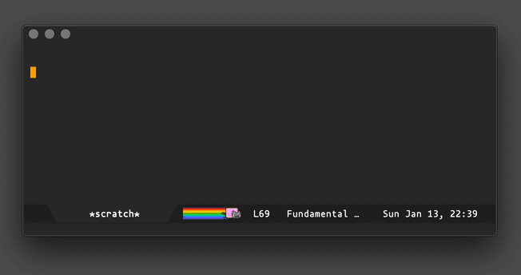
# Podcast bookmarks
# Emacs on macOS Mojave
Had issues running Emacs on macOS Mojave (blank unresponsive screen). Bleeding edge emacs-plus did the job:
brew tap d12frosted/emacs-plus brew install emacs-plus --without-spacemacs-icon --HEAD
brew info emacs-plus
d12frosted/emacs-plus/emacs-plus: stable 26.1, devel 26.1-rc1, HEAD
GNU Emacs text editor
https://www.gnu.org/software/emacs/
/Users/some-user/homebrew/Cellar/emacs-plus/HEAD-8fe21b0 (3,985 files, 123.0MB) *
Built from source on 2019-01-12 at 09:26:09 with: --without-spacemacs-icon
From: https://github.com/d12frosted/homebrew-emacs-plus/blob/master/Formula/emacs-plus.rb
==> Dependencies
Build: pkg-config
Recommended: little-cms2, gnutls, librsvg, imagemagick@6
Optional: dbus, mailutils
==> Requirements
Optional: x11
==> Options
--with-ctags
Don't remove the ctags executable that Emacs provides
--with-dbus
Build with dbus support
--with-emacs-icons-project-EmacsIcon1
Using Emacs icon project EmacsIcon1
--with-emacs-icons-project-EmacsIcon2
Using Emacs icon project EmacsIcon2
--with-emacs-icons-project-EmacsIcon3
Using Emacs icon project EmacsIcon3
--with-emacs-icons-project-EmacsIcon4
Using Emacs icon project EmacsIcon4
--with-emacs-icons-project-EmacsIcon5
Using Emacs icon project EmacsIcon5
--with-emacs-icons-project-EmacsIcon6
Using Emacs icon project EmacsIcon6
--with-emacs-icons-project-EmacsIcon7
Using Emacs icon project EmacsIcon7
--with-emacs-icons-project-EmacsIcon8
Using Emacs icon project EmacsIcon8
--with-emacs-icons-project-EmacsIcon9
Using Emacs icon project EmacsIcon9
--with-emacs-icons-project-emacs-card-blue-deep
Using Emacs icon project emacs-card-blue-deep
--with-emacs-icons-project-emacs-card-british-racing-green
Using Emacs icon project emacs-card-british-racing-green
--with-emacs-icons-project-emacs-card-carmine
Using Emacs icon project emacs-card-carmine
--with-emacs-icons-project-emacs-card-green
Using Emacs icon project emacs-card-green
--with-mailutils
Build with mailutils support
--with-modern-icon
Using a modern style Emacs icon by @tpanum
--with-no-titlebar
Experimental: build without titlebar
--with-pdumper
Experimental: build from pdumper branch and with
increasedremembered_data size (--HEAD only)
--with-x11
Experimental: build with x11 support
--with-xwidgets
Experimental: build with xwidgets support (--HEAD only)
--without-cocoa
Build a non-Cocoa version of Emacs
--without-gnutls
Build without gnutls support
--without-imagemagick@6
Build without imagemagick@6 support
--without-librsvg
Build without librsvg support
--without-libxml2
Build without libxml2 support
--without-little-cms2
Build without little-cms2 support
--without-modules
Build without dynamic modules support
--without-multicolor-fonts
Build without a patch that enables multicolor font support
--without-spacemacs-icon
Build without Spacemacs icon by Nasser Alshammari
--devel
Install development version 26.1-rc1
--HEAD
Install HEAD version
==> Caveats
Emacs.app was installed to:
/Users/some-user/homebrew/Cellar/emacs-plus/26.1
To link the application to default Homebrew App location:
brew linkapps
or:
ln -s /Users/some-user/homebrew/Cellar/emacs-plus/26.1/Emacs.app /Applications
--natural-title-bar option was removed from this formula, in order to
duplicate its effect add following line to your init.el file
(add-to-list 'default-frame-alist '(ns-transparent-titlebar . t))
(add-to-list 'default-frame-alist '(ns-appearance . dark))
or:
(add-to-list 'default-frame-alist '(ns-transparent-titlebar . t))
(add-to-list 'default-frame-alist '(ns-appearance . light))
If you are using macOS Mojave, please note that most of the experimental
options are forbidden on Mojave. This is temporary decision.
To have launchd start d12frosted/emacs-plus/emacs-plus now and restart at login:
brew services start d12frosted/emacs-plus/emacs-plus
Or, if you don't want/need a background service you can just run:
emacs
# Trying out Emacs pdf tools
Late to the party, giving pdf-tools a try.
The macOS install instructions have a prerequisite:
brew install poppler automake
Installed with:
(use-package pdf-tools :ensure t :mode ("\\.pdf\\'" . pdf-view-mode) :config (pdf-tools-install) (setq-default pdf-view-display-size 'fit-page) (setq pdf-annot-activate-created-annotations t))
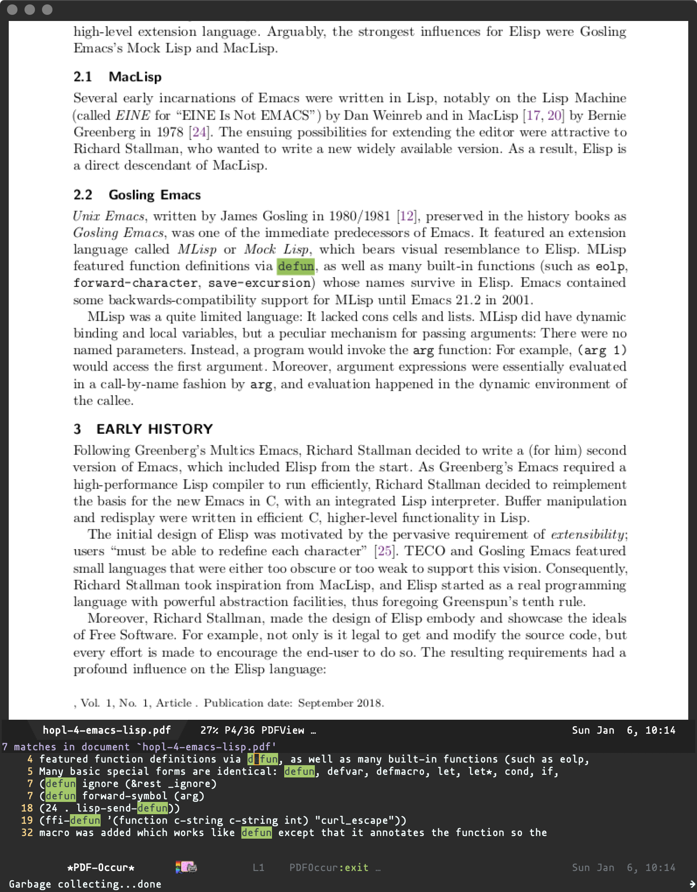
ps. Menu data from Star of Kings, Wahaca, and Pizzarino.
# ASCII art generator bookmarks
# Osaka travel bookmarks
# Using OCR to create searchable pdfs from images
Used my phone to take a handful of photos of an article from a magazine. Wanted to convert the images to a searchable pdf on macOS.
This was straightforward, having already installed tesseract.
for i in IMG_3*.jpg; do echo $i; tesseract $i $(basename $i .tif) pdf; done
Should now have a handful of OCR'd pdfs:
ls *.jpg.pdf
IMG_3104.jpg.pdf IMG_3105.jpg.pdf IMG_3106.jpg.pdf IMG_3107.jpg.pdf
Finally, join all pdfs into one. Turns out macOS has a handy python script already installed. We can use it as:
/usr/bin/python "/System/Library/Automator/Combine PDF Pages.action/Contents/Resources/join.py" -o joined.pdf IMG_*pdf
ps. pdfgrep is great for searching pdfs.
Useful references
# Audiobook providers bookmarks
# Cookbook bookmarks
# Emailing pdfs to kindle from mu4e
Wanted to send a pdf to my kindle for some holiday reading. You can easily do this by emailing the pdf to your kindle-bound email address.
Now, I typically attach files when composing mu4e emails by using mml-attach-file, which attaches the file using <#part>…<#/part>. However, the Amazon service did not find the attached pdf, so no pdf was added to my Kindle.
Fortunately, I found a handy Reddit thread, leding me to a working solution. Wrapping the part using <#multipart type=mixed>…<#/multipart> did the job, using mml-insert-multipart, followed by mml-attach-file.
Resulting attachment should look something like:
<#multipart type=mixed> <#part type="application/pdf" filename="/path/to/file.pdf" disposition=attachment> <#/part> <#/multipart>
I should add a convenience elisp function for this, but that's for another time…
# org tip: convert csv to table
Needed to import some csv data to an org table. Turns out org's got you covered out of the box with M-x org-table-create-or-convert-from-region bound to C-c |.
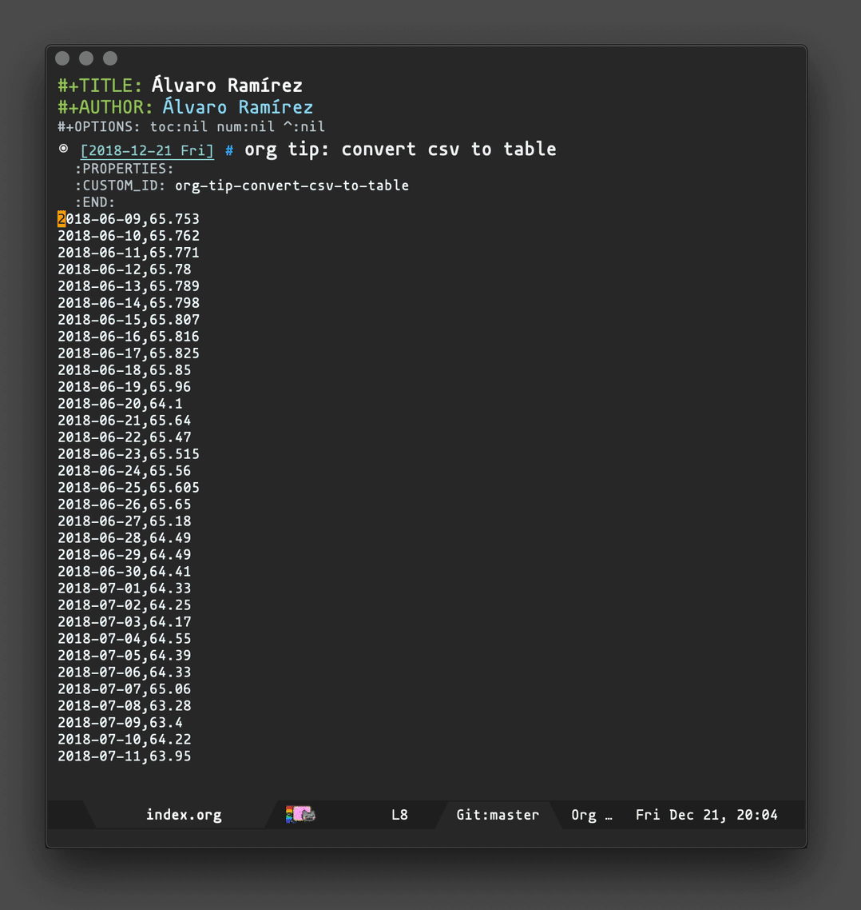
# Sponsoring platform bookmarks
# Artistic/creative bookmarks
# Marketing bookmarks
# Bluetooth low energy (BLE) bookmarks
# Fun project bookmarks
# Snowboarding bookmarks
# Scam bookmarks
# Passive income bookmarks
# DWIM ivy quit
"Do-what-I-mean" (DWIM) functions enable us to introduce new Emacs powers to existing workflows without incurring the typical cost of remembering multiple related functions or introducing yet another key binding. DWIM functions invoke other functions, based on current context.
I wanted a small tweak in Ivy's `minibuffer-keyboard-quit' invocation, commonly invoked via C-g key binding:
- If we have text selected in minibuffer, deselect it.
- If we have any text in minibuffer, clear it.
- If no text in minibuffer, quit.
Added `ar/ivy-keyboard-quit-dwim' for this purpose. Binding it to C-g in ivy-minibuffer-map:
(use-package ivy :ensure t :bind (:map ivy-minibuffer-map ("C-g" . ar/ivy-keyboard-quit-dwim)) :config (defun ar/ivy-keyboard-quit-dwim () "If region active, deactivate. If there's content, clear the minibuffer. Otherwise quit." (interactive) (cond ((and delete-selection-mode (region-active-p)) (setq deactivate-mark t)) ((> (length ivy-text) 0) (delete-minibuffer-contents)) (t (minibuffer-keyboard-quit)))))
# Diffing directories content size
Needed to diff two directories, but only interested in file size changes. diff, find, sort, and stat seem to do the job:
diff <(find dir1 -type f -exec stat -f '%N %z' '{}' \; | sort) <(find dir2 -type f -exec stat -f '%N %z' '{}' \; | sort)
1,3c1,2 < dir1/one.txt 14 < dir1/subdir/file.txt 5 < dir1/three.txt 7 --- > dir2/one.txt 19 > dir2/two.txt 0
Note: Using diff, find, sort, and stat on macOS.
Update 1
I've since learned about mtree (thanks Roman!). A nice utility to add to the toolbox.
mtree -p emacs-25.1 -c -k size -d
# user: me # machine: my-machine # tree: /path/to/emacs-25.1 # date: Wed Dec 5 22:21:07 2018 # . /set type=dir . size=1152 # ./admin admin size=960 # ./admin/charsets charsets size=544 # ./admin/charsets/glibc glibc size=3392 # ./admin/charsets/glibc .. # ./admin/charsets/mapfiles mapfiles size=640 # ./admin/charsets/mapfiles ..
Update 2
I've added Emacs ediff to the mix:
(require 'f) (defun ar/ediff-dir-content-size () "Diff all subdirectories (sizes only) in two directories." (interactive) (let* ((dir1-path (read-directory-name "Dir 1: ")) (dir2-path (read-directory-name "Dir 2: ")) (buf1 (get-buffer-create (format "*Dir 1 (%s)*" (f-base dir1-path)))) (buf2 (get-buffer-create (format "*Dir 2 (%s)*" (f-base dir2-path))))) (with-current-buffer buf1 (erase-buffer)) (with-current-buffer buf2 (erase-buffer)) (shell-command (format "cd %s; find . -type d | sort | du -h" dir1-path) buf1) (shell-command (format "cd %s; find . -type d | sort | du -h" dir2-path) buf2) (ediff-buffers buf1 buf2)))
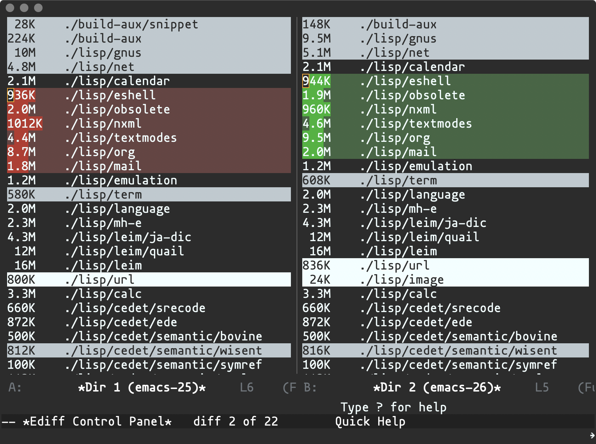
# Swift nil-coalescing operator
Paul Hudson, over at Hacking with Swift, has written The Complete Guide to Optionals in Swift. One of the many highlights is the nil-coalescing operator. If you're a fan of the C-like syntax in ternary operations, you'd enjoy chaining with Swift's nil-coalescing operator:
let players = [ "goose": "run!" ] let move = players["duck1"] ?? players["duck2"] ?? players["duck3"] ?? players["goose"] print("\(String(describing: move))")
Optional("run!")
ps. Swift snippet run on Emacs org babel's ob-swift. See Multiline Swift strings for details.
# Ocado vs Asda (org table)
Someone handed me an Ocado shopping voucher for 30% off. Sounded promising, even for a one-off.
With my Money or Your Life hat on, I took a closer look for potential savings. Results were disappointing, when compared to alternatives like Asda.
Here's a table comparing Ocado (30% off) and Asda (no discount):
| Ocado | Asda | |
|---|---|---|
| Coconut Merchant Organic Raw Extra Virgin Coconut Oil 500ml | 6.74 | |
| KTC 100% pure coconut oil | 2.00 | |
| Waitrose Love Life Popcorn Maize 510g | 1.50 | |
| Cypressa Popping Corn 2x500g = 1000g | 1.50 | |
| Whitworths Ground Almonds | 2.00 | |
| Whitworths Ground Almonds | 1.60 | |
| Total | £ 5.10 | |
| -30% | £ 7.17 |
On the upside, Ocado has plenty of items I cannot find at Asda. May be a good opportunity to get these items at a discount.
Emacs org tables
Small tables are the perfect use-case for Emacs org-mode tables. Been a while since I used one, so great timing for a little refresh.
Here's the org source for the table above (prior to exporting to HTML):
|-------------------------------------------------------------+--------+--------| | | Ocado | Asda | |-------------------------------------------------------------+--------+--------| | Coconut Merchant Organic Raw Extra Virgin Coconut Oil 500ml | 6.74 | | | KTC 100% pure coconut oil | | 2.00 | | Waitrose Love Life Popcorn Maize 510g | 1.50 | | | Cypressa Popping Corn 2x500g = 1000g | | 1.50 | | Whitworths Ground Almonds | 2.00 | | | Whitworths Ground Almonds | | 1.60 | |-------------------------------------------------------------+--------+--------| | Total | | £ 5.10 | |-------------------------------------------------------------+--------+--------| | -30% | £ 7.17 | | |-------------------------------------------------------------+--------+--------| #+TBLFM: @8$3=vsum(@2$3..@7$3);£ %.2f::@9$2=vsum(@2$2..@7$2) * 0.7;£ %.2f
# Execute org blocks as root
Been saving admin code snippets in my own org source blocks, some requiring root access. Handy for keeping tiny self-documented scripts to easily bootstrap other machines. TIL org source block's :dir argument can be used to run block as root by using tramp syntax: :dir /sudo::
As user: #+BEGIN_SRC sh whoami #+END_SRC #+RESULTS: : user As root: #+BEGIN_SRC sh :dir /sudo:: whoami #+END_SRC #+RESULTS: : root
# Inline Swift computed properties
Via objc.io and Max Howell's retweet, TIL about Swift's inline computed properties. Another one to try on Org Babel.
func greetWorld() { var message = "hello" var betterMessage: String { return "\(message) world" } print(betterMessage) } greetWorld()
hello world
# Multiline Swift strings
Paul Hudson's tweet introduced me to Swift's multiline string indentation control using closing quotes. Neat!
Being an org-mode fan, I thought I'd give Swift multiline strings a try using Org Babel's ob-swift. I get to verify it and document at the same time. Win.
Swift org mode source blocks (ie. BEGIN_SRC/END_SRC) can be added as follows:
#+BEGIN_SRC swift :exports both print(""" Hello World """) print(""" Hello World """) #+END_SRC #+RESULTS: : Hello World : Hello World
By pressing C-c C-c anywhere in the code block, the snippet is executed and its output captured in the RESULT block. Super handy for quickly trying out snippets and keeping as future reference.
As a bonus, the above blocks can be exported to HTML (amongst other formats). With some styling, it looks as follows:
print(""" Hello World """) print(""" Hello World """)
Hello World
Hello World
# Quickly swapping elfeed filters
I seem to be more efficient in getting through rss feeds by individually browsing through related content. That is, I can get through all Emacs entries a lot faster if I look at Emacs content exclusively, instead of mixing with say BBC news. Elfeed filters are great for filtering related content.
I wanted a way to easily switch through my typical categories of related content by quickly changing elfeed filters using a completion framework.
Emacs's completing-read plays nicely with your favorite completing framework (mine is ivy). With a couple of functions, we can get Emacs to ask us for the filtering category using human-readable options and quickly presenting related content. Binding the new functionality to <tab> is working well for me.
(use-package elfeed :ensure t :commands elfeed :bind (:map elfeed-search-mode-map ("<tab>" . ar/elfeed-completing-filter)) :config (defun ar/elfeed-filter-results-count (search-filter) "Count results for SEARCH-FILTER." (let* ((filter (elfeed-search-parse-filter search-filter)) (head (list nil)) (tail head) (count 0)) (let ((lexical-binding t) (func (byte-compile (elfeed-search-compile-filter filter)))) (with-elfeed-db-visit (entry feed) (when (funcall func entry feed count) (setf (cdr tail) (list entry) tail (cdr tail) count (1+ count))))) count)) (defun ar/elfeed-completing-filter () "Completing filter." (interactive) (let ((categories (-filter (lambda (item) (> (ar/elfeed-filter-results-count (cdr item)) 0)) '(("All" . "@6-months-ago +unread") ("BBC" . "@6-months-ago +unread +bbc") ("Dev" . "@6-months-ago +unread +dev") ("Emacs" . "@6-months-ago +unread +emacs") ("Health" . "@6-months-ago +unread +health") ("Hacker News" . "@6-months-ago +unread +hackernews") ("iOS" . "@6-months-ago +unread +ios") ("Money" . "@6-months-ago +unread +money"))))) (if (> (length categories) 0) (progn (ar/elfeed-view-filtered (cdr (assoc (completing-read "Categories: " categories) categories))) (goto-char (window-start))) (message "All caught up \\o/")))))
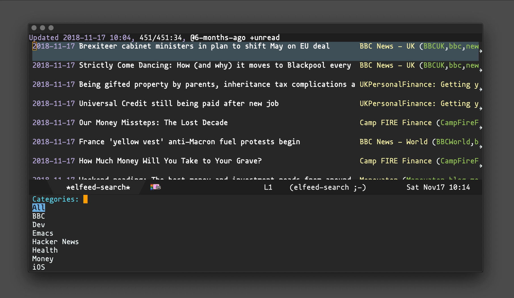
We don't actually need two functions, but ar/elfeed-filter-results-count enables us to list only those feeds that actually have new content. The list will shrink as we get through our content. When no content is left, we get a little celebratory message.
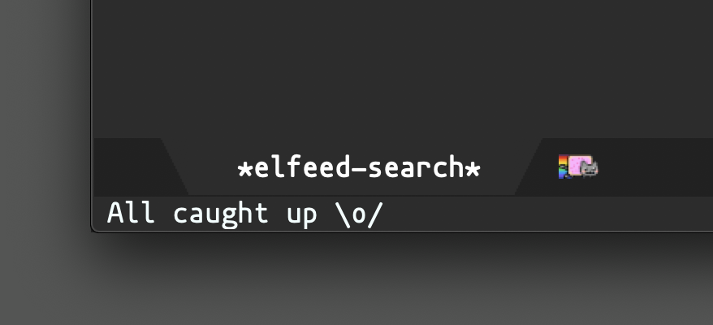
# Converting docx to pdf on macOS
Wanted to convert a docx document to pdf on macOS. Pandoc to the rescue, but first needed pdflatex installed:
pandoc some.docx -o some.pdf
pdflatex not found. Please select a different --pdf-engine or install pdflatex
Installed pdflatex on macOS with:
brew cask install mactex
# Faster elfeed browsing with paging
Following up from faster junk mail deletion with mu4e, elfeed is another candidate for enabling actions on pages. In this case, marking rss entries as read, page by Page.
If on use-package, the function can defined and bound to the "v" key using:
(use-package elfeed :ensure t :bind (:map elfeed-search-mode-map ("v" . ar/elfeed-mark-visible-as-read)) :config (defun ar/elfeed-mark-visible-as-read () (interactive) (require 'window-end-visible) (set-mark (window-start)) (goto-char (window-end-visible)) (activate-mark) (elfeed-search-untag-all-unread) (elfeed-search-update--force) (deactivate-mark) (goto-char (window-start))))
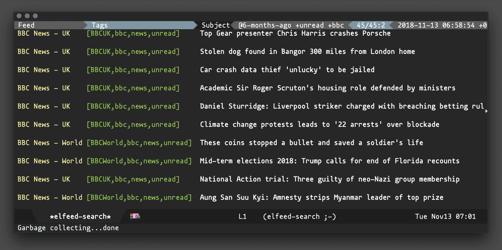
# Faster junk mail deletion with mu4e
It's been roughly 5 months since my mu4e email migration. Happy with my choice. Mu4e is awesome.
I now have 4 email accounts managed by mu4e, and unfortunately receiving lots of junk mail.
I regularly peek at junk folders for false positives and delete junk email permanently. I've been wanting a quick way to glance at junk mail and easily delete page by page.
Deleting emails page by page is not supported in mu4e by default. Fortunately, this is Emacs and we can change that™.
There's a handy package by Roland Walker called window-end-visible. We can use it to select mu4e emails by page and subsequently glue it all together to enable deleting emails by page.
(require 'mu4e) (require 'window-end-visible) (defun ar/mu4e-delete-page () (interactive) (set-mark (window-start)) (goto-char (window-end-visible)) (activate-mark) (mu4e-headers-mark-for-trash) (mu4e-mark-execute-all t) (deactivate-mark) (goto-char (window-start)))
I'm a use-package fan, so I use it to bind the "v" key to delete visible emails (by page).
(use-package mu4e :bind (:map mu4e-headers-mode-map ("v" . ar/mu4e-delete-page))
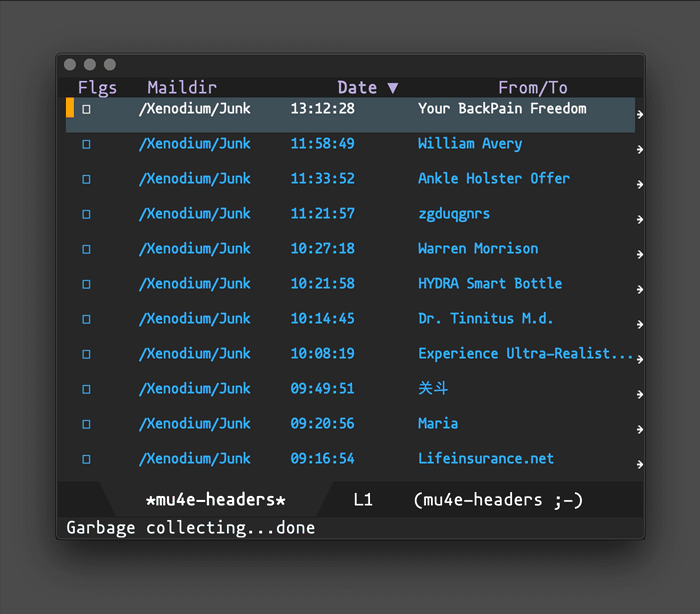
# Working with vultr's ipv6-only instances
Having recently read Your Money or Your Life, I've been cutting down on personal expenses wherever possible. Specially recurring expenses which include monthly charges from VPS hosting. Let's reduce those charges…
My VPS needs are fairly small (mostly hobby and tinkering). Vultr† has a plan for $2.50/month (not seen anything cheaper). The caveat for the price, you get ipv6 access only (ie. 0000:1111:2222:3333:4444:5555:6666:7777:8888).
So far so good, but my ISP doesn't yet support ipv6:
$ ping6 0000:1111:2222:3333:4444:5555:6666:7777:8888 $ ping6: UDP connect: No route to host
Fortunately, we can still work with ipv6 by using a tunnel (TIL about Hurricane Electric's tunnel broker). After signing up and creating a tunnel, they conveniently show you "Example Configurations" from the "Tunnel Details" menu. In my case, macOS:
ifconfig gif0 create ifconfig gif0 tunnel <ipv4 client broker IP or DCHP internal IP> <ipv4 server IP> ifconfig gif0 inet6 <ipv6 client broker IP> <ipv6 server IP> prefixlen 128 route -n add -inet6 default <ipv6 server IP>
Note: If behind router, use the DHCP internal IP.
After configuring with ifconfig, all is good. Yay!
$ ping6 0000:1111:2222:3333:4444:5555:6666:7777:8888 PING6(56=40+8+8 bytes) 2001:111:22:aaa::2 --> 0000:1111:2222:3333:4444:5555:6666:7777:8888 16 bytes from 0000:1111:2222:3333:4444:5555:6666:7777:8888, icmp_seq=0 hlim=52 time=270.019 ms 16 bytes from 0000:1111:2222:3333:4444:5555:6666:7777:8888, icmp_seq=1 hlim=52 time=290.834 ms 16 bytes from 0000:1111:2222:3333:4444:5555:6666:7777:8888, icmp_seq=2 hlim=52 time=311.960 ms 16 bytes from 0000:1111:2222:3333:4444:5555:6666:7777:8888, icmp_seq=3 hlim=52 time=330.902 ms
I'm an ipv6 noob. I mostly need ssh access. My typical usages need small tweaks.
For ssh:
ssh -6 username@0000:1111:2222:3333:4444:5555:6666:7777:8888
For scp:
scp -6 file.txt username@\[0000:1111:2222:3333:4444:5555:6666:7777:8888\]:/remote/dir/
† I get $10 credit if you use this affiliate link. Thank you.
# Shaving bookmarks
# Buy it for life bookmarks
# Rust bookmarks
# Fonts bookmarks
# imenu on Emacs eshell
# Encrypted disk image on macOS
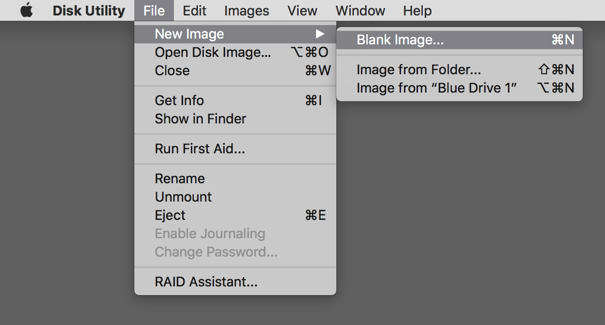
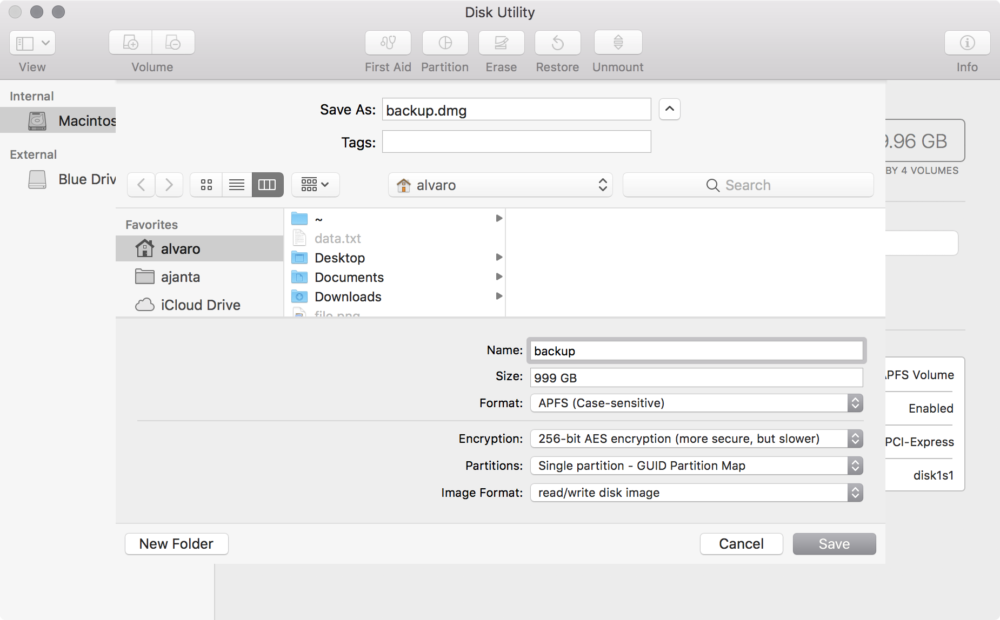
# Sheffield travel bookmarks
# Headsphones bookmarks
# macOS app bookmarks
# Gaming bookmarks
# Lua bookmarks
# Skin product bookmarks
# Sustainability bookmarks
# Investment platform bookmarks
- Backtest Portfolio Asset Allocation.
- Bravos.
- CMLviz.com - BETA.
- DEGIRO - Online Stock Trading - Stockbroking (cheaper?).
- Free Stock API for Realtime and Historical Data (IEX).
- Freetrade - Free Stock Investing.
- Halifax UK | Buying and selling (Sharedealing).
- Hargreaves Lansdown (ISAs, pensions, funds and shares).
- IWeb Share Dealing (cheaper?).
- Lend to UK Businesses | Investment (Funding Circle).
- RateSetter Peer To Peer Lender (P2P Investing and Borrowing).
- Stock Portfolio Management Software (Stock Portfolio Organizer).
- StockDaddy - Free, real-time, easy to use stock portfolio tracker.
- StockLight - Australia's premier investing app.
- Stocks and cryptocurrency portfolio tracker (wallmine).
# Minimalist bookmarks
# Recover from Time Machine's "backup already in use"
Started seeing "backup already in use" error from my daily Time Machine backups, against my Synology. Disabling and re-enabling AFP did the job (via Synology -> Control Panel -> Files Services -> Enable AFP service).
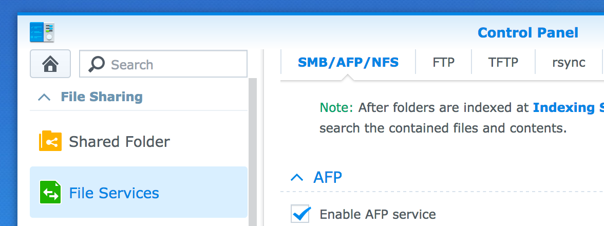
# CMake bookmarks
# GTD/Get things done bookmarks
# Pandoc bookmarks
# Mauritius travel bookmarks
# Scala bookmarks
# Actionable URLs in Emacs buffers
Should have enabled actionable URLs in my Emacs buffers long ago. Can now click or press return to follow links. It's great on eshell, compilation buffers, async shell commands, code, etc.
(use-package goto-addr :hook ((compilation-mode . goto-address-mode) (prog-mode . goto-address-prog-mode) (eshell-mode . goto-address-mode) (shell-mode . goto-address-mode)) :bind (:map goto-address-highlight-keymap ("<RET>" . goto-address-at-point) ("M-<RET>" . newline)) :commands (goto-address-prog-mode goto-address-mode))
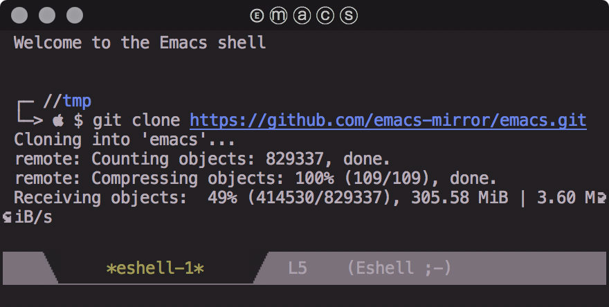
# Bazel bookmarks
# Palestine travel bookmarks
# Enabling Control-Meta(⌘)-D on macOS
I use command (⌘) as my Emacs Meta key. Recently discovered C-M-d is not available to Emacs for binding keys on macOS. Stack Exchange had the workaround:
defaults write com.apple.symbolichotkeys AppleSymbolicHotKeys -dict-add 70 '<dict><key>enabled</key><false/></dict>'
# Recycling bookmarks
# Comoro islands travel bookmarks
# France travel bookmarks
# Corsica travel bookmarks
# Mozambique travel bookmarks
# M-r history search in git-commit-mode
I've grown accustomed to M-r bindings to search Emacs history. Been wanting similar functionality to search commit message history. Turns out log-edit-comment-ring has some of my local commit message history. Feeding it to completing-read gives me an easily searchable history when using a completing framework like ivy or helm:
(defun ar/git-commit-search-message-history () "Search and insert commit message from history." (interactive) (insert (completing-read "History: " ;; Remove unnecessary newlines from beginning and end. (mapcar (lambda (text) (string-trim text)) (ring-elements log-edit-comment-ring)))))
Now we bind it to M-r and we're good to go:
(bind-key "M-r" #'ar/git-commit-search-message-history git-commit-mode-map)
May also want to persist log-edit-comment-ring across Emacs sessions by adding log-edit-comment-ring to savehist variables. Also ensure savehist-mode is enabled:
(add-to-list 'savehist-additional-variables log-edit-comment-ring) (savehist-mode +1)
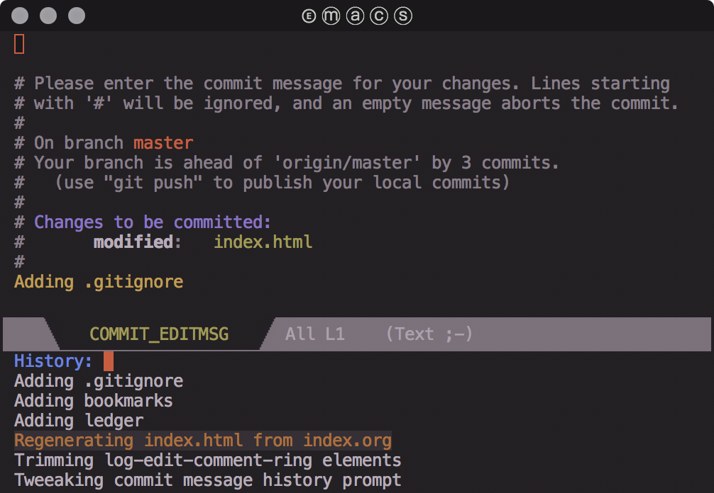
# Morning smoothie
Big fan of my morning power smoothie. Best deals I've found so far:
- Almonds (BuyWholeFoodsOnline.co.uk, £1.06/100g @ Amazon).
- Banana.
- Blueberries.
- Chia seeds (£4.99/Kg @ Real Food Source).
- Cocoa powder (Active foods, £ 1.7/100g @ Bulk Powders).
- Coconut water (Innocent, £0.37/100ml @ Tesco).
- Crunchy peanut butter (£ 4.99/Kg @ Real Food Source).
- Matcha powder (Active £6.8/100g @ Bulk Powders).
- Strawberries.
ps. I have no affiliation to either retailer. Prices may change.
# Installing ludget (ledger visualization
Needed python3:
brew install python3
Use pip3 to install ludget:
pip3 install ludget
# Ledger bookmarks
- Accounting and financial statements (Khan Academy).
- Command Line Accounting - A look at the various ledger ports (mkauer).
- Conquering Your Finances with Emacs and Ledger : emacs.
- Conquering your finances with Emacs and Ledger.
- Convert a CSV file (comma separated values) from your bank into ledger format.
- Examples of recent and older CSV rules files for ledger.
- Full-fledged Hledger: Full-Fledged Hledger setup with multiple yearly files.
- GitHub - barrucadu/finances: A small tool to visualise my hledger journal..
- GitHub - Clever/csvlint: library and command line tool that validates a CSV file.
- Importing transactions from bank. : plaintextaccounting (Reddit).
- Ledger CLI cheatsheet.
- Ledger CSV format cheatsheet.
- Ledger examples cheatsheet.
- Ledger periods cheatsheet.
- Ledger queries cheatsheet.
- Ledger, a powerful CLI accounting tool (Hacker News).
- ledger/ledger-mode tips and tricks? (Reddit).
- Ledger: Command-Line Accounting (convert csv command).
- Ledger: Command-Line Accounting (documentation).
- ludget: ledger-cli data visualization.
- Memo's personal Finance post on plain-text accounting.
- Plain Text Accounting, a guide to Ledger and friends - plaintextaccounting.org (comparisons).
- Plain Text Accounting, a guide to Ledger and friends - plaintextaccounting.org (import).
- Program your Finances: Command-line Accounting (Pete Keen).
- Report Scripts for Ledger CLI with Gnuplot (日光漫想).
- Show HN: Ledger-analytics – Analytics for ledger-cli (Hacker News).
- Terencio's Ledger Emacs config.
- TIP: How I use ledger to track my money : emacs.
- Tracking Investments in Lots with Hledger.
- Using Ledger for YNAB-like envelope budgeting.
- Visualise your finances with hledger, InfluxDB, and Grafana.
- Ways to Categorize Your Spending (Mint).
- Who's using ledger? · ledger/ledger Wiki.
# Tip: Convert .texi to .info
Convert with:
makeinfo doc.texi
View with:
Open in Emacs and render as info with:
(defun ar/format-info-mode () (interactive) (let ((file-name (buffer-file-name))) (kill-buffer (current-buffer)) (info file-name)))
# Marking 20k emails as read
Mbsync and mu4e are great for syncing and handling IMAP email. I've now migrated 4 email addresses, including an old Yahoo account.
I wanted to mark all my Yahoo unread emails as read. Yahoo's webmail enables marking 500 emails at a time, making the process a little tedious.
Mu-discuss has a handy thread, highlighting that moving/renaming synced messages (in your local file system) would do the job. This worked well for me.
Let's do just that…
WARNING: Copy a small sample of your mails to a separate directory and run some trials until you feel comfortable.
Find your mail directory.
cd path/to/mail
Peek at the messages you'd like to mark unread:
ls -1 new/
1529958027.57518_11.mbp,U=8415:2, 1531346210.38822_3.mbp,U=8741:2, 1532464801.21057_1.mbp,U=9028:2, 1532464801.21057_2.mbp,U=9029:2,
Rename message files by appending "S" to their filename and moving from new/ to cur/ directory.
for FILE in new/*; do mv "${FILE}" cur/$(basename "${FILE}")S; done;
We can verify the move.
ls -1 cur/
1529958027.57518_11.mbp,U=8415:2,S 1531346210.38822_3.mbp,U=8741:2,S 1532464801.21057_1.mbp,U=9028:2,S 1532464801.21057_2.mbp,U=9029:2,S
Let's sync the local changes.
mbsync -Va
…and we're done ;)
# Show iOS simulator touches
TIL from this tweet, that you can enable showing touches on iOS simulator. This is handy for making nicer screencasts.
defaults write http://com.apple .iphonesimulator ShowSingleTouches 1
# Amsterdam travel bookmarks
# Hardware bookmarks
# fitbit API, org babel, and gnuplot
Retook running recently. Took the dust off my aria scale and used the opportunity to check out fitbit's API.
First register your app at dev.fitbit.com/apps/new and get a client_id=AABBCC.
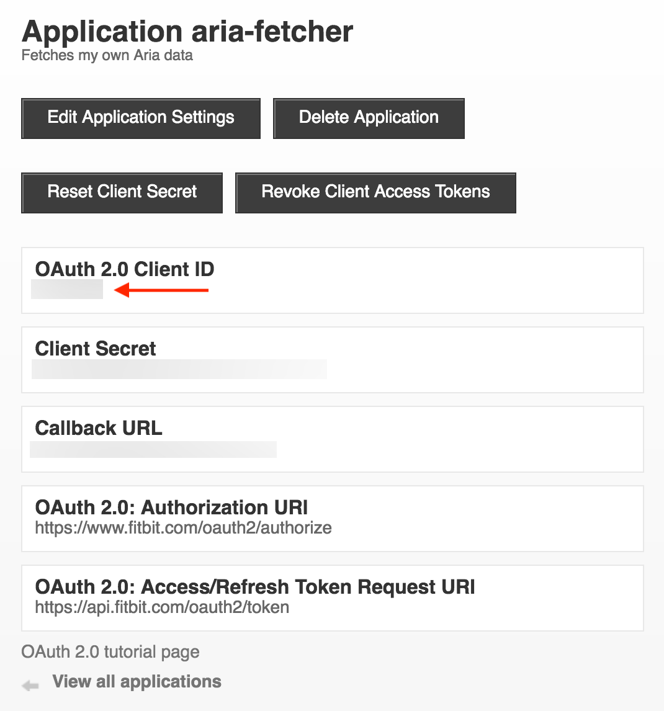
You'll also need your USER_ID, from your Fitbitx user profile.
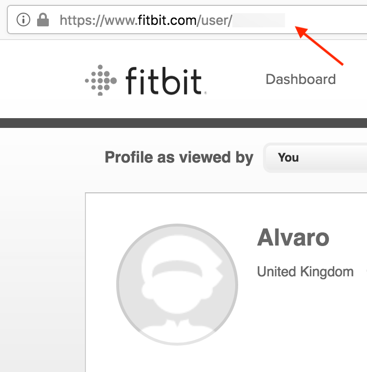
We'll also need a token. I used the implicit grant flow URL in my browser and extracted access_token=TOKEN.
Now let's wire up two org source blocks to fetch the data and subsequently plot using gnuplot.
It's pretty neat. You can take the output from one source block and use it as input to another.
We use curl to fetch data from fitbit's API and pipe through jq and sed to massage the output format into two columns.
Note: Before using gnuplot in org babel, you'll need to install the gnuplot package and add to babel languages.
(use-package gnuplot :ensure t) (use-package ob :config (org-babel-do-load-languages 'org-babel-load-languages '((gnuplot . t))))
curl -s -H "Authorization: Bearer TOKEN" https://api.fitbit.com/1/user/USER_ID/body/weight/date/2018-06-09/2018-07-11.json | jq '.[][] | "\(.dateTime) \(.value)"' | sed 's/"//g'
| 2018-06-09 | 65.753 |
| 2018-06-10 | 65.762 |
| 2018-06-11 | 65.771 |
| 2018-06-12 | 65.78 |
| 2018-06-13 | 65.789 |
| 2018-06-14 | 65.798 |
| 2018-06-15 | 65.807 |
| 2018-06-16 | 65.816 |
| 2018-06-17 | 65.825 |
| 2018-06-18 | 65.85 |
| 2018-06-19 | 65.96 |
| 2018-06-20 | 64.1 |
| 2018-06-21 | 65.64 |
| 2018-06-22 | 65.47 |
| 2018-06-23 | 65.515 |
| 2018-06-24 | 65.56 |
| 2018-06-25 | 65.605 |
| 2018-06-26 | 65.65 |
| 2018-06-27 | 65.18 |
| 2018-06-28 | 64.49 |
| 2018-06-29 | 64.49 |
| 2018-06-30 | 64.41 |
| 2018-07-01 | 64.33 |
| 2018-07-02 | 64.25 |
| 2018-07-03 | 64.17 |
| 2018-07-04 | 64.55 |
| 2018-07-05 | 64.39 |
| 2018-07-06 | 64.33 |
| 2018-07-07 | 65.06 |
| 2018-07-08 | 63.28 |
| 2018-07-09 | 63.4 |
| 2018-07-10 | 64.22 |
| 2018-07-11 | 63.95 |
Now feed the two column data to gnuplot.
reset set title "My recent weight" set xdata time set timefmt '%Y-%m-%d' set format x "%d/%m/%y" set term png set xrange ['2018-06-09':'2018-07-11'] plot data u 1:2 with linespoints title 'Weight in Kg'
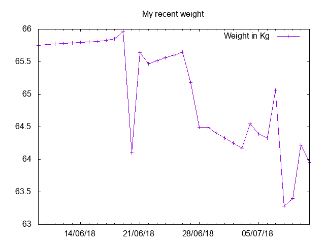
Fetching data and plotting through org babel and gnuplot is pretty sweet. I've barely scratched the surface. There's more at Org-babel-gnuplot and Plotting tables in Org-Mode using org-plot. Either way, this is another Emacs super power to keep in the toolbox.
# PIPESTATUS for all return codes
From @saruspete's tweet, ${PIPESTATUS[@]} gives ya all piped commands' return codes:
echo foo | grep bar | tr z a | cat echo ${PIPESTATUS[@]}
0 1 0 0
# Emacs utilities for your OS
Narrowing utilities are a wonderful way of increasing productivity. I have a few workflows using Emacs's Helm framework.
There are great productivity boosters like Alfred and Quicksilver for macOS, with batteries included.
If you're a tinkerer, you'd enjoy the powerful Hammerspoon. Like elisp gluing all things Emacs, Hammerspoon uses Lua to glue all things macOS. You can build your own narrowing utilities using chooser and a little Lua.
local chooser = hs.chooser.new(function(choice)
hs.alert.show(choice['text'])
end)
chooser:choices({
{
["text"] = "Alfred",
["subText"] = "macOS only",
},
{
["text"] = "Quicksilver",
["subText"] = "macOS only",
},
{
["text"] = "Hammerspoon",
["subText"] = "macOS only",
},
{
["text"] = "Emacs",
["subText"] = "is everywhere :)",
},
})
chooser:show()
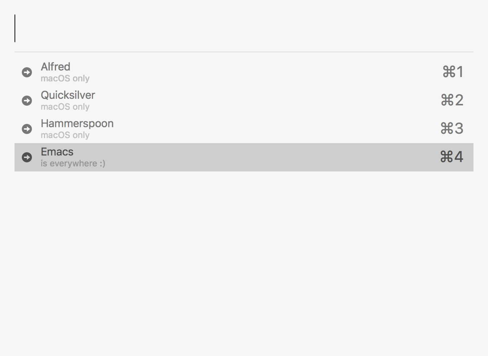
Howard Abrams's post on Capturing Content for Emacs inspired me to look at gluing Emacs and macOS to launch my own cross-platform narrowing utilities.
I've also taken this opportunity to look at Oleh Krehel's wonderful completion package: Ivy. We can use it to build a macOS narrowing utility.
Ivy is remarkably easy to use. Turns out, ivy-read is all you need. A simple Emacs completion can be accomplished with little elisp.
(ivy-read "Hello ivy: " '("One " "Two " "Three " "Four "))
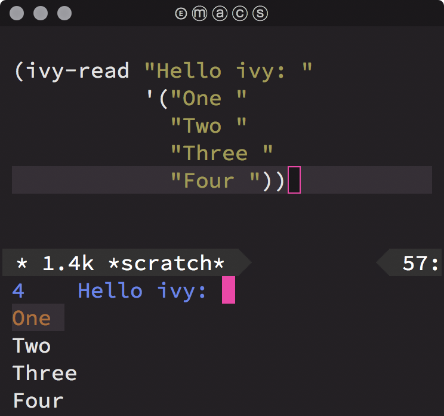
Pretty nifty. Let's make this completion more accessible from the rest of the OS. To do so, we create a separate Emacs frame and make it pretty. We also want it to interact with the OS. We'll use ivy-read's :action to invoke a tiny bit of AppleScript.
Oh and we'll also use some funny quotes to tease ourselves about our beloved editor.
(with-current-buffer (get-buffer-create "*modal-ivy*") (let ((frame (make-frame '((auto-raise . t) (background-color . "DeepSkyBlue3") (cursor-color . "MediumPurple1") (font . "Menlo 15") (foreground-color . "#eeeeec") (height . 20) (internal-border-width . 20) (left . 0.33) (left-fringe . 0) (line-spacing . 3) (menu-bar-lines . 0) (minibuffer . only) (right-fringe . 0) (tool-bar-lines . 0) (top . 48) (undecorated . t) (unsplittable . t) (vertical-scroll-bars . nil) (width . 110))))) (set-face-attribute 'ivy-minibuffer-match-face-1 frame :background nil :foreground nil) (set-face-attribute 'ivy-minibuffer-match-face-2 frame :background nil :foreground "orange1") (set-face-attribute 'ivy-minibuffer-match-face-3 frame :background nil :foreground "orange1") (set-face-attribute 'ivy-minibuffer-match-face-4 frame :background nil :foreground "orange1") (set-face-attribute 'ivy-current-match frame :background "#ffc911" :foreground "red") (set-face-attribute 'minibuffer-prompt frame :foreground "grey") (let ((ivy-height 20) (ivy-count-format "")) (ivy-read "Emacs acronyms: " '(" Emacs: Escape-Meta-Alt-Control-Shift " " Emacs: Eight Megabytes And Constantly Swapping " " Emacs: Even a Master of Arts Comes Simpler " " Emacs: Each Manual's Audience is Completely Stupified " " Emacs: Eventually Munches All Computer Storage " " Emacs: Eradication of Memory Accomplished with Complete Simplicity " " Emacs: Easily Maintained with the Assistance of Chemical Solutions " " Emacs: Extended Macros Are Considered Superfluous " " Emacs: Every Mode Accelerates Creation of Software " " Emacs: Elsewhere Maybe All Commands are Simple " " Emacs: Emacs Makes All Computing Simple " " Emacs: Emacs Masquerades As Comfortable Shell " " Emacs: Emacs My Alternative Computer Story " " Emacs: Emacs Made Almost Completely Screwed " " Emacs: Each Mail A Continued Surprise " " Emacs: Eating Memory And Cycle-Sucking " " Emacs: Elvis Masterminds All Computer Software " " Emacs: Emacs Makes A Computer Slow" ) :action (lambda (funny-quote) (async-shell-command (format "osascript -e 'tell app \"System Events\" to display dialog \"%s\" buttons {\"OK\"}'" funny-quote))) :unwind (lambda () (shell-command "/Applications/Hammerspoon.app/Contents/Resources/extensions/hs/ipc/bin/hs -c 'backFromEmacs()'") (delete-frame) (other-window 1))))))
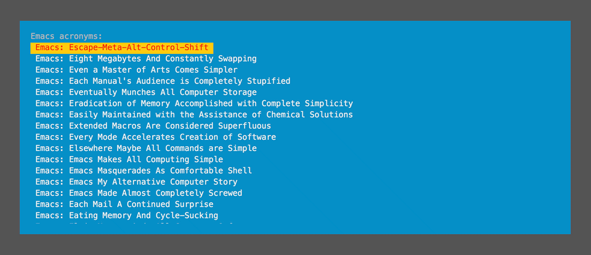
So where's all this going? I wrote a utility to extract all links from this page's org file and make them easily searchable from anywhere on macOS by invoking ⌥-W.
The keys are bound using Lua, Hammerspoon, and emacsclient. This works well on macOS, but there are alternatives for other operating systems.
hs.execute("emacsclient -ne \""..elisp.."\" -s /tmp/emacs*/server")
Here's the resulting utility in action:
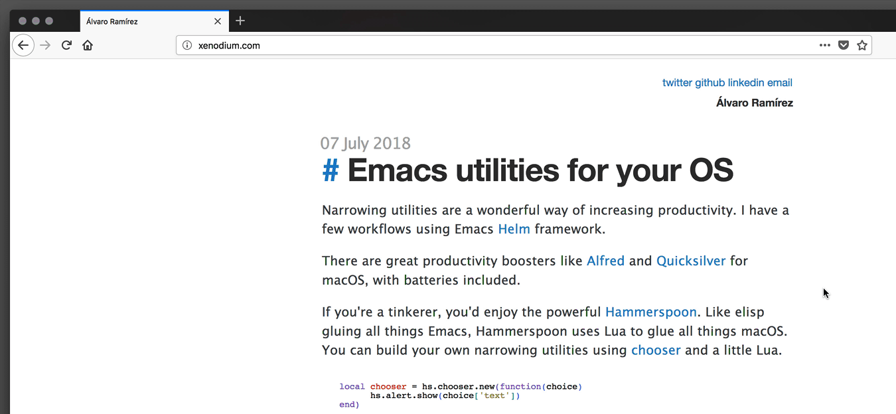
These integrations look promising. They enable me to bring cross-platform Emacs utilities into areas I hadn't considered.
# Web serving tools bookmarks
- Certbot: Automatically enable HTTPS on your website, deploying Let's Encrypt certificates..
- How to configure WireGuard to tunnel traffic from a macOS client through a Debian server with IPv4 and IPv6.
- HTTPS Is Easy (Irreal).
- I made my own WireGuard VPN server (Hacker News).
- MirageOS: high-performance network applications across a variety of cloud computing and mobile platforms.
- nginxconfig.io.
- Poor man's way of handling 1.3 million web request.
- Postman (API Development Environment).
- quark: an extremely small and simple HTTP GET/HEAD-only web server for static content (suckless.org tools).
- Web Authentication for Actual Humans, Part Two - DEV Community.
# URL shortener bookmarks
# Trying out mu4e with mbsync
The email fun in Emacs continues. After a few weeks since I started using mu4e and offlineimap, I'm sold. Both are awesome. Mbsync is an offlineimap alternative. Despite resyncing all my mail, the transition was fairly smooth. Here's how…
Install isync (for mbsync)
brew install isync
Configure mbsync
Mbsync uses ~/.mbsyncrc for configuration. Migrating ~/.offlineimaprc to ~/.mbsyncrc looks like:
IMAPAccount Personal Host some.imap.host.com User your_user_name PassCmd "gpg --quiet --batch -d ~/.offlineimap_accountname.gpg" Port 993 SSLType IMAPS AuthMechs Login CertificateFile ~/.offlineimapcerts.pem # My IMAP provider doesn't handle concurrent IMAP commands. PipelineDepth 1 IMAPStore Personal-remote Account Personal MaildirStore Personal-local Path ~/IMAP/Personal/ Inbox ~/IMAP/Personal/INBOX Channel Personal Master :Personal-remote: Slave :Personal-local: Patterns * Create Slave Sync All Expunge Both SyncState *
No concurrent IMAP commands supported
My IMAP provider doesn't handle concurrent IMAP commands. mbsync and Office 365 had the answer:
PipelineDepth 1
Initial sync
Run initial from the command line sync:
mbsync -Va
While syncing my largest inbox, it sometimes received an unexpected EOF error:
IMAP error: unexpected EOF from some.imap.host.com (1.2.3.4:993)
First few times, I restarted the syncing manually, but then used a loop to automatically restart it:
while true; do mbsync -V Xenodium; sleep 5; done
Create mu index
Reindex using mu, but first remove existing index for offlineimap messages:
rm -rf ~/.mu
Ok, do index now:
mu index --maildir=~/IMAP
Mu4e tweaks
The get mail command should now point to mbsync.
(csetq mu4e-get-mail-command "mbsync -Va")
I had issues with duplicate IDs after moving and deleting messages from mu4e. Migrating from offlineimap to mbsync for mu4e had the answer:
(csetq mu4e-change-filenames-when-moving t)
Helpful references
- Migrating from offlineimap to mbsync for mu4e | Pragmatic Emacs.
- Reading IMAP Mail in Emacs on OSX.
- My personal Email setup - Notmuch, mbsync, postfix and dovecot.
- My personal Email setup - Notmuch, mbsync, postfix and dovecot.
- A modern mutt setup with neomutt, mbsync, msmtp and mu — part one | webgefrickel.
# Sticky function keys on touch bar
Visible (and sticky) function keys are not the touch bar default for Emacs. Let's change that:
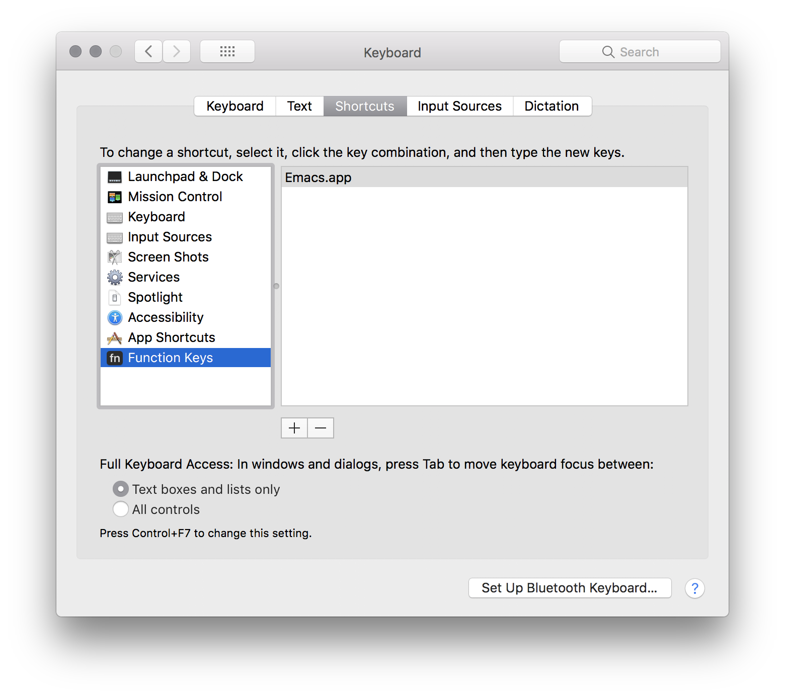
# GNU find on macOS
At times, you may need GNU versions of command line utilities on macOS. For example, GNU find.
As usual, Homebrew saves the day. Install with:
brew install findutils
Unless you install with –with-default-names (I don't), GNU utilities will be prefixed with a "g".
gfind --version
find (GNU findutils) 4.6.0 Copyright (C) 2015 Free Software Foundation, Inc. License GPLv3+: GNU GPL version 3 or later <http://gnu.org/licenses/gpl.html>. This is free software: you are free to change and redistribute it. There is NO WARRANTY, to the extent permitted by law. Written by Eric B. Decker, James Youngman, and Kevin Dalley. Features enabled: D_TYPE O_NOFOLLOW(enabled) LEAF_OPTIMISATION FTS(FTS_CWDFD) CBO(level=2)
If you need more, there are others:
brew install binutils brew install diffutils brew install ed brew install findutils brew install gawk brew install gnu-indent brew install gnu-sed brew install gnu-tar brew install gnu-which brew install gnutls brew install grep brew install gzip brew install screen brew install watch brew install wdiff --with-gettext brew install wget
# PlantUML bookmarks
# Adding mu4e maildirs extension
Continuing the mu4e fun, added mu4e-maildirs-extension to display a mail dirs summary.
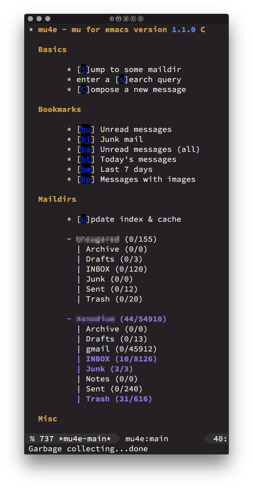
# Trying out mu4e and offlineimap
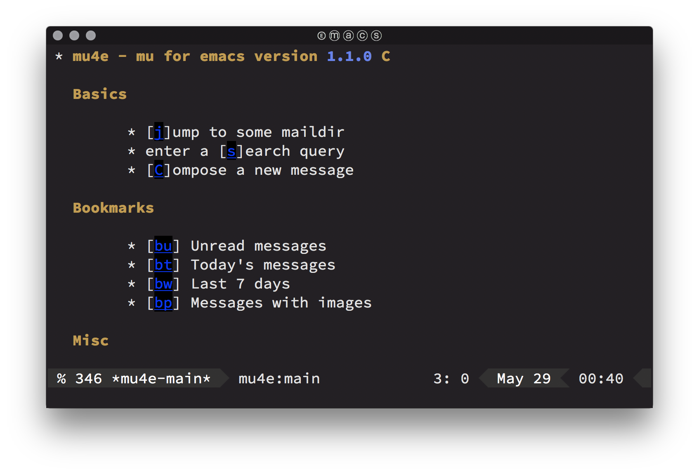
Managing Email from Emacs. Surely that's crazy-talk, but hey… let's give it a try.
Install offlineimap
Need to sync via imap. Use offlineimap. I'm on macOS, so homebrew is king for installing:
brew install offlineimap
Before can configure offlineimap, we'll need to handle a few things first.
Get a cert fingerprint
Use openssl for getting a certificate fingerprint. From offlineimap's FAQ:
SSL_CERT_DIR="" openssl s_client -connect imap.migadu.com:993 < /dev/null 2>/dev/null | openssl x509 -fingerprint -noout -text -in /dev/stdin
Should give you something like:
SHA1 Fingerprint=AA:BB:CC:DD:EE:DD:FF:AA:00:AA:2A:AA:AA:AA:A8:20:80:AA:A2:AA
Encrypt password
Offlineimap can read passwords in plain text in its .offlineimaprc config file, but that's yuckie. Let's encrypt the password and use gnupg for that. Install it:
brew install gnupg
If you haven't already, generate a key
gpg --full-gen-key
Generate an offlineimap account password file.
echo "YourPassword" | gpg --encrypt --recipient "Your Name" -o ~/.offlineimap_accountname.gpg
Python password wrapper
Based on Fabian's Encrypt OfflineIMAP and msmtp password with GnuPG, I created ~/.read_password.py with:
import os import subprocess def read_password(path): return subprocess.check_output(["gpg", "--quiet", "--batch", "-d", os.path.expanduser(path)]).strip()
ps. Alternatively, see The homely Mutt's section to store password in macOS's keychain.
Configure offlineimap
Offlineimap uses ~/.offlineimaprc for configuration. We now have all we need to put the configuration together:
[general] accounts = Personal # Load this python file. pythonfile = ~/.read_password.py [Account Personal] localrepository = Personal-Local remoterepository = Personal-Remote # After syncing, let mu index it. postsynchook = mu index --maildir ~/stuff/active/Mail # Sync imap every 5 minutes. autorefresh = 5 # Alternate between 10 quick syncs and full syncs. quick = 10 [Repository Personal-Local] type = Maildir localfolders = ~/stuff/active/Mail/Personal [Repository Personal-Remote] type = IMAP remotehost = some.imap.host.com remoteuser = your_user_name # Use function defined in .read_password.py to read the password. remotepasseval = read_password("~/.offlineimap_personal_account_password.gpg") # Use the SHA1 fingerprint retrieved with openssl. cert_fingerprint = aabbccddeeddffaa00aa2aaaaaaaa82080aaa2aa
Cert file
You can use macOS's certificates from Keychain Access -> System Roots -> Certificates, select all, and ⌘-⇧-e (for export items). Save to ~/certs.pem and use offlineimap configutation:
sslcacertfile = /path/to/certs.pem
Another option is executing lib/mk-ca-bundle.pl from curl's tarball to generate ca-bundle.crt, using certdata.txt from Mozilla's source tree.
Install mu4e
Manually modified mu4e recipe to pick up my Emacs binary. TIL about homebrew's edit command:
brew edit mu
Changed the one line:
- ENV["EMACS"] = "no" if build.without? "emacs"
- ENV["EMACS"] = "/Users/alvaro/homebrew/Cellar/emacs-plus/26.1-rc1_2/bin/emacs"
Finally installed mu4e:
brew install mu
Configure mu4e
Lastly, configure mu4e:
(add-to-list 'load-path
(expand-file-name "~/homebrew/share/emacs/site-lisp/mu/mu4e"))
(use-package mu4e
:config
;; Update mail using 'U' in main view:
(csetq mu4e-get-mail-command "offlineimap")
(csetq mu4e-view-show-addresses t)
(csetq mu4e-attachment-dir (expand-file-name "~/Downloads/"))
(csetq mu4e-maildir "~/stuff/active/Mail")
(csetq mu4e-html2text-command "w3m -T text/html") ;; alternatively "textutil -stdin -format html -convert txt -stdout"
(csetq mu4e-user-mail-address-list '("myself@domain1.com"
"myself@domain2.com"))
(csetq mu4e-context-policy 'pick-first)
(csetq mu4e-compose-context-policy 'always-ask)
(setq mu4e-contexts
(list
(make-mu4e-context
:name "domain1"
:enter-func (lambda () (mu4e-message "Entering context myself@domain1.com"))
:leave-func (lambda () (mu4e-message "Leaving context myself@domain1.com"))
:match-func (lambda (msg)
(when msg
(mu4e-message-contact-field-matches
msg '(:from :to :cc :bcc) "myself@domain1.com")))
:vars '((user-mail-address . "myself@domain1.com")
(user-full-name . "Álvaro Ramírez")
(mu4e-sent-folder . "/Domain1/Sent")
(mu4e-drafts-folder . "/Domain1/Drafts")
(mu4e-trash-folder . "/Domain1/Trash")
(mu4e-compose-signature . nil)
(mu4e-compose-format-flowed . nil)))
(make-mu4e-context
:name "domain2"
:enter-func (lambda () (mu4e-message "Entering context myself@domain2.com"))
:leave-func (lambda () (mu4e-message "Leaving context myself@domain2.com"))
:match-func (lambda (msg)
(when msg
(mu4e-message-contact-field-matches
msg '(:from :to :cc :bcc) "myself@domain2.com")))
:vars '((user-mail-address . "myself@domain2.com")
(user-full-name . "Álvaro Ramírez")
(mu4e-sent-folder . "/Domain2/Sent")
(mu4e-drafts-folder . "/Domain2/Drafts")
(mu4e-trash-folder . "/Domain2/Trash")
(mu4e-compose-signature . nil)
(mu4e-compose-format-flowed . nil))))))
Authinfo
Create an ~/.authinfo file for sendmail authentication with:
machine smtp.host1.com login account1@host1.com password somepassword1 machine smtp.host2.com login account2@host2.com password somepassword2
Encrypt ~/.authinfo with M-x epa-encrypt-file. Keep ~/.authinfo.gpg and delete ~/.authinfo.
Helpful references
- A Complete Guide to Email in Emacs using Mu and Mu4e.
- A year with Notmuch mail - a super-fast email client available on Emacs.
- areina's Manage your email in emacs with mu4e.
- Better Email with mu4e (NaN).
- Configuring Emacs mu4e with nullmailer, offlineimap and multiple identities.
- Drowning in Email; mu4e to the Rescue.
- Emacs as email client with offlineimap and mu4e on OS X.
- Encrypt OfflineIMAP and msmtp password with GnuPG.
- Etienne's Mu4e customization.
- GitHub - OfflineIMAP/imapfw: imapfw (IMAP/mail framework).
- Gmail Gnus GPG Guide (GGGG).
- Handling Email with Emacs (helm included).
- I got mu4e working! (Reddit).
- Installing mu and mu4e with homebrew with emacs.
- Iqbal Ansari's mail config.
- Mu's github mirror.
- Mu's page.
- mu4e: an E-mail Client for Emacs.
- OfflineIMAP with SSL files on OSX - Sebastian Christ.
- OfflineIMAP: sync and backup tool for IMAP (Hacker News) and mbsync in comments.
- Practical guide to use Gnus with Gmail.
- Pragmatic Emacs's mu4e tutorials.
- Reading IMAP Mail in Emacs on OSX.
- The Emacs Network Security Manager.
- The Ultimate Emailing Agent with Mu4e and Emacs.
- TIP: How to easily manage your emails with mu4e (Reddit).
- Using Emacs to read gmail (Emacs subreddit).
- Using mu4e (Brool blog).
- Zamansky mu4e's sample config.
- Zamansky's video on mu4e.
# Transparent Emacs titlebars on macOS
Happy with Emacs Plus builds on Mac. You get some eye-candy bonuses like transparent titlebars.
To install:
brew tap d12frosted/emacs-plus brew install emacs-plus --devel --with-cocoa --with-gnutls --with-librsvg --with-imagemagick --without-spacemacs-icon
(when (memq window-system '(mac ns)) (add-to-list 'default-frame-alist '(ns-appearance . dark)) ; nil for dark text (add-to-list 'default-frame-alist '(ns-transparent-titlebar . t)))
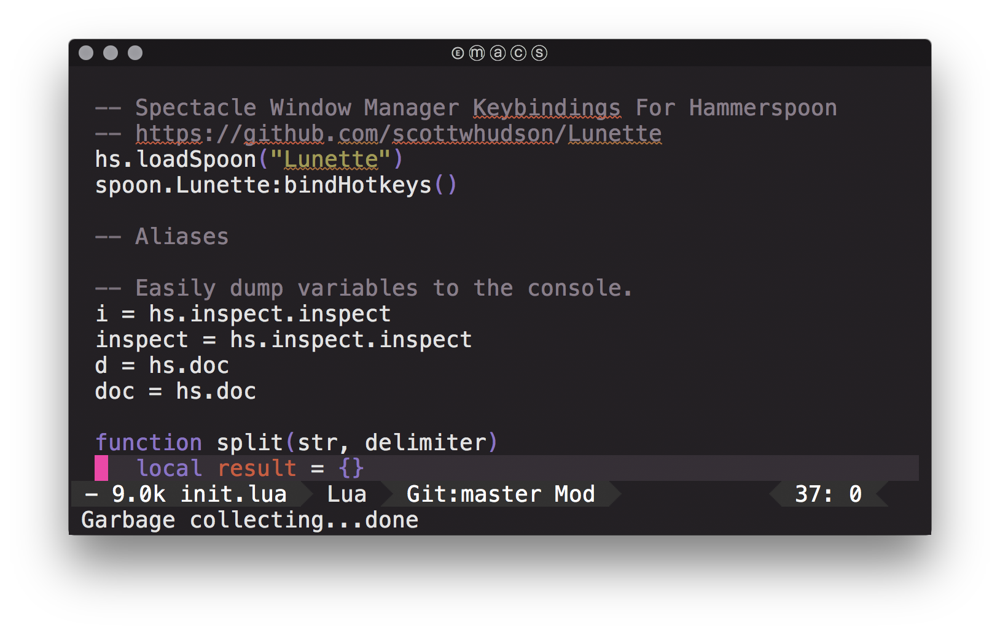
# Lunette: Like Spectacle but for Hammerspoon
Came across Lunette. Gives ya Spectacle Keybindings for Hammerspoon.
# Train Emacs to open files externally
TIL about the openwith package. It enables Emacs to defer to external programs for certain files. You choose which ones. Neat.
(use-package openwith :ensure t :config (csetq openwith-associations '(("\\.\\(mp4\\|mp3\\|webm\\|avi\\|flv\\|mov\\)$" "open" (file)))) (openwith-mode 1))
# Show hidden files in Finder
# Ejecting USB drives on Synology
For posterity:
Control panel > External devices > USB Disk 1 > Eject
# Remounting Synology encrypted share
# Synology user had no home
Upon ssh'ing to a Synology box, the user had no home.
Could not chdir to home directory /var/services/homes/someone: No such file or directory
Fixed via:
Control Panel > User > Advanced > User Home > [x] Enable user home service
# Pre-commit hooks to save you from yourself
Wanted to try out some code, but needed to ensure never checked in. Git pre-commit hooks are handy in this space. Add the following script to search for either @COMMITFAIL or @NOCOMMIT in the staged files. If found, attempts to commit will fail.
Based on https://gist.github.com/rex/223b4be50285f6b8b3e06dea50d15887:
#!/bin/bash set -o nounset set -o errexit echo "Arguments:" echo "$@" echo "---" readonly FILES_PATTERN='(\..+)?$' readonly FORBIDDEN='(@?NOCOMMIT|@?COMMITFAIL)' if ( git diff --cached --name-only | grep -E "$FILES_PATTERN" | xargs grep -E --with-filename -n "$FORBIDDEN" ); then echo "ERROR: @COMMITFAIL or @NOCOMMIT found. Exiting to save you from yourself." exit 1 fi
Save to a file and create a symbolic link to your .git/hooks directory:
ln -s ../../git/commit-fail-pre-hook.sh .git/hooks/pre-commit
# Azores travel bookmarks
# Debugging Emacs binary
From How do I debug an emacs crash? (Emacs Stack Exchange), disable optimizations when configuring and build:
CFLAGS="-O0 -g3" ./configure ... make
And good 'ol gdb (lldb works too):
gdb ../nextstep/Emacs.app/Contents/MacOS/Emacs
# Paper less bookmarks
- danielquinn/paperless: Scan, index, and archive all of your paper documents.
- Digitizing All Your Paper Stuff.
- Fujitsu ScanSnap iX500 Color Duplex Desk Scanner for Mac and PC.
- Going Paperless: Scanning to Evernote, Revisited | Jamie Todd Rubin.
- guess-filename.py: Derive a file name according to old file name cues and/or PDF file content.
- Hazel for document/download management.
- Installing Tesseract OCR on Mac OS X Lion.
- Paperless | Irreal.
- PDF OCR X - Mac & Windows OCR Software to convert PDFs and Images to Text.
- Video: Batch OCR With The Mac Fujitsu ScanSnap.
# Bologna travel bookmarks
- Il Cannone restaurant.
# Grep through pdfs
Late to the party, but investing in going paperless. Got a scanner with OCR, which generates searchable pdfs. If I could only grep through them…
brew install pdfgrep
Balance restored.
# Hammerspoon bookmarks
- dotfiles/grid.lua at master for simple functions to resize windows.
- Emacs keys everywhere Hammerspoon Script.
- Getting Started With Hammerspoon (by Diego Martín Zamboni).
- Just Enough Lua to Be Productive in Hammerspoon, Part 1.
- Just Enough Lua to Be Productive in Hammerspoon, Part 2.
- launchOrFocusByBundleID for global key bindings (there are Emacs goodies there too).
- My configuration with init.lua and the require()ed modules.
- Seal. Helm-like for hammerspoon.
- Set up a Hyper Key with Hammerspoon on macOS.
- ZeroBrane completion and here also.
# Options to reduce Go binary size
A Hacker News's thread Go gets preliminary WebAssembly support has a couple of tips to reduce binaries compiled with Go.
go build -ldflags=-s
UPX (Ultimate Packer for eXecutables) packs the binary further.
upx --ultra-brute
# Trying out tesseract
As part of going paperless, looking into OCR. Trying out tesseract.
Install
$ brew install gs $ brew install imagemagick $ brew install tesseract
$ convert -density 300 -depth 8 receipt.pdf receipt.png $ tesseract receipt.png receipt.png.txt
# Sapporo travel bookmarks
# ffmpeg bookmarks
# Gif bookmarks
# Trying out ShellCheck
ShellCheck gives you automatic warnings/suggestions in bash/sh shell scripts.
$ brew install shellcheck
Bonus: If using Emacs's flycheck, you get ShellCheck support out of the box.
# Imagemagick bookmarks
# Buying matcha powder online
From Reddit's thread:
- https://yunomi.life
- https://shop.ippodo-tea.co.jp/kyoto/shopf/index.html
- https://www.o-cha.com
- http://hojotea.com/categ_e/viewe.htm
- http://yuuki-cha.com
- http://www.hibiki-an.com/index.php
- http://www.thes-du-japon.com/index.php?main_page=index
- https://www.chadoteahouse.com
- https://www.denstea.com
- https://www.sazentea.com/en
- http://www.ujicha-kanbayashi.co.jp
- http://www.marukyu-koyamaen.co.jp/products.html
- http://www.fukumotoen.co.jp/shop/
- http://www.myokoen.com/shop/index.html
# Getting macOS app bundle ID
From stack overflow:
Option 1
osascript -e 'id of app "Emacs"'
Option 2
mdls -name kMDItemCFBundleIdentifier -r SomeApp.app
# Trying out chunkwm
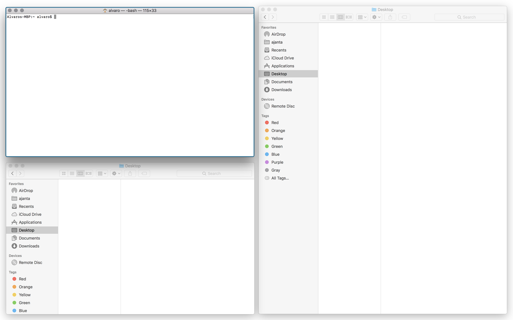
Installing Chunkwm
$ brew tap crisidev/homebrew-chunkwm $ brew install --HEAD --with-tmp-logging chunkwm
Add a configuration file. Started off from this example.
~/.chunkwmrc chmod +x ~/.chunkwmrc
Note: Ensure core::plugin_dir matches homebrew's plugin directory. Typically something like: /path/to/homebrew/opt/chunkwm/share/chunkwm/plugins
Start chunkwmrc service.
$ brew services start crisidev/chunkwm/chunkwm
Installing skhd (a hotkey daemon)
$ brew install --HEAD --with-logging koekeishiya/formulae/skhd
Start skhd service.
$ brew services start koekeishiya/formulae/skhd
Skhd logs location.
/Users/you/homebrew/var/log/skhd/skhd.[out|err].log
Add a configuration file. Started off from this example.
~/.skhdrc chmod +x ~/.skhdrc
Installing khd (easily invoke hotkeys from terminal)
$ brew install khd
Some additional Mission Control and keyboard shortcut preferences:
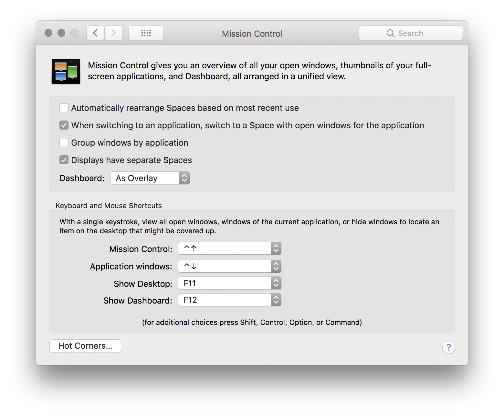
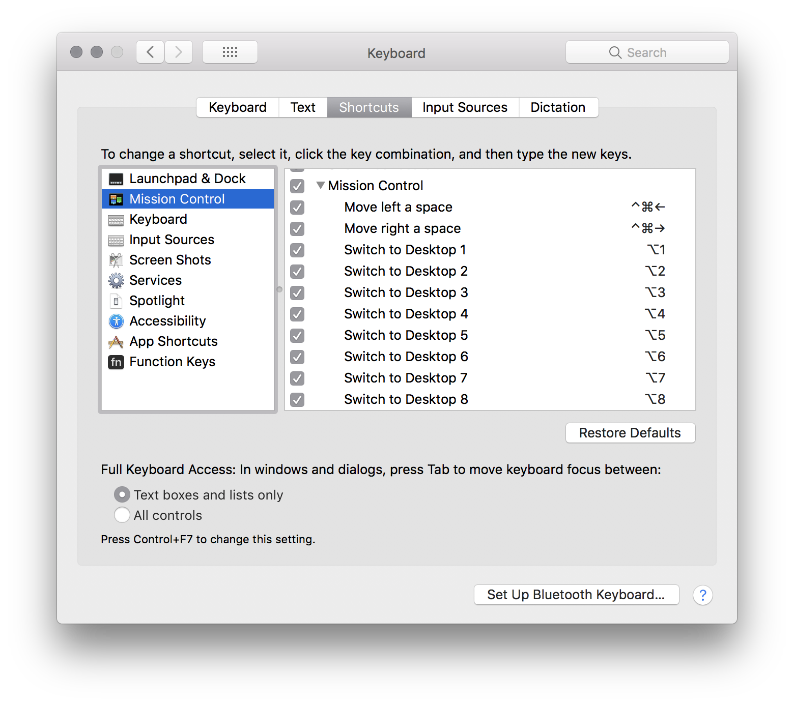
# Building bazel on macOS
Bootstrap
brew install bazel
Build
git clone https://github.com/bazelbuild/bazel.git
cd bazel
bazel build //src:bazel
Get your bazel binary
Self-contained binary in bazel-bin/src/bazel
Known revisions
- https://github.com/bazelbuild/bazel.git @ d81a46cebe07f73d3ea38206262cf7a1a9513b42
- https://github.com/bazelbuild/rules_apple.git @ e921a9f727e039c8b5087d4f98c5d09f189658cd
# Extracting files from pkg
mkdir tmp
cd tmp
xar -xf ../Some.pkg
cat Payload | gunzip -dc |cpio -i
# Installing Inkscape with homebrew
brew tap caskroom/cask brew install caskformula/caskformula/inkscape
# Magit amend commit author
Rarely use it, but handy. Use Magit to amend git commit author.
- Rebase interactively (r, i).
- Move point to commit to ammend.
- Execute command (x).
git commit --amend --author="name <email>"
- Commit (c, c).
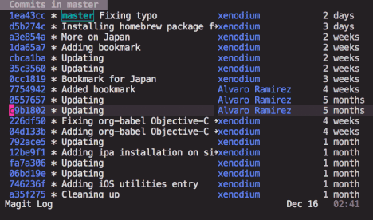
# Homebrew install from cache
Came across a 404 while installing graphviz-2.40.1.tar.gz via homebrew. If you can find the package elsewhere, copy over to homebrew's cache directory.
brew --cache
/Users/User/Library/Caches/Homebrew
# org-babel Objective-C support
Wanted to quickly execute an Objective-C snippet. org-babel didn't support it out of the box, but adding it was straightforward (looked at ob-C.el and ob-java.el):
(require 'ob) (defcustom org-babel-objc-compile-command "clang -x objective-c -framework Foundation" "For example: \"clang -x objective-c -framework Foundation\"." :group 'org-babel :version "24.3" :type 'string) (defun org-babel-execute:objc (body params) "Compile Objective-C BODY with org PARAMS and execute binary." (let* ((src-file (org-babel-temp-file "org-babel-objc-block-" ".m")) (cmpflag (or (cdr (assq :cmpflag params)) "")) (full-body (org-babel-expand-body:generic body params)) (bin-file (org-babel-process-file-name (org-babel-temp-file "org-babel-objc-block" org-babel-exeext)))) (with-temp-file src-file (insert full-body)) (org-babel-eval (concat org-babel-objc-compile-command " " cmpflag " " src-file " " "-o" " " bin-file) "") ;; Using 2>&1 since org babel does not include stderr in output from NSLog. (let ((results (org-babel-eval (concat (org-babel-process-file-name bin-file) " 2>&1") ""))) (org-babel-reassemble-table (org-babel-result-cond (cdr (assq :result-params params)) (org-babel-read results) (let ((tmp-file (org-babel-temp-file "c-"))) (with-temp-file tmp-file (insert results)) (org-babel-import-elisp-from-file tmp-file))) (org-babel-pick-name (cdr (assq :colname-names params)) (cdr (assq :colnames params))) (org-babel-pick-name (cdr (assq :rowname-names params)) (cdr (assq :rownames params))))))) (provide 'ob-objc)
Add objc to org-babel-load-languages, and you can subsequently compile and run Objective-C blocks like:
#import <Foundation/Foundation.h> int main() { NSLog(@"Hello World"); return 0; }
2017-11-16 01:47:28.923 org-babel-objc-block-Aai8ux[15319:346480] Hello World
# iOS dev command-line goodies
Install ipa on device
Get utility with:
npm install -g ipa-deploy npm install -g ios-deploy
Install ipa on connected iPhone:
ipa-deploy path/to/your/App.ipa
Install app on booted simulator
Install ipa on connected iPhone:
xcrun simctl install booted path/to/your/App.app
Install ipa on booted simulator
#!/bin/bash # Unzip ipa, install app, and run on booted simulator. set -o nounset set -o errexit readonly IPA_PATH=$1 readonly TEMP_DIR_PATH=$(mktemp -d) readonly BASENAME=$(basename ${IPA_PATH}) readonly NAME=${BASENAME%.*} readonly APP_DIR_PATH="${TEMP_DIR_PATH}/Payload/${NAME}.app" readonly PLIST_FILE_PATH="${APP_DIR_PATH}/Info.plist" trap "rm -rf ${TEMP_DIR_PATH}" EXIT unzip -o "${IPA_PATH=}" -d "${TEMP_DIR_PATH}" readonly BUNDLE_ID=$(/usr/libexec/PlistBuddy -c "Print CFBundleIdentifier" ${PLIST_FILE_PATH}) xcrun simctl install booted "${APP_DIR_PATH}" xcrun simctl launch booted "${BUNDLE_ID}"
# Eshell pcomplete company completion
Howard Abrams's Introduction to eshell video prompted me to poke at eshell some more. This time, I got eshell context aware completion by glueing the excellent company and pcomplete packages.
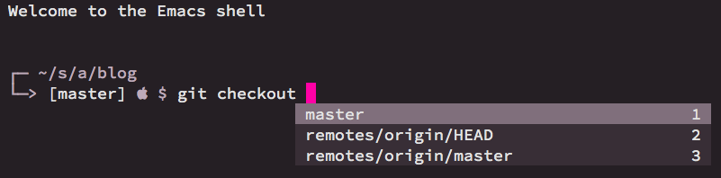
(require 'cl-lib) (require 'company) (require 'dash) (require 'pcomplete) (require 's) (defun company-pcomplete--overlap-tail (a b) "When A is \"SomeDev\" and B is \"Developer\", return \"eloper\"." (let ((prefix a) (remaining nil)) (while (and (not remaining) (> (length prefix) 0)) (when (s-starts-with? prefix b) (setq remaining (substring b (length prefix)))) (setq prefix (substring prefix 1))) remaining)) (defun company-pcomplete--candidates (prefix) "Get candidates for PREFIX company completion using `pcomplete'." ;; When prefix is: "~/Down" and completion is "Downloads", need ;; to find common string and join into "~/Downloads/". (-map (lambda (item) (if (s-starts-with? prefix item) item (concat prefix (company-pcomplete--overlap-tail prefix item)))) (all-completions prefix (pcomplete-completions)))) (defun company-pcomplete (command &optional arg &rest ignored) "Complete using pcomplete. See `company''s COMMAND ARG and IGNORED for details." (interactive (list 'interactive)) (case command (interactive (company-begin-backend 'company-pcomplete)) (prefix (company-grab-symbol)) (candidates (company-pcomplete--candidates arg))))
Don't forget to add company-pcomplete to company-backends, and if you want an explicit binding, use something like:
(bind-key "<backtab>" #'company-complete eshell-mode-map)
# Basic imenu in helpful-mode
# Projectile shell dir company completion
Projectile and company are just amazing Emacs packages. Projectile gives random access to files, while company completes well… anything. For shells, Emacs has a handful of options.
Standing on the shoulders of package giants (dash and f included) and some elisp, we can bring random access to project directories from the shell.
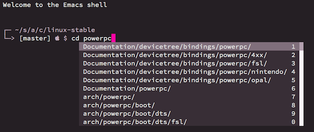
(require 'cl-lib) (require 'company) (require 'dash) (require 'f) (require 'projectile) (defvar-local company-projectile-cd-prefix "cd ") (defun company-projectile-cd (command &optional arg &rest ignored) "Company shell completion for any projectile path." (interactive (list 'interactive)) (case command (interactive (company-begin-backend 'company-projectile-cd)) (prefix (company-grab-symbol-cons company-projectile-cd-prefix (length company-projectile-cd-prefix))) (candidates (company-projectile-cd--candidates (company-grab-symbol-cons company-projectile-cd-prefix (length company-projectile-cd-prefix)))) (post-completion (company-projectile-cd--expand-inserted-path arg)))) (defun company-projectile-cd--candidates (input) "Return candidates for given INPUT." (company-projectile-cd--reset-root) (when (consp input) (let ((search-term (substring-no-properties (car input) 0 (length (car input)))) (prefix-found (cdr input))) (when prefix-found (if (projectile-project-p) (company-projectile-cd--projectile search-term) (company-projectile-cd--find-fallback search-term)))))) (defun company-projectile-cd--projectile (search-term) (-filter (lambda (path) (string-match-p (regexp-quote search-term) path)) (-snoc (projectile-current-project-dirs) ;; Throw project root in there also. (projectile-project-root)))) (defun company-projectile-cd--find-fallback (search-term) (ignore-errors (-map (lambda (path) (string-remove-prefix "./" path)) (apply #'process-lines (list "find" "." "-type" "d" "-maxdepth" "2" "-iname" (format "\*%s\*" search-term)))))) (defun company-projectile-cd--expand-inserted-path (path) "Replace relative PATH insertion with its absolute equivalent if needed." (unless (f-exists-p path) (delete-region (point) (- (point) (length path))) (insert (concat (projectile-project-root) path)))) (defun company-projectile-cd--reset-root () "Reset project root. Useful when cd'ing in and out of projects." (projectile-reset-cached-project-root) (when (projectile-project-p) (projectile-project-root)))
# Creating icns icons
Stack overflow yields Where can i find Icon Composer on Mac? when I did a quick search to convert a png to icns. For future reference:
#!/bin/bash -e set -e set -o pipefail if [ "$#" -ne 1 ]; then echo "\nusage: to_icns.sh path/to/image.png\n" exit 1 fi readonly IMAGE_FPATH=$1 readonly BASENAME=$(basename ${IMAGE_FPATH%.*}) mkdir ${BASENAME}.iconset sips -z 16 16 $IMAGE_FPATH --out "${BASENAME}.iconset/icon_16x16.png" sips -z 32 32 $IMAGE_FPATH --out "${BASENAME}.iconset/icon_16x16@2x.png" sips -z 32 32 $IMAGE_FPATH --out "${BASENAME}.iconset/icon_32x32.png" sips -z 64 64 $IMAGE_FPATH --out "${BASENAME}.iconset/icon_32x32@2x.png" sips -z 128 128 $IMAGE_FPATH --out "${BASENAME}.iconset/icon_128x128.png" sips -z 256 256 $IMAGE_FPATH --out "${BASENAME}.iconset/icon_128x128@2x.png" sips -z 256 256 $IMAGE_FPATH --out "${BASENAME}.iconset/icon_256x256.png" sips -z 512 512 $IMAGE_FPATH --out "${BASENAME}.iconset/icon_256x256@2x.png" sips -z 512 512 $IMAGE_FPATH --out "${BASENAME}.iconset/icon_512x512.png" cp $IMAGE_FPATH "${BASENAME}.iconset/icon_512x512@2x.png" iconutil -c icns ${BASENAME}.iconset rm -R ${BASENAME}.iconset echo Wrote ${BASENAME}.icns
# Forcing aptX on MacOS bluetooth audio
Bought a pair of QuietComfort 35. Audio quality on MacOS was lagging compared to iOS. Googling led to different posts suggesting the use of Bluetooth Explorer to force aptX usage. Did the trick for me.
Bluetooth Explorer can be downloaded from https://developer.apple.com/download/more. Search for Hardware IO tools:
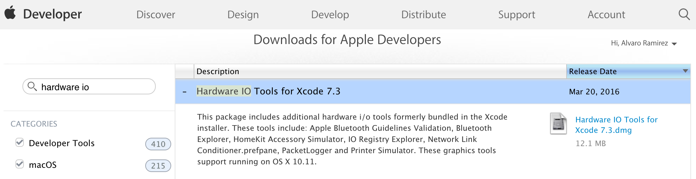
Open Hardware_IO_Tools_for_Xcode_7.3.dmg and launch Bluetooth Explorer:
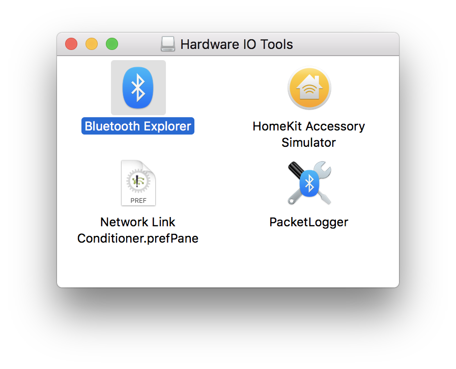
Select Audio Options:
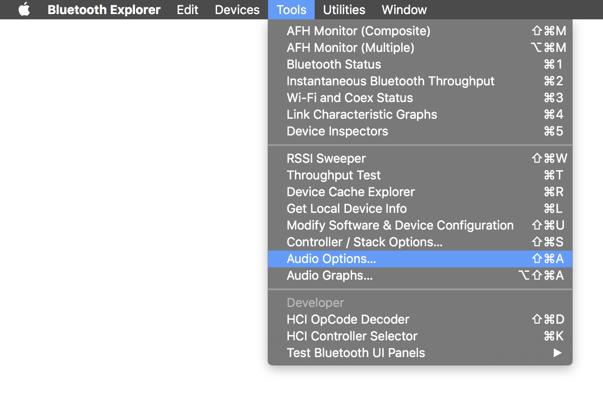
Check Force use of aptX:
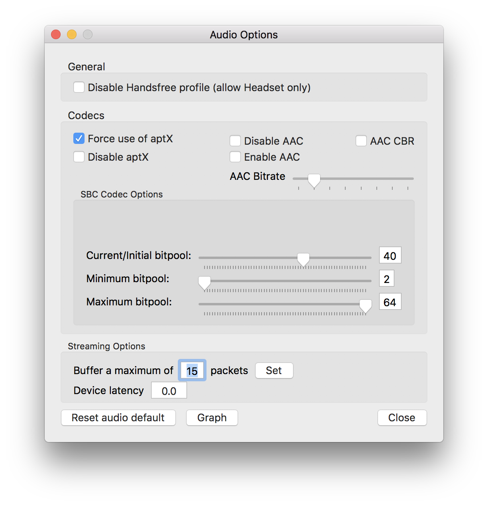
Don't forget to disconnect and reconnect your Bluetooth device.
# Hungary travel bookmarks
# Faster cursor movement on macOS
Faster cursor movement on macOS by increasing your keyboard's initial key repeat subsequent key repeat.
defaults write -g KeyRepeat -int 1 defaults write -g InitialKeyRepeat -int 10
# Search/insert one-liners with Emacs helm-ag
Emacs helm is awesome. helm-ag is double awesome. Searching for one-liners in your codebase, narrowing down with helm, and easily inserting is triple awesome.
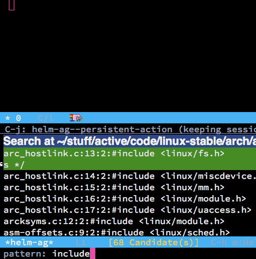
(defun ar/helm-ag (arg) "Helm-ag search remembering last location. With ARG, forget the last location." (interactive "P") (defvar ar/helm-ag--default-locaction nil) (setq ar/helm-ag--default-locaction (read-directory-name "search in: " (if arg default-directory ar/helm-ag--default-locaction) nil t)) (helm-do-ag ar/helm-ag--default-locaction)) (defun ar/helm-ag-insert (arg) ;; Helm-ag and insert match. (interactive "P") (let* ((actions (helm-make-actions "Insert" (lambda (candidate) ;; Drop file:line:column. For example: ;; arc_hostlink.c:13:2:#include <linux/fs.h> ;; => #include <linux/fs.h> (insert (replace-regexp-in-string "^[^ ]*:" "" candidate))))) (helm-source-do-ag (helm-build-async-source "The Silver Searcher" :init 'helm-ag--do-ag-set-command :candidates-process 'helm-ag--do-ag-candidate-process :persistent-action 'helm-ag--persistent-action :action actions :nohighlight t :requires-pattern 3 :candidate-number-limit 9999 :keymap helm-do-ag-map :follow (and helm-follow-mode-persistent 1)))) (call-interactively #'ar/helm-ag)))
# Sleep bookmarks
# Math bookmarks
# GnuPG and macOS
Had problems installing and using GnuPG on macOS, primarily for Emacs use:
gpg: problem with the agent: Inappropriate ioctl for device gpg: error creating passphrase: Operation cancelled gpg: symmetric encryption of '[stdin]' failed: Operation cancelled
Basic installation required:
brew install gnupg
But worked around the error above by using pinentry-mac (UI), instead of Emacs prompts.
brew install pinentry-mac
Edited ~/.gnupg/gpg-agent.conf with:
pinentry-program path/to/homebrew/bin/pinentry-mac
May need to kill gpg-agent to reload config.
gpgconf --kill gpg-agent
# Installing gnuplot on macOS
Plan A
Install gnuplot Qt
If you have the resources, you can try the Qt flavor. You need at least 15GB to download and a long build. Ran out of space on my Macbook Air. Aborted.
brew install --force gnuplot --with-qt
Plan B
Install xquartz
brew install Caskroom/cask/xquartz
Install gnuplot x11
brew install --force gnuplot --with-x11
Install feedgnuplot
Feedgnuplot is handy for plotting data streams realtime.
brew install feedgnuplot
# Tel Aviv travel bookmarks
- Breakfast club (dancing).
- Claro/Sarona Market.
- Drink Cafe hafuch at Rothschild 12.
- Jaffa's Flea market.
- Nightlife: Kuli Alma's hipster haven. Imperial craft cocktail bar (drink Gold fashioned).
- Park HaYarkon.
- Tel Aviv museum of art.
# Jerusalem travel bookmarks
- Jerusalem: Rooftop Mamilla restarurant.
# Nepal travel bookmarks
# Singapore notes
- Hotel Mono, 18 Mosque street #01-04.
- Buddha tooth relic museum.
- Best Hawker centers.
- Kong Meng San Phor Kark See Monastery.
- Go there (figure out fastest MRT route).
- What to eat at ABC Market (Hawker Centre) aka ABC Brickworks Food Centre?.
- Curry puffs (see Taste test: Crisp curry puffs).
- Singapore’s 17 Michelin-rated Hawker Stalls in 2016.
- Temples
- Hawkers
- Mr and Mrs Mohgan's Super Crispy Roti Prata (source) on Crane Road. Dhal/fish/mutton curry side.
- Roast Paradise (maybe) Address: #01-122 Old Airport Road Food Centre. Hours: Tues-Sun: 11am to 4pm or till sold out, Wed and Sun: 11am to 2pm, Closed on Mondays.
- Fatty Cheong, 肥仔详, (#01-120, ABC Brickworks Food Centre, 6 Jalan Bukit Merah Singapore 150006): char siew and xio bak rice and char siew noodles.
- Hoo Kee Bak Chang (Amoy Street Food Centre): bak zhang (glutinous rice dumpling). Try Choose from three kinds: chestnut ($2.80); chestnut with salted egg yolk ($3.60); and chestnut with mushroom ($3.60).
- Lim Kee (Orchard) Banana Fritters (Maxwell food centre, source).
- Mr Avocado Exotic Juice (Alexandra village food centre, source).
- Tanglin Crispy Curry Puff (Hong Lim Food Centre or Maxwell, source) (东陵酥皮咖喱角). Try sardine curry puff?
- Chuan Kee Satay (source). Long queue for pork satay.
- Selera Rasa Nasi Lemak (source).
- Fu Shun Jin Ji Shao La Mian Jia (Maxwell food centre, source): Char siu + noodles.
- Shanghai La Mian Xiao Long Bao (Alexandra Village food centre, source): xiao long bao or soup dumplings ($4.50 for 7 pieces).
- Timbre+ (hipster hawker centre? source).
- Supertree Grove (go at dusk, see lights turn on).
- Singapore Botanic garden.
- Ginger Garden.
- Palms valley.
- Orchid garden.
- Sri Mariamman Temple.
- Kusu Island?
- Chilly crab (“Jumbo” Chilli Crab Restaurant in Clarke Quay or Harvest Seafood Restaurant)?
- Afternoon tea?
- www.tea-chapter.com.sg
- Bumboats (£2.50 return) leave Changi Point between 6am and 9.30pm for the 10-minute crossing to Palau Ubin. Hire a bicycle in the village where the boats dock.
- Haji Lane (colorful road).
- Tiong Bahru 1930s public housing estate (**)
- Chong Yu Wanton Mee (Tiong Bahru Market And Food Centre #02-30, 30 Seng Poh Road, source).
- old-fashioned treats at Tiong Bahru Galicier (55 Tiong Bahru Rd).
- Chinatown
- Pek Sin Choon Tea: Oldest team merchants.
- Ang Mo Kio: Sri Mariamman Hindu temple.
- Strangelets: quirky stuff from around the world.
- 40 Hands: Allegedly one of most popular coffee joints.
- BooksActually: Coolest book shop.
- Keong Saik (next to Chinatown)
- 1939 Hotel.
- The Library (49 Keong Saik Rd): night drinks, ask for key/password next door (the-study.sg) (**)
- Mariko's (Now Phat Cat laundry): Maybe food or drink at night? (**)
- Rose Citron (23 Keong Said Rd): French and Asian articles.
- Everton park (old housing estate), new meets old
- Coffee
- Nylon coffee roasters (http://nyloncoffee.sg).
- Just Want Coffee (justwant.com.sg).
- Cozy corner coffee.
- Sweets
- Grin Affair (grinaffair.com): natural ingredients into glass jar creations.
- Batterworks (batter-works.com): pastries.
- http://cozycornercoffee.com.
- Seriously ice scream (facebook.com/seriouslyicecream).
- Ji Xiang Confectionery (jixiangconfectionery.com): Traditional glutinous sweets. (**)
- Food
- The Provision Shop (Blk 3 Everton Park): for a classic and affordable meal.
- Chew the Fat (Blk 6 Everton Park): comfort food.
- Eden's Kitchen (http://edenskitchen.sg): healthy, green tea, coconut oil, etc.
- Coffee
- Jalan Besar
- Char: unconventional char siu (source).
- The Banana Leaf Apollo (Little India).
- Beach Road Scissors-Cut (220 Jln Besar): Curry Rice. (**)
- Fu Zhou Poh Hwa Oyster Cake (166 Jln Besar): UFO-shaped snacks. (**)
- Swee Choon Tim Sum Restaurant: a dim sum institution!. (**)
- Papa Palheta coffee: best coffee in town?.
- General Company: awesome design and workshops. (**)
- The Bravery: brunch, aka awesome pancakes. (**)
- AEIOU: Retro shopping.
- Geylang (preserved shophouses and rich in Malay history)
- Hajjah Mona Nasi Padang (Geylang Serai food centre): Order nasi padang (try dry one).
- Biryani Express (Geylang Serai food centre)
- Red light district. Still?
- Brawn & Brains (Coffee).
- Old Geylang (crocodile, turtle soup, other oddities).
- Hi-Thrift (1 Geylang Rd): Second hand treasures? (**).
# Email provider bookmarks
# Go snippets
Command-line flags
import ( "flag" ) type args struct { flag1 string flag2 string arg string } func parseArgs() args { args := args{} flag.StringVar(&args.flag1, "flag1", "", "some flag 1 with sample `value`") flag.StringVar(&args.flag2, "flag2", "", "some flag 2 with sample `value`") flag.CommandLine.Usage = func() { fmt.Fprintf(os.Stderr, "Usage of %s:\n", os.Args[0]) fmt.Fprintf(os.Stderr, "\n myarg\n\n") flag.PrintDefaults() } flag.Parse() args.arg = flag.Arg(0) if args.flag1 == "" || args.flag2 == "" || args.arg == "" { flag.CommandLine.Usage() os.Exit(1) } return args } func main() { args := parseArgs() fmt.Printf("Args: %#v", args) }
go run main.go -flag1 val1 -flag2 val2 arg
# Javascript snippets
# Sydney travel bookmarks
- 17 Stunning Sydney Pools That Will Make You Want To Jump Back In The Water.
- 48 Hours in Sydney.
- Bourke Street Bakery.
- Collector Store (Surrey Hills).
- Coogee Pavilion.
- Four ate five.
- Harry's Cafe de Wheels: Famous for Pies and Peas, Meat Pies, Hot Dogs.
- Hurricane’s grill & bar Bondi beach.
- Lox Stock & Barrel.
- Marigold citymark (dim sum).
- Reuben Hills.
- Seans.
- Sydney's Best Markets - The Trusted Traveller.
- The eight (dim sum).
- The Glenmore.
- Three Blue Ducks.
# Laos travel bookmark
# Singapore travel bookmarks
- Any place to go thrift shopping in Singapore? (Reddit).
- East coast lagoon.
- Hillstreet Tai Hwa Pork Noodles: Everybody Queue up!.
- Little India.
- Second hand shopping in Singapore.
- Singapore's best hawker centres - Telegraph.
- The Insider's Guide to Singapore (SG Magazine Online).
- Treasure Hunt: 5 Places to thrift in Singapore.
- What is the best hawker center in singapore? (Reddit).
# Cambodia travel bookmarks
- Pub Street (Siem Reap, Cambodia).
# New York travel bookmarks
# API design bookmarks
- A bird's eye view on API development.
- A Guide to Designing and Building RESTful Web Services with WCF 3.5 (Microsoft).
- Best Practices for Designing a Pragmatic RESTful API.
- Build APIs You Won't Hate.
- Designing and Evaluating Reusable Components.
- Harry Moreno | API Design Link Roundup.
- How Do I Make This Hard to Misuse?.
- How to Design a Good API and Why it Matters (Google).
- How To Design A Good API and Why it Matters - YouTube.
- How to design API function creating objects: By Neil Henning.
- HTTP API Design Guide.
- JSON API — A specification for building APIs in JSON.
- Microsoft REST API Guidelines.
- Notes on RESTful APIs (Updated).
- REST API Documentation Best Practices.
- REST API Tutorial.
- REST+JSON API Design - Best Practices for Developers - YouTube.
- RESTful Service Design - UC Berkeley.
- Rusty's API Design Manifesto.
- Scott Meyers: The Most Important Design Guideline?.
- Swift.org - API Design Guidelines.
- Teach a Dog to REST.
- The Best API Documentation.
- The Little Manual of API Design (Jasmin Blanchette, Trolltech).
- Web API Design - Crafting interfaces that developers love.
- Write code that is easy to delete, not easy to extend.
# Handy pdf utilities
Straight out of How (and why) I made a zine, some handy utilities for generating pdfs…
Convert pngs to pdfs
# start with a bunch of PNG images of your zine pages # convert them all to PDF for i in *.png do # imagemagick is the best thing in the world convert $i $i.pdf done
Combine pdfs
# pdftk is awesome for combining pdfs into a single pdf pdftk *.pdf cat output zine.pdf
Reorder pdf pages
# pdfmod is a GUI that lets you reorder pages pdfmod zine.pdf
Add margins to pdf
# pdfcrop lets you add margins to the pdf. this is good because otherwise the # printer will cut off stuff at the edges pdfcrop --margin '29 29 29 29' zine.pdf zine-intermediate.pdf
Turn pdf into booklet
# pdfjam is this wizard tool that lets you take a normal ordered pdf and turn # it into something you can print as a booklet on a regular printer. # no more worrying about photocopying machines pdfjam --booklet true --landscape --suffix book --letterpaper --signature 12 --booklet true --landscape zine-intermediate.pdf -o zine-booklet.pdf
# Fuzzy search Emacs compile history
I wrote about searching bash history with Emacs Helm some time ago. Since then, I've learned about completing-read to generically handle simple Emacs completions (very handy for supporting Helm, Ivy, and Ido completions).
Here's a simple way to combine completing-read and the compile command to enable fuzzy searching your compile history:
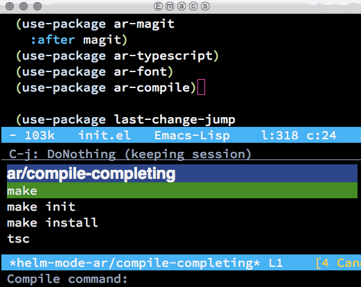
(defun ar/compile-completing () "Compile with completing options." (interactive) (let ((compile-command (completing-read "Compile command: " compile-history))) (compile compile-command) (add-to-list 'compile-history compile-command)))
# Jumping on the Emacs 25 bandwagon
Can't miss out on all the new fun. Emacs 25 RC2 is out and lots of people already using it. Since I'm mostly on MacOS these days, installing via homebrew with –devel, gets you RC2:
brew install emacs --devel --with-cocoa --with-gnutls --with-librsvg --with-imagemagick
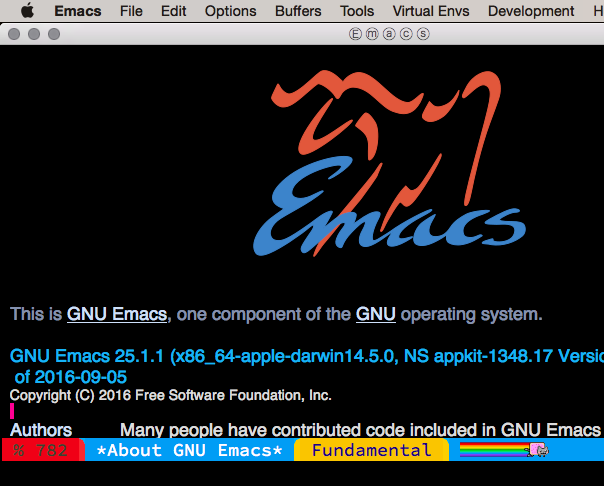
The only hiccup so far's been org mode failing to export, which was fixed by re-installing it (follow this thread).
# San Francisco's Mission District travel bookmarks
- Atlas Cafe.
- Blue Bottle Coffee.
- Cafe la Boheme.
- Clarion Alley.
- Coffee Bar.
- Dynamo donut & coffee.
- Four Barrel Coffee.
- Grand Coffee.
- Haus Coffee.
- Kafe 99.
- Linea cafe.
- Mission skateboards.
- Nakamoto's Bitcoin shop.
- Philz Coffee.
- Ritual Coffee roasters.
- Rodger's coffee & tea.
- Sightglass Coffee.
- Stable Cafe.
- Sugar lump coffee lounge.
# Moscow travel bookmarks
# Vietnam travel bookmarks
- Can Ba Quan
- Nikki Tren.
- Vietnamese Cajun.
- Exploring Vietnam's remote Con Dao Islands.
- Hoi An, Vietnam- Travel guide.
- Pho Bo Phu Gia
- DC: 146K LY Chinh Thang.
- 0908 208 866.
- Simon Standly and Vin Dao (food journalists)
- Somebody Feed Phil, List of Locations: Ho Chi Minh City.
- Thuc Pham Duc Viet
- Bahn Mi
- Pate Bu Cha
- Nhan Dat Bi Cha
# Pokémon Go bookmarks
# Coffee bookmarks
# Machine learning bookmarks
# Emacs and emotional vocab
Having read Are You in Despair? That’s Good, I was encouraged to expand my emotional vocabulary. As a zone.el fan (checkout nyan, sl, and rainbow), I looked into writing a zone program. When zone-when-idle is set, zone acts as a screensaver of sorts. We can use this to display random emotional vocab whenever Emacs is idle for a period of time. Let's get to it…
Zone keeps a list of programs to choose from when kicked off. Below is a basic zone-hello program, along with an interactive command for previewing. Not much to these. The tiny program prepares the screen for zoning and inserts text while no input is pending.
(defun zone-hello () (delete-other-windows) (setq mode-line-format nil) (zone-fill-out-screen (window-width) (window-height)) (delete-region (point-min) (point-max)) (goto-char (point-min)) (while (not (input-pending-p)) (insert "hello zone\n") (zone-park/sit-for (point-min) 0.2))) (defun zone-hello-preview () (interactive) (let ((zone-programs [zone-hello])) (zone)))
Here's what zone-hello looks like:
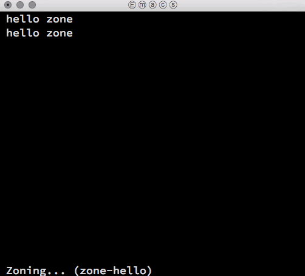
Back to improving our emotional vocabulary, we'll need a dictionary for our goal. A quick search yields a potential list of words. We can use WordNet to define them while offline. These two sources will do for now. We tie it all together in zone-words.el and the resulting zone program looks as follow:
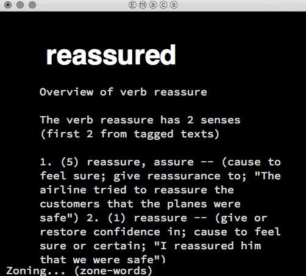
UPDATE: Just came across Animations With Emacs. A post with awesome zone examples.
# Emacs: Find number of days between dates
Needed to find the number of days between two dates. Emacs calendar must know this…
- Fire up the manual (M-x info-emacs-manual or C-h r).
- Info-goto-node (or g).
- Type "counting days" and voilá:
To determine the number of days in a range, set the mark on one date using `C-<SPC>', move point to another date, and type `M-=' (`calendar-count-days-region'). The numbers of days shown is inclusive; that is, it includes the days specified by mark and point.
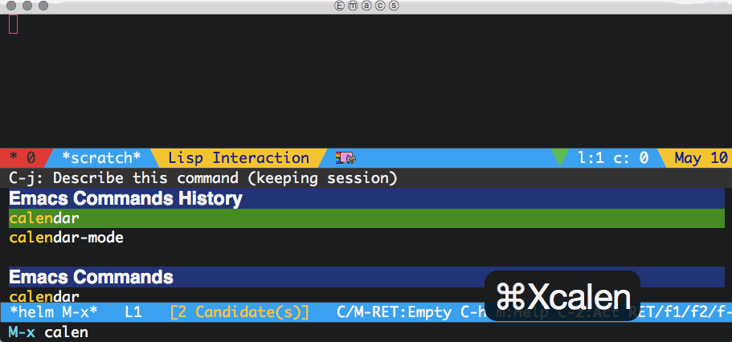
Note: you can use the mouse to jump to another date, or "g d" (calendar-goto-date).
# RoutingHTTPServer snippet
RoutingHTTPServer snippet:
RoutingHTTPServer *routingHTTPServer = [[RoutingHTTPServer alloc] init]; [routingHTTPServer setPort:8000]; [routingHTTPServer setDefaultHeader:@"Server" value:@"YourAwesomeApp/1.0"]; [routingHTTPServer handleMethod:@"GET" withPath:@"/hello" block:^(RouteRequest *request, RouteResponse *response) { [response setHeader:@"Content-Type" value:@"text/plain"]; [response respondWithString:@"Hello!"]; }]; NSError *error = nil; if (![routingHTTPServer start:&error]) { NSLog(@"Error starting HTTP Server: %@", error); }
# Alaska travel bookmarks
- Anchorage.
- Denali NP.
- Exit Glacier / Kenai Fjord NP.
- Ice Falls Hike.
- Iditarod race husky camp.
- Seward: Kenai Fjord Wildlife cruise (Major Marine cruises).
- Talkeetna fishing.
# UIViewController bookmarks
- What's your number one tip for avoiding massive view controllers?.
- 8 Patterns to Help You Destroy Massive View Controller.
- Blending Cultures: The Best of Functional, Protocol-Oriented, and Object-Oriented Programming.
- Dan Abramov - Live React: Hot Reloading with Time Travel.
- Comparing Reactive and Traditional.
- ReSwift: Getting Started.
- StateView is a UIView substitute that automatically updates itself when data changes.
- The Objective-C version to "Comparing Reactive and Traditional".
- Let's Play: Refactor the Mega Controller!.
- How to use Redux to manage navigation state in a React Native.
- StateView: UIView substitute automatically updating itself when data changes.
- Mysteries of Auto Layout, Part 2.
- Netflix JavaScript Talks - RxJS Version 5.
- Reactive Streams.
# When OOO impulse kicks in…
- You start moving trivial bits of code into classes, with the anticipation that you might use it one day. Stop.
- On naming, semantic clarity trumps brevity. Yup, the verbosity may be worth it.
# Pakistan travel bookmarks
- Lahore.
- Karachi.
- Rabelpindi.
# Money bookmarks
- 20 items to consider for taxes: Income Tax, Council Tax, and Inheritance Tax (lovemoney.com).
- 9 Best New Personal Finance Podcasts - Financial Panther.
- A guide to passive investing in the UK.
- Amazon.com: How to Interview a Financial Advisor eBook: Piaw Na: Kindle Store.
- Any critique against the Vanguard FTSE global all cap index? : UKPersonalFinance.
- Authorised and recognised funds (FCA).
- Bank Account Savings: Open up multiple accounts to maximise your savings.
- Benefit Calculator - About You - Turn2us.
- Best practices for portfolio rebalancing (Vanguard research July 2010).
- Bogleheads® investment philosophy - Bogleheads.
- Borderless account pricing: What are the fees? - TransferWise.
- Bye Yahoo, and thanks for all the fish (The Financial Hacker) - See comments for alternatives.
- Can I open a LISA and a Private Pension (Vanguard LifeStrategy)?.
- Capital Gains Tax for Expats - Experts for Expats.
- Check if you need to send a Self Assessment tax return - GOV.UK.
- Check the recognised overseas pension schemes notification list - GOV.UK.
- ChooseFI (Join the Financial Independence Movement).
- Codementor (Get live 1:1 coding help, hire a developer, & more).
- Coursera (Online Courses From Top Universities. Join for Free).
- Crowdsourced Financial Independence and Early Retirement Simulator/Calculator.
- Don't Steal Money from Day Traders Before They Lose It (Hacker News).
- EricaJoy on Twitter: what is the process for finding a financial advisor/accountant/etc.
- ETF portfolios made simple (justETF).
- EU investing - Bogleheads.
- Fin-dee (FIRE calculator).
- Financial education book for teenagers by Martin Lewis : UKPersonalFinance.
- Financial Independence Podcast.
- Financial Independence Retiring Early UK (r/fireuk).
- Financial Samurai png (typical reasons to sell assets in short term = bad idea long term).
- Find Top-Rated Financial Advisers, Mortgage Advisers, Solicitors and Accountants.
- Global All Cap VS Small Cap - first time 24 Male : UKPersonalFinance.
- globaltracker - UKPersonalFinance.
- How does AQR Capital compare with Two Sigma? - Quora.
- How I built a six figure passive income by age 47.
- How I paid off £5000 of consumer debt in 5 months – URBANPLANNED.
- How to become rich by investing: rational Investing Based on Evidence vs Speculation.
- Income tax calculator: Find out your take-home pay.
- Invaluable Books - Cashflow Cop.
- Investment for beginners.
- Is BTL still worth it? : UKPersonalFinance.
- ISA allowance: ISA limits & rules - MoneySavingExpert.
- jlcollinsnh.
- Killik Explains: A short guide to personal pensions (SIPPs) - YouTube.
- Killik Explains: Retirement Saving - Lifetime ISAs vs Pensions - YouTube.
- Lifetime ISAs: free 1000 towards your first home or retirement.
- Lifetime ISAs: free £33,000 towards your first home or retirement.
- Low cost index trackers that will save you money (Monevator).
- Mad Fientist: Financial Independence Podcast.
- Meet The FIREstarter! - theFIREstarter.
- Millennial Money (Next Generation Personal Finance).
- Mom's Rules of Finance (Workforce Millionaire - Investing in Your Future).
- Monevator — Make more money, invest profitably, retire early.
- Monevator: Compare the UK’s cheapest online brokers.
- Monthly Savings Juggler.
- Morningstar® Integrated Web Tools™ - Instant X-Ray.
- Mr. Money Mustache — Early Retirement through Badassity.
- National Savings and Investments NS&I.
- NDAQ Stock Quote - Nasdaq, Inc. Common Stock Price - Nasdaq.
- Parking Ticket Appeals: Fight unfair fines - Money Saving Expert.
- Personal Finance Flowchart (github).
- Personal Savings Allowance 2018/19 - up to £1,000 interest tax-free.
- Post-Retirement Calculator: Will My Money Survive Early Retirement? Visualizing Longevity Risk - Engaging Data.
- Premium Bond Probability Calculator.
- Premium Bonds: are they worth it? - MoneySavingExpert.
- https://rockstarfinance.com/][Rockstar Finance">Curating the best of money and personal finance]].
- Rockstar Finance Directory of Bloggers.
- Saving Ninja: What Platform to Use Now? (iWeb vs Charles Stanley vs Halifax share dealing vs Aviva vs Vanguard Investor).
- Savings accounts: 1.5% easy access or up to 2.7% fixed.
- So, you want to be a landlord?? : financialindependence.
- Stocks & shares ISAs: find the best platform - MSE.
- Stocks — Part XXI: Investing with Vanguard for Europeans.
- Tax rates 2018/19: tax bands explained - MoneySavingExpert.
- Tax rates 2018/19: tax bands explained - MoneySavingExpert.
- The Escape Artist (You can escape to financial freedom).
- The Financial Hacker – A new view on algorithmic trading.
- The Lemon Fool (Discussion forums for UK shares, Personal Finance and Investment).
- The Rise Of Stealth Wealth.
- Tim Bennett Explains: Which is best - an ISA or a SIPP? - YouTube.
- Top Cash ISAs: 1.35% easy access, 2.3% fixed - MSE.
- UK Financial Planning Week.
- Understanding your employees' tax codes: What the numbers mean - GOV.UK.
- United Kingdom | Countries (FIREhub.eu).
- Use the Avios Rewards Flight Calculator to plan flights.
- Vanguard FTSE Global All Cap Index A Acc GBP (trustnet).
- Vanguard FTSE Global All Cap Index Fund Investor A GBP Accumulation (Morningstar).
- Vanguard FTSE Global All Cap Index Fund Investor A GBP Accumulation, GB00BD3RZ582:GBP summary - FT.com.
- Vanguard LifeStrategy 100% Equity A Acc (Trustnet).
- Vanguard LifeStrategy 80% Equity A (Trustnet).
- Vanguard: LifeStrategy® 40% Equity Fund - Accumulation.
- Vanguard’s simple Pension Calculator.
- Way Of The Financial Samurai: Core Principles For Financial Independence.
- What are some good net worth tracking tools? (for the UK) : FIREUK.
- What Does a Declaration of Trust / Deed of Trust Do?.
- What if You Only Invested at Market Peaks?.
- Why a world equity index tracker?.
- Why are most people broke? - Quora.
# Scotland travel bookmarks
# St. Petersburg travel bookmarks
# iOS github bookmarks
- A floating UIToolBar replacement as seen in the iOS 10 Maps app.
- FormatterKit: a collection of well-crafted NSFormatter subclasses for things like units of information, distance, and relative time intervals.
- KZFileWatchers (observer file changes).
- Translucid: Simple and light weight UIView that animate text with an image.
- YouXianMing's animation collection.
- ZHPopupView.
# 8 week half-marathon training
An 8-week training schedule:
| WEEK | MON | TUE | WED | THU | FRI | SAT | SUN |
|---|---|---|---|---|---|---|---|
| 1 | Rest | 5 Km | 5 Km | Rest | 5 Km | ||
| 29:56 | 29:54 | 29:45 | 1:00:55 | ||||
| 2 | Rest | 7 Km | 5 Km | Rest | 5 Km | 10 Km | |
| 41:36 | 27:52 | 28:23 | 59:17 | ||||
| 3 | Rest | 5 Km | Rest | 5 Km | 12 Km | ||
| 49:29 | 29:33 | 27:50 | 1:06 | ||||
| 4 | Rest | 8 Km | Rest | 8 Km | Rest | 5 Km | 14 Km |
| 46:39 | 49:28 | 29:40 | |||||
| 5 | Rest | 8 Km | Rest | Rest | |||
| 48:50 | 53:38 | ||||||
| 6 | Rest | 8 Km | Rest | 8 Km | 19 Km | ||
| 51:39 | 37:09 | 2:02 | |||||
| 7 | Rest | 8 Km | Rest | 12 Km | Rest | 8 Km | 16 Km |
| 52:55 | |||||||
| 8 | Rest | 8 Km | Rest | 5 Km | 5 K | Rest | Race |
# Haskell bookmarks
- A gentle introduction to profunctors talk.
- A Haskell Reading List (Hacker News).
- A Haskell Reading List.
- Advice for Haskell beginners (2017) (Hacker News).
- An opinionated guide to Haskell in 2018.
- Haskell Programming: From First Principles.
- Haskell's kind system - a primer.
- Higher order functions.
- Intero: Complete interactive development program for Haskell.
- Introduction to higher-order functions.
- Pragmatic Haskell for Beginners, Lecture 1.
- Renzo Carbonara (Hackage).
# Haskell notes
Referential transparency
An expression consistently evaluating to the same result, regardless of context.
References
# Emacs Objective-C tagging with RTags
Install libclang on Mac
brew install llvm --with-clang
Install RTags
git clone --recursive https://github.com/Andersbakken/rtags.git
cd rtags
cmake -DCMAKE_PREFIX_PATH=/Users/your-user-name/homebrew/opt/llvm -DCMAKE_EXPORT_COMPILE_COMMANDS=1 .
make
Start RTags daemon
path/to/rtags/bin/rdm 2> /tmp/rdm.log
Compilation database
Install xctool
brew install xctool
Generate a compilation database
cd path/to/your/objc-project
xctool -sdk iphonesimulator -arch x86_64 -scheme SomeScheme -reporter pretty -reporter json-compilation-database:compile_commands.json clean build
Load compilation database
path/to/rtags/bin/rc -J path/to/your/objc-project/compile_commands.json
Install RTags Emacs package
(use-package rtags :ensure t :config (setq rtags-use-helm t) ;; Optional. Enable if helm fan (I am!). (setq rtags-path "path/to/rtags/bin/"))
Ready to go
Use any of the rtags interactive commands. For example:
M-x rtags-find-symbol
References
# Database bookmarks
# Bruges travel bookmarks
- assietteblanche.be.
- Beer flavored meals at Den Dyver.
- bistrozwarthuis.be.
- Eat fries in front of the belfry and climb it.
- kok-au-vin.be.
- kurtspan.be.
- Minnewater and the old Beguinage.
- Old Saint john's Hospital.
- Relic of the Holy Blood and City hall.
- restomojo.tk.
- The Chocolate Line.
- The Garre, near the Burg and drink their house Tripel.
- tomsdiner.be.
- Try out Straffe Hendrik beer at brewery terrace.
- Walk behind Gruuthuse over the little Saint Bonifaas bridge.
# Emacs lisp snippets
Find file upwards, up parents, up hierarchy
(locate-dominating-file FILE NAME)
Find executable in PATH
(executable-find COMMAND)
Read string with completion (helm/ido/ivy friendly)
(completing-read PROMPT COLLECTION &optional PREDICATE REQUIRE-MATCH INITIAL-INPUT HIST DEF INHERIT-INPUT-METHOD)
Execute command/process and return list (similar to shell-command-to-string)
(process-lines PROGRAM &rest ARGS)
Iterating org buffer
(org-element-map (org-element-parse-buffer) '(headline link) (lambda (element) (cond ((and (eq (org-element-type element) 'headline) (= (org-element-property :level element) 1)) (print "headline")) ((eq (org-element-type element) 'link) (print "link"))) nil))
# iOS development books bookmarks
- Codeschool iOS.
- Developing iOS 7 Apps for iPhone and iPad (Standford lectures).
- Effective Objective-C.
- iOS 9 programming cookbook.
- iOS Drawing Practical UIKIt Solutions.
- iOS Programming: The Big Nerd Ranch Guide.
- iOS7 Programming Pushing the Limits.
- Objc-C Zen book.
- Objective-C Programming: The Big Nerd Ranch Guide (Big Nerd Ranch Guides).
# React/flux iOS implementation bookmarks
- CLAFluxDispatcher: A port of Facebook's Flux Dispatcher to Objective-C.
- ComponentKit.
- Flux for iOS by Sergey Zenchenko.
- FLUX implementation in Objective-C.
- MUKContentRedux: provides a store for immutable data which can be updated only applying actions.
- ReSwift Redux-like implementation of the unidirectional data flow architecture in Swift.
# Some modern Objective-C idioms
NSNumber literals
NSNumber *number1 = @1024; NSNumber *number2 = @1024.123f; NSNumber *number3 = @'A'; NSNumber *number4 = @YES; NSNumber *number5 = @24ul; // Unsigned long. NSNumber *number6 = @123456ll; // Long Long. NSNumber *number7 = @5050.50; // Float. NSNumber *number8 = @1543; // Integer NSNumber *number9 = @111.456; // Double
Array literals
NSArray *names = @[@"John", @"Peter", @"Jaye", @"George", @"Max"]; NSArray *mutableNames = [@[@"John", @"Peter", @"Jaye", @"George", @"Max"] mutableCopy];
# Cross-platform development bookmarks
# Generating a random MAC address
As some point I had to generate a random MAC address. This is the snippet I used:
import random def randomMAC(): mac = [0x00, 0x16, 0x3e, random.randint(0x00, 0x7f), random.randint(0x00, 0xff), random.randint(0x00, 0xff), ] return ':'.join(map(lambda x: "%02x" % x, mac)) print 'MAC => %s' % randomMAC()
MAC => 00:16:3e:7e:f7:fa
# Defined elisp variables matching regexp
You can use "M-x apropos-variable" to get documentation for variables matching a pattern. For more flexibility, some elisp can help with getting a list of all variables matching a regexp:
(defun ar/variables-matching-pattern (pattern) "Get a list of all variables matching PATTERN." (let ((matched-variables '())) (mapatoms (lambda (symbol) ;; Symbol is variable? (when (and (boundp symbol) (string-match pattern (symbol-name symbol))) (add-to-list 'matched-variables symbol)))) matched-variables)) (let ((variables "")) (mapc (lambda (variable-symbol) (setq variables (concat variables (format "%s => %s\n" (symbol-name variable-symbol) (symbol-value variable-symbol))))) (ar/variables-matching-pattern "^tern-.*")) variables)
tern-mode-keymap => (keymap (3 keymap (4 . tern-get-docs) (3 . tern-get-type) (18 . tern-rename-variable)) (27 keymap (44 . tern-pop-find-definition) (67108910 . tern-find-definition-by-name) (46 . tern-find-definition))) tern-update-argument-hints-async => nil tern-known-port => nil tern-mode => nil tern-activity-since-command => -1 tern-project-dir => nil tern-last-point-pos => nil tern-last-completions => nil tern-explicit-port => nil tern-idle-time => 2.5 tern-find-definition-stack => nil tern-last-argument-hints => nil tern-idle-timer => nil tern-server => nil tern-last-docs-url => nil tern-buffer-is-dirty => nil tern-command-generation => 0 tern-flash-timeout => 0.5 tern-update-argument-hints-timer => 500 tern-mode-hook => nil tern-command => (tern)
# Proselint via Emacs flycheck
Based on Linting Prose in Emacs…
Needs proselint installed:
pip install proselint
Also needs a flycheck checker defined:
(flycheck-define-checker proselint "A linter for prose." :command ("proselint" source-inplace) :error-patterns ((warning line-start (file-name) ":" line ":" column ": " (id (one-or-more (not (any " ")))) (message) line-end)) :modes (gfm-mode markdown-mode org-mode text-mode)) (add-to-list 'flycheck-checkers 'proselint)
# Generate go struct definition from json file
From Generate go struct definition from json file, and before I forget:
curl http://url.tld/file.json | gojson -name=Repository
# Doh! undo last commit (Magit edition)
I previously noted how to undo your last git commit (ie. soft reset). Using Magit:
- M-x magit-log-current.
- Move point to prior revision.
- M-x magit-reset-soft (defaults to revision at point).
Or if you want a single function:
(require 'magit) (defun ar/magit-soft-reset-head~1 () "Soft reset current git repo to HEAD~1." (interactive) (magit-reset-soft "HEAD~1"))
# Redux bookmarks
- A different way of supplying React-components with state.
- A SoundCloud client in React and Redux (Hacker News).
- Awesome redux (collection of libraries in ecosystem).
- Building React Applications with idiomatic redux (Hacker News).
- Connecting Redux to your API.
- Curated awesome Redux tutorial and resource links.
- Flux Standard Action utilities for Redux.
- How to integrate Redux with very large data-sets and IndexedDB? (Stack Overflow).
- Introducing Redux operations.
- Managing data flow on the client-side.
- Motivation for flux.
- NavigationExperimental notes.
- Preethi Kasireddy - MobX vs Redux: Comparing the Opposing Paradigms.
- Presentational and Container Components.
- React-redux official bindings.
- React: Flux Architecture (ES6) - Course by @joemaddalone @eggheadio.
- Reactive Programming with RxJS.
- Redux async actions.
- Redux best practices.
- Redux code examples.
- Redux ecosystem links.
- Redux promise.
- Redux state persistence with a database (State Overflow).
- Redux thunk.
- Redux: Opinions/examples of how to do backend persistence? (Stack Overflow).
- RefluxCocoa: an implementation of Reflux in Objective-C.
- Rules for structuring (redux) applications .
- The case for flux.
- Two weird tricks with redux.
- TypeScript Redux.
- Understanding unidirectional data flow in React – Elizabeth Denhup – Medium.
# Javascript tips backlog
- TODO Tern.js with Atom.
- TODO Object spread syntax proposed for ES7.
- TODO if (typeof myvar
='undefined') … - TODO copy object and set with Object.assign({}, state, {property: newValue}).
- TODO Use ES6 computed property syntax.
- TODO ES6 syntax: import * as reducers from './reducers'.
# Emacs lisp tips backlog
- TODO Signal: a library offering enriched hook-like features.
- TODO Debugging tips.
- TODO Examples of Emacs modules.
- TODO htop-like CPU and memory graphs for Emacs.
- TODO Timp: multithreading library.
- TODO Effortless Major Mode Development.
- TODO cl-spark implementation of Zach Holman's spark and Gil Gonçalves' vspark with little extension.
- TODO map.el for map-like collections built-in as of 25.1.
- TODO Standard library for key/value data structures.
- TODO Making Elisp regex look nicer.
- TODO Adapting code using the old defadvice.
- TODO seq.el sequence library built-in as of 25.1.
- TODO Binding of parson JSON parser.
- TODO Helm-dash find-as-you-type.
- TODO Org mode - Parsing rich HTML directly when pasting? (Stack Overflow).
- TODO From @_wilfredh, use (interactive "*") for commands that edit the buffer, so they show a helpful error if the buffer is read only.
# Entering accents in Emacs
Via Irreal's Entering Accented Characters in Emacs, a reminder on how to enter accents using C-x 8. For example:
C-x 8 ' A -> Á
# Really delete iPhone photos
After deleting photos, go to:
Albums -> Recently Deleted -> Select -> Delete All
# Vancouver travel bookmarks
# Schnitzel recipe
Since eating at Fischers's, I've been inclined to make Schnitzel. This is my attempt.
Ingredients
- Salt and ground black pepper.
- All-purpose flour.
- Eggs (beaten).
- Bread crumbs (natural).
- Oil.
Preparation
- Flatten the pork/chicken/veal.
- Season (salt and pepper).
- Heat pan with a generous amount of oil.
- Dip into flour -> egg -> bread crumbs.
Garnish
- Anchovies.
- Capers.
Photo
# Hot reloading with react and redux
By Robert Knight (@robknight_).
Checkout
- Browserify.
- Webpack (more stable?).
- React-transform-hmr.
- Reselect: A redux selector for redux.
# Converting Unix epoc time to human readable date
GNU
date -d @192179700
Tue Feb 3 07:15:00 GMT 1976
BSD/OS X
date -r 192179700
Tue Feb 3 07:15:00 GMT 1976
# Objective-C bookmarks
- Adopting Nullability Annotation.
- Adopting Objective-C generics.
- Cocoa at Tumblr.
- Curated list of awesome Objective-C frameworks, libraries and software.
- Documenting in Xcode with HeaderDoc Tutorial.
- How Do I Declare A Block in Objective-C?.
- Introduction to MVVM.
- Nullability and Objective-C.
- Ole Begemann's page.
- ReactiveCocoa.
- The Xcode Build System.
- Tip: Avoid retain cycles without doing the strong to weak dance.
- Using Swift String enums in Objective-C.
# Timesinking bookmarks
# Suspend and reattach processes
Via climagic's Suspend and reattach a process to screen:
longcmd ; [Ctrl-Z] ; bg ; disown ; screen ; reptyr $( pidof longcmd )
# Czech Republic travel bookmarks
# Append jpegs in a video sequence
Via climagic's make slideshow from *.jpg:
for p in *.jpg; do ffmpeg -loop_input -f image2 -i $p -t 3 -r 4 -s 1080x720 -f avi - >> slides.avi; done
# Typescript bookmarks
- Building TypeScript Projects with Bazel (Minko Gechev's blog).
- DefinitelyTyped: The repository for high quality TypeScript type definitions.
- gulp-typescript.
- React/JSX Typescript support.
- tslint.
- Typed-react.
- TypeStrong: TypeScript workflows.
- Typings: The type definition manager for TypeScript.
- Up and Running with React Native and TypeScript.
# Hiding HTML elements
Hide with display:none (exclude from layout) and visibility:hidden (include in layout).
# Echo Emacs keybiding from function name
Picked up via Emacs Redux's Display the Keybinding for a Command With Substitute-command-keys, with my own example:
(message (substitute-command-keys "Press \\[ar/ox-html-export] to export org file"))
Press <f6> to export org file
# Emacs dired for batch byte compilation
Recently updated org-mode and started seeing an invalid function error:
Error (use-package): ob :config: Invalid function: org-babel-header-args-safe-fn
Just learned dired enables you to mark files and byte compile via M-x dired-do-byte-compile.
# Serializing to JSON on iOS
NSDictionary *dictionary = @{ @"key1" : @"val1", @"key2" : @"val2", @"key3" : @"val3", @"key4" : @"val4", @"key5" : @"val5", @"key6" : @"val6", }; NSError *error; NSData *jsonData = [NSJSONSerialization dataWithJSONObject:dictionary options:0 error:&error]; if (error) { // noooooooooo! } NSString *json = [[NSString alloc] initWithData:jsonData encoding:NSUTF8StringEncoding];
# Fischer's London: yes, but…
Yes
Step into a Viennese blast from the past. Beautiful setting and pleasant vibe. Ordered a dirty martini on the rocks, a bottle of Merlot, Käsespätzle (with bacon), and Wiener Schnitzel (with anchovy/capers/egg). All very tasty.
But…
Surprisingly, desserts (Topfenstrudel, Berggasse and coffee) were nothing spectacular. Also not a cheap eat (£50 per person).
Photos
# Polar travel bookmarks
# Sweden travel bookmarks
- Vasa Museum.
- Fäviken restaurant (world's most isolated restaurant).
# Handwriting bookmarks
# Chocolate fondant recipe
My girlfriend recently made a delicious chocolate fondant. Saving the The Guardian's recipe:
Ingredients (2 servings)
- 60g unsalted butter, cut into dice, plus extra to grease
- 1 tbsp cocoa powder
- 60g dark chocolate, broken into pieces
- 1 egg and 1 egg yolk
- 60g caster sugar
- 1 tbsp plain flour
Preparation
- Pre-heat the oven to 200C if cooking immediately, and put a baking tray on the middle shelf. Butter the inside of 2 small ramekins or pudding moulds, and then put the cocoa in one and turn it to coat the inside, holding it over the second mould to catch any that escapes. Do the same with the other mould.
- Put the butter and chocolate into a heatproof bowl set over, but not touching, a pan of simmering water and stir occasionally until melted. Allow to cool slightly.
- Vigorously whisk together the egg, yolk, sugar and a pinch of salt until pale and fluffy. Gently fold in the melted chocolate and butter, and then the flour. Spoon into the prepared moulds, stopping just shy of the top – at this point the mixture can be refrigerated until needed, or even frozen, as the puddings will not wait around once cooked.
- Put on to a hot baking tray and cook for 12 minutes (14 if from cold, 16 if frozen) until the tops are set and coming away from the sides of the moulds. Leave to rest for 30 seconds and then serve in the ramekins or turn out on to plates if you're feeling confident – they're great with clotted cream or plain ice cream.
# Parenting bookmarks
- A Toddler's Do-It-Myself Attitude Ends In Tantrums - Janet Lansbury.
- Ask HN: Any good collaboratively built documentation on good parenting? (Hacker News).
- CodeCombat - Learn how to code by playing a game.
- Home - Mindful Parenting Online Conference.
- How to get kids to pay attention (Hacker News).
- Is it OK to have kids?.
- Tech kits for bright sparks (from techwillsaveus).
- The disintegration of the parent-child bond.
- The Monster at the End of This Book: Jon Stone, Michael Smollin.
- Why It's Okay to Throw Your Children's Art Away - The Atlantic.
# Ippudo London: yes, but…
Yes
Central St. Giles location. Ordered a Kirin Ichiban beer and a Spicy Tonkotsu with a seasoned boiled egg. Awesome medium-spice broth, tasty egg and firm noodles. Got additional noodles for £1.50.
But…
The space feels soulless. Think generic, chain, Pizza Express…
Photos
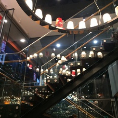  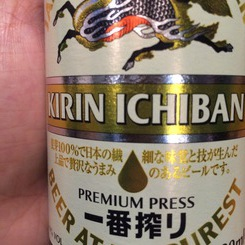 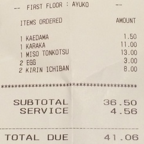
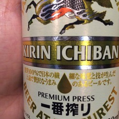 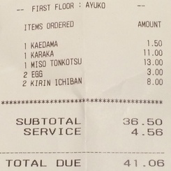
# Added Emacs zone-rainbow
kawabata's zone-rainbow popped up on melpa today. Added to zone-programs. Just because :)
(use-package zone-rainbow :ensure t :after zone :config (setq zone-programs (vconcat [zone-rainbow] zone-programs)))
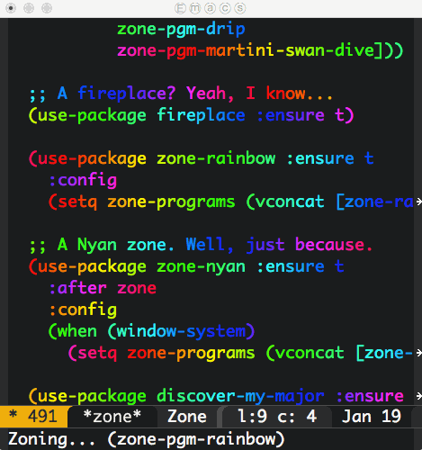
# Safari's Web Inspector keyboard shortcuts
Via WebKit's blog, Web Inspector Keyboard Shortcuts:
- ⌃⌘Y or ⌘\ continue.
- F8 or ⇧⌘; step out.
- F7 or ⌘; step in.
- F6 or ⌘’ step over.
# Copenhagen travel bookmarks
- Christiania.
- Mikkeller Bar.
- Hija de Sanchez restaurant.
- Marv og Ben restaurant.
- Schonnemann restaurant.
- Tivoli.
- Torvehallerne (food).
# Import UIKit for simpler debugging
I bookmarked An @import-ant Change in Xcode and immediately forgot about it. The gist is to import UIKit to simplify inspecting objects during an lldb session:
(lldb) expr @import UIKit
Shorten typing by creating aliases in ~/.lldbinit:
command alias uikit expr @import UIKit command alias foundation expr @import Foundation
# iOS development tips backlog
# Basic Emacs keybindings on Linux desktop
Miss C-a, C-e in your browser and other Linux apps? You can enable the GTK Emacs key theme:
$ gsettings set org.gnome.desktop.interface gtk-key-theme "Emacs"
or if on Cinnamon:
$ gsettings set org.cinnamon.desktop.interface gtk-key-theme Emacs
If your desktop environment is not running gnome-settings-daemon, start it with:
$ gnome-settings-daemon
More at Emacs Keybindings in Chrome Without Gnome and How to get Emacs key bindings in Ubuntu.
# Emacs Objective-C completion with Irony
Install libclang on Mac
brew install llvm --with-clang
Configure Emacs
(use-package irony :ensure t :config (add-hook 'objc-mode-hook 'irony-mode) (add-hook 'irony-mode-hook 'irony-cdb-autosetup-compile-options)) (use-package company-irony :ensure t :config (add-hook 'objc-mode-hook (lambda () (setq-local company-backends '((company-irony))))) (add-hook 'irony-mode-hook 'company-irony-setup-begin-commands))
install irony server
Run:
M-x irony-install-server
NOTE: Needs libclang: Install with "brew install llvm –with-clang" By default, irony-install-server did not find libclang on Mac OS. irony-install-server invokes cmake for you. Work around by adding:
-DCMAKE_PREFIX_PATH=/Users/your-user-name/homebrew/opt/llvm
For example:
cmake -DCMAKE_PREFIX_PATH=/Users/your-user-name/homebrew/opt/llvm -DCMAKE_INSTALL_PREFIX\=/Users/your-user-name/.emacs.d/irony/ /Users/your-user-name/.emacs.d/elpa/irony-20160106.1223/server && cmake --build . --use-stderr --config Release --target install
Compilation database
Install xctool
brew install xctool
Generate compilation database
xctool -sdk iphonesimulator -arch x86_64 -scheme SomeScheme -reporter pretty -reporter json-compilation-database:compile_commands.json clean build
Set Irony's database path
M-x irony-cdb-json-add-compile-commands-path
# Finland travel bookmarks
- 36 Hours in Helsinki.
- Boat to the Baltics; Tallinn (Estonia).
- Helsinki - Suomenlinna (former maritime fortress).
- Lapland (husky sledding, reindeer, Santa Claus village).
- Päivä no:23 Reitti no:23 no:12 | Leipomo K.E.Avikainen (try munkkipossu: pig shaped donut).
- Ragu Ravintola (try panfried fiesh, pulled pork, steak tartare, chocolate mouse).
- Rovaniemi for reindeer, dog sled, santaland, artic circle photos.
# Northern lights travel bookmarks
- Aim for a new moon (eg. 2016-01-10 or 2016-02-08).
- Aim for auroral zone.
- Guide Gunnar will go distance to ensure you see the lights.
- Kiruna Sleddog Tours.
- Tromsø's reindeer racing.
- Tromsø.
- Hundekjøring: drive your own sled.
- Tromsø whale watching.
# Mexico travel bookmarks
# Emacs highlight-symbol-mode
Been a fan of highlight-thing-mode. It automatically highlights all instances of symbol at point. Today, I gave highlight-symbol a try. Similar concept, but also adds the ability to jump to next/previous instances of symbol at point.
(use-package highlight-symbol :ensure t :config (set-face-attribute 'highlight-symbol-face nil :background "default" :foreground "#FA009A") (setq highlight-symbol-idle-delay 0) (setq highlight-symbol-on-navigation-p t) (add-hook 'prog-mode-hook #'highlight-symbol-mode) (add-hook 'prog-mode-hook #'highlight-symbol-nav-mode))

# Gandhi's ever-contemporary wisdom
Anger
"I do get angry, but I feel angry with myself for it. Full conquest of anger is possible only through self-realization. We should love even those who have the worst opinion of us. This is ahimsa, the rest is only ignorance."
Bad handwriting
"I am now of opinion that children should first be taught the art of drawing before learning how to write. Let the child learn his letters by observation as he does different objectives, such as flowers, birds, etc., and let him learn handwriting only after he has learned to draw objects."
Conduct of the Ashram
"Service without humility is selfishness and egotism."
Eating
"There is a great deal of truth in the saying that man becomes what he eats. The grosser the food, the grosser the body."
Heart
"There are chords in every human heart. If we only know how to strike the right chord, we bring out the music."
Moral law
The law of truth and love.
Renouncing or forgoing
Nishkulanand sings: "Renunciation of objects, without the renunciation of desires, is short-lived, however hard you may try."
Silence
"Man spoils matters much more by speech than by silence."
Time
"Every minute that runs to waste never returns. Yet, knowing this, how much time do we waste?"
The palate
"Turn to the birds and beasts, and what do you find? They never eat merely to please the palate, they never go on eating till their inside is full to overflowing. And yet, we regard ourselves as superior to the animal creation!"
Vow of Swadeshi
"The person who has taken the vow of swadeshi will never use articles which conceivably involve violation of truth in their manufature or on the part of their manufacturers."
# Functional programming bookmarks
# 9 Productivity tips
From HBR's 9 Productivity Tips from People Who Write About Productivity:
- Block time away from reactive tasks (email).
- Business = wasted energy.
- Exercise, sleep, and 90 minute work bursts.
- Incomplete tasks prompt healthy thinking out of context.
- Time off or stepping back is invaluable.
- Genuinely help were most successful/enjoyable.
- Plan for saying no while highlighting priority and seeking feedback.
- Measure important behavior change.
- Make time now (automate, simplify, etc.).
# First meal of 2016
Pancakes
- 1 teaspoon of salt.
- 1.5 cups of milk.
- 2 cups of flour.
- 2 eggs.
- 2 tablespoons sugar.
- 4 tablespoons of melted butter.
- 6 teaspoons of baking powder.
Makes 10/11 pancakes.

# Last meal of 2015
For our last meal of 2015, I contributed dal and rotis. This is my first attempt at making either one of these. Both recipes based on Anupy Singla's Indian for Everyone.
Dal Makhani (Buttered black lentils)


Roti-Chapati-Phulka


# Find in $PATH with type and which
I typically use which to figure out the first binary found in $PATH:
which -a emacsclient
/Users/user/homebrew/bin/emacsclient /usr/bin/emacsclient
I always forget about type though:
type -a emacsclient
emacsclient is /Users/user/homebrew/bin/emacsclient emacsclient is /usr/bin/emacsclient
# npm basics
Global vs local package installation location
{prefix}/lib/node_modules
vs
path/to/project/node_modules
View npm config
npm config list
; cli configs user-agent = "npm/2.14.2 node/v4.0.0 darwin x64" ; node bin location = /Users/user/.nvm/versions/node/v4.0.0/bin/node ; cwd = /Users/user/stuff/active/blog ; HOME = /Users/user ; 'npm config ls -l' to show all defaults.
Get config value
npm config get prefix
/Users/user/.nvm/versions/node/v4.0.0
Set config value
npm config set prefix=$HOME/some/location
Install package globally
node install --global <package-name>
or
node install -g <package-name>
List global packages
npm list --global
You can also use –depth=0 to make less verbose.
/Users/user/.nvm/versions/node/v4.0.0/lib ├─┬ babel-eslint@4.1.3 │ ├── acorn-to-esprima@1.0.4 │ ├─┬ babel-core@5.8.25 │ │ ├── babel-plugin-constant-folding@1.0.1 │ │ ├── babel-plugin-dead-code-elimination@1.0.2 ...
Install local package
npm install <package-name> --save
–save will add <package-name> dependency to your package.json.
package.json
See using a package.json.
Uninstall package
npm uninstall <package-name>
Install package at version
npm install <package-name>@1.7.0
Search packages
npm search linter
Online documentation
Online documentation is great so far. More at docs.npmjs.com.
# Clojure bookmarks
# Mac OS X tips backlog
- TODO Uebersicht: Keep an eye on what is happening on your machine and in the World.
- DONE Kwm: Tiling window manager with focus follows mouse for OSX.
cp ~/homebrew/Cellar/kwm/1.1.3/homebrew.mxcl.kwm.plist ~/Library/LaunchAgents/ launchctl load ~/Library/LaunchAgents/homebrew.mxcl.kwm.plist
- DONE Turn off shadows with ShadowToggle.
- DONE Disk Inventory X: disk usage utility for Mac.
# Search bash history with Emacs helm
Following up from changing CWD with helm projectile, here's a way to search your bash history with helm:

(defun ar/helm-helm (title candidates on-select-function) "Helm with TITLE CANDIDATES and ON-SELECT-FUNCTION." (helm :sources `((name . ,title) (candidates . ,candidates) (action . ,on-select-function)) :buffer "*helm-exec*" :candidate-number-limit 10000)) (defun ar/shell-send-command (command) "Send COMMAND to shell mode." (assert (string-equal mode-name "Shell") nil "Not in Shell mode") (goto-char (point-max)) (comint-kill-input) (insert command) (comint-send-input)) (defun ar/helm-shell-search-history () "Narrow down bash history with helm." (interactive) (assert (string-equal mode-name "Shell") nil "Not in Shell mode") (ar/helm-helm "bash history" (with-temp-buffer (insert-file-contents "~/.bash_history") (reverse (delete-dups (split-string (buffer-string) "\n")))) #'ar/shell-send-command))
Bonus: Replace existing M-r binding to use ar/helm-shell-search-history.
(bind-key "M-r" #'ar/helm-shell-search-history shell-mode-map)
# Medicine bookmarks
# View DICOM files from your X-ray
Got a CD with my chest X-ray from the hospital. Was expecting a pdf or an image of sorts, but the CD content was rather different. For starters, it was targeted at Windows users (AUTORUN.INF, MediaViewerLauncher.EXE and a bunch of DLLs):
$ find . -exec file --mime-type '{}' \;
./AUTORUN.INF: text/plain
./DICOMDIR: application/dicom
./MediaViewerLauncher.EXE: application/octet-stream
...
./Libraries/BASEPRINTER.DLL: application/octet-stream
./Libraries/CDDATABURNER.DLL: application/octet-stream
./Libraries/COM.DLL: application/octet-stream
...
./Libraries/ACE.DLL: application/octet-stream
./Libraries/ACE_SSL.DLL: application/octet-stream
./Libraries/ATL90.DLL: application/octet-stream
...
./DICOM/PAT_0000: application/x-directory
./DICOM/PAT_0000/STD_0000/SER_0000/OBJ_0001/IM_0001: application/dicom
./DICOM/PAT_0000/STD_0000/SER_0001/OBJ_0001/ED_0001: application/dicom
./DICOM/PAT_0000/STD_0000/SER_0002/OBJ_0001/ED_0001: application/dicom
./Worklist/ClinicalInfo/067eccde-b299-e511-9114-005056ad3afe.mht: text/html
./Worklist/Report/067eccde-b299-e511-9114-005056ad3afe.mht: text/html
./Worklist/Worklist.wl: application/octet-stream
I'm on a Mac, so most of these files were not useful to me. The more interesting files were IM_0001 and ED_0001 with "application/dicom" MIME type. DICOM files stand for Digital Imaging and Communications in Medicine. How to view these on a Mac? OsiriX viewer is an option. OsiriX, though on the heavy side (100.7MB download), it rendered the X-ray successfully.

Unsurprisingly, ImageMagick's convert utility also handles DICOM files. Converting to PNG worked well.
$ convert ./DICOM/PAT_0000/STD_0000/SER_0001/OBJ_0001/ED_0001 ED_0001.png

DICOM files also hold patient's metadata and optional reports. The file format is well known. OsiriX gives you access to it, but a few lines of python can also extract it for you. First install the pydicom package:
$ sudo pip install pydicom
Running the python interpreter is enough to peak at the metadata:
>>> import dicom >>> ds = dicom.read_file("./DICOM/PAT_0000/STD_0000/SER_0000/OBJ_0001/IM_0001") >>> ds
(0008, 0000) Group Length UL: 400 (0008, 0005) Specific Character Set CS: 'ISO_IR 100' (0008, 0016) SOP Class UID UI: Computed Radiography Image Storage (0008, 0020) Study Date DA: '20151203' (0008, 0021) Series Date DA: '20151203' (0008, 0023) Content Date DA: '20151203' (0008, 0030) Study Time TM: '120519.000000' (0008, 0031) Series Time TM: '120520.000000' (0008, 0033) Content Time TM: '120643.000000' (0008, 0060) Modality CS: 'CR' (0008, 0070) Manufacturer LO: 'Canon Inc.' ...
There were other DICOM files with a report:
>>> import dicom >>> ds = dicom.read_file("./DICOM/PAT_0000/STD_0000/SER_0001/OBJ_0001/ED_0001") >>> ds
(0008, 0005) Specific Character Set CS: 'ISO_IR 100' (0008, 0016) SOP Class UID UI: Encapsulated PDF Storage ... (0042, 0012) MIME Type of Encapsulated Document LO: 'application/pdf'
DCMTK is another alternative tool to extract DICOM metadata. The source is available and can be built:
$ tar xf dcmtk-3.6.0.tar.gz $ cd dcmtk-3.6.0 $ cmake . $ make
Or installed via homebrew:
$ brew install dcmtk
DCMTK includes dcmdump. You can use it to dump DICOM files:
$ dcmdata/apps/dcmdump DICOM/PAT_0000/STD_0000/SER_0000/OBJ_0001/IM_0001
# Dicom-File-Format # Dicom-Meta-Information-Header # Used TransferSyntax: Little Endian Explicit (0002,0000) UL 192 # 4, 1 FileMetaInformationGroupLength (0002,0001) OB 01\00 # 2, 1 FileMetaInformationVersion (0002,0002) UI =ComputedRadiographyImageStorage # 26, 1 MediaStorageSOPClassUID (0002,0003) UI [1.2.392.200046.100.2.1.1.42667.20151203120519.1.1.1] # 52, 1 MediaStorageSOPInstanceUID (0002,0010) UI =LittleEndianExplicit # 20, 1 TransferSyntaxUID (0002,0012) UI [1.3.46.670589.42.1.4.4.5] # 24, 1 ImplementationClassUID (0002,0013) SH [PhilipsISPACS445] # 16, 1 ImplementationVersionName ...
Of interest, David Clunie's Medical Image Format Site.
# Tip: GOOGLETRANSLATE your Spreadsheet
Examples from reference:
=GOOGLETRANSLATE("Hello World","en","es")
=GOOGLETRANSLATE(A2,B2,C2)
=GOOGLETRANSLATE(A2)
# Organize your data with camlistore
Checking out camlistore to organize all sorts of data. Scaleway enables you to deploy camlistore servers.
# Maps dev bookmarks
- Farewell, Google Maps (In der Apotheke).
- Import OpenStreetMap XML data into your Unreal Engine 4.
- Location Tech.
- Mapbox.
- Mapzen.
- Medium's mapping tag.
- Migrating away from Google Maps and cutting costs by 99% (Hacker News).
- Open Addresses.
- OpenStreetMap: Introducing OpenStreetView.
- OSM data in one file.
- OSM on paper.
- OSM raw indices.
- Pigeon Maps – Maps in React with no external dependencies (Hacker News).
- Portable OSM.
- Static Map API - Overview | MapQuest API Documentation.
- Using QGIS to create a custom map.
# Use ImageMagick to convert image to grayscale
Another ImageMagick one-liner I'll likely forget.
mogrify -type Grayscale image.png
# Drill down Emacs dired with dired-subtree
JCS, from Irreal, recently highlighted fuco's dired-hacks. dired-subtree is super handy for drilling subdirectories down. Bound <tab> and <backtab> to toggle and cycle subtrees.
(use-package dired-subtree :ensure t :after dired :config (bind-key "<tab>" #'dired-subtree-toggle dired-mode-map) (bind-key "<backtab>" #'dired-subtree-cycle dired-mode-map))

# GPG examples
Export private key
gpg --export-secret-key -a <keyid> > <private.asc>
Import key
gpg --import < <private.asc>
Delete public key
gpg --delete-keys <keyid>
Delete private key
gpg --delete-secret-keys <keyid>
Edit key
gpg --edit-key <keyid> gpg> uid (lists IDs) gpg> uid 2 (marks ID) gpg> deluid (deletes marked ID) Really remove this user ID? (y/N) y
Change passphrase of the secret key
gpg --edit-key Your-Key-ID-Here gpg> passwd gpg> save
# CSS bookmarks
- CSS Protips: A collection of tips to help take your CSS skills pro (Hacker News).
- CSS Protips: A collection of tips to help take your CSS skills pro.
- CSS style guide.
- CSStickyHeaderFlowLayout.
- Dynamics.js: JavaScript library to create physics-based CSS animations.
- Flexbox Froggy, a game for writing CSS code.
- Howtocenterincss.com (Hacker News).
- Howtocenterincss.com.
- Optimize CSS delivery (Google Developers).
# Resume partial downloads with ssh and rsync
rsync --rsync-path=/usr/local/bin/rsync \ --partial \ --progress \ --rsh=ssh \ john@host:/path/to/file \ path/to/partial/file
# Emacs text faces
- Text faces = Text styles.
- Face attributes: font, height, weight, slant, foreground/background color, and underlining or overlining.
- Font lock mode automatically assigns faces to text.
- M-x list-faces-display: Shows faces defined.
- M-x helm-colors: Also handy.
- Unspecified attributes are taken from 'default' face.
# Preview HTML pages on github
# Flutter setup
Based on Getting Started with Flutter.
$ curl -O https://storage.googleapis.com/dart-archive/channels/stable/release/1.13.0/sdk/dartsdk-macos-x64-release.zip $ unzip dartsdk-macos-x64-release.zip $ export PATH=`pwd`/dart-sdk/bin:$PATH
Verify with:
$ pub --version
# Playing with Dart's analysis server
Dart SDK ships with an analysis server. Very handy if you'd like to write a completion plugin for your favorite editor. The API is well documented. Of interest, there's LocalDartServer.java, part of dartedit.
$ dart path/to/bin/snapshots/analysis_server.dart.snapshot --sdk=path/to/dart-sdk
NOTE: The server reads requests from standard input. Either escape or execute the following as one-liner json requests.
{
"id": "1",
"method": "analysis.setAnalysisRoots",
"params": {
"included": [
"path/to/your/dart/project"
],
"excluded": []
}
}
{
"id": "3",
"method": "completion.getSuggestions",
"params": {
"file": "path/to/some/file.dart",
"offset": 673
}
}
# Dart bookmarks
# iOS app awesome libs bookmarks
# Flutter bookmarks
# Swift bookmarks
- 10 Swift One Liners To Impress Your Friends.
- 5 secrets of Swift API design.
- A beautiful graphics framework for Material Design in Swift.
- All Episodes · Swift Talk · objc.io.
- App Architecture (objc.io).
- Async/await in Swift unit tests.
- Awesome server side swift.
- Awesome-Swift-Education.
- Building DSLs in Swift (Swift by Sundell).
- Conditional Compilation in Swift, Part 1 (Dave DeLong).
- Constructing URLs in Swift.
- Episode 125 – Building a Layout Library: Building a Responsive Layout · Swift Talk · objc.io.
- Equatable - Swift Unboxed.
- FunctionKit/README.md at master · mpangburn/FunctionKit · GitHub.
- Get your current address in Swift – Ravi Shankar.
- GitHub - burczyk/XcodeSwiftSnippets: Swift 4 code snippets for Xcode.
- GitHub - Raizlabs/BonMot: Beautiful, easy attributed strings in Swift.
- GitHub - raywenderlich/swift-algorithm-club: Swift Algorithm Club.
- GitHub - saoudrizwan/Disk: Delightful framework for iOS to easily persist strcts, images, and data.
- How to bridge a Swift View.
- How to check for internet connectivity using NWPathMonitor.
- How to create a random terrain tile map using SKTileMapNode and GKPerlinNoiseSource.
- How to run an external program using Process.
- I made a “What’s new in Swift 4.2” playground.
- Jason Zurita - Compositional UI Styling in Swift - YouTube.
- Large Title and Search in iOS 11 – Pavel Gnatyuk – Medium.
- Lightbox is a convenient and easy to use image viewer for your iOS app.
- Migrating an Objective-C class to Swift: a piecemeal approach – Ole Begemann.
- More fun with Swift 5 String Interpolation: Radix (Erica Sadun).
- Netguru's Swift Style Guide.
- Never: Eliminating Impossible States in Swift Generic Types - NSHipster.
- Optionals in Swift for newbies.
- Slot-based UI development in Swift (Sundell).
- SRChoco: Seorenn's Development Libraries for OS X and iOS (github).
- Swift 5 Interpolation Part 3: Dates and Number Formatters (Erica Sadun).
- Swift Development with Visual Studio Code - NSHipster.
- Swift Resources.
- swift sh adds automatic dependency loading in scripts.
- Swift Style, Second Edition: An Opinionated Guide to an Opinionated Language by Erica Sadun (The Pragmatic Bookshelf).
- Swift.org - API Design Guidelines.
- Swift.org - API Design Guidelines.
- SwiftMothly.
- The Complete Guide to Optionals in Swift – Hacking with Swift.
- The Shift Language (YouTube).
- TrozWare blogs on Swift.
- UILayoutGuide – The Traveled iOS Developer’s Guide – Medium.
- Using errors as control flow in Swif (Sundell).
- Writing Your App Swiftly.
# Installing Emacs spaceline
Gave Spaceline a try. Spacemacs's powerline theme. Setup was super simple (Thanks Eivind Fonn and Sylvain Benner):
(use-package spaceline :ensure t :config (use-package spaceline-config :config (spaceline-toggle-minor-modes-off) (spaceline-toggle-buffer-encoding-off) (spaceline-toggle-buffer-encoding-abbrev-off) (setq powerline-default-separator 'rounded) (setq spaceline-highlight-face-func 'spaceline-highlight-face-evil-state) (spaceline-define-segment line-column "The current line and column numbers." "l:%l c:%2c") (spaceline-define-segment time "The current time." (format-time-string "%H:%M")) (spaceline-define-segment date "The current date." (format-time-string "%h %d")) (spaceline-toggle-time-on) (spaceline-emacs-theme 'date 'time))

# package.el incomprehensible buffer
Came across "incomprehensible buffer" error in package.el. Workaround patch:
--- a/lisp/emacs-lisp/package.el +++ b/lisp/emacs-lisp/package.el @@ -1161,6 +1161,7 @@ package--with-work-buffer (let* ((url (concat ,url-1 ,file)) (callback (lambda (status) (let ((b (current-buffer))) + (goto-char (point-min)) (unwind-protect (wrap-errors (when-let ((er (plist-get status :error))) (error "Error retrieving: %s %S" url er))
# Leading bookmarks
- Ask HN: How to Be a Good Technical Lead? (Hacker News).
- Do You Have a Manager’s Mindset?.
- First Timers Only: A suggestion to Open Source project maintainers.
- How to Give Tough Feedback That Helps People Grow.
- Secrets of the Superbosses.
- Shifting from Star Performer to Star Manager.
- The Joel Test: 12 Steps to Better Code.
- The Manager as Debugger.
# Online reading backlog
- TODO Why Functional Programming Matters.
- TODO Phrack 69.
- TODO A Simple Formula for Changing Our Behavior.
- TODO Emacs.el episode 3.
- TODO Be Grateful More Often.
- TODO GTD sucks for creative work.
- TODO Land, Capital, Attention: This Time it Is the Same.
- TODO Mindset: What You Believe Affects What You Achieve (Gates Notes).
- TODO The Case for Getting Rid of Borders—Completely.
- TODO The Ultimate Guide to Personal Productivity Methods.
- TODO Thing Explainer: A Basic Guide for Curious Minds (Gates Notes).
- TODO Your body language shapes who you are.
# Travel lifestyle bookmarks
- 5 Travel Lessons You Can Use at Home.
- 50 Best Travel Tips from 10 Years of Travel - Your RV Lifestyle.
- Bootstrapping in Bangkok is the best option.
- goruck bag.
- My 30 Best Travel Tips After 8 Years Traveling The World • Expert Vagabond.
- My partner & I want to backpack around as much of the world as we can for 6-12 months. What surprises did you learn on the way I should plan for?.
- NomadList: Best cities to work from remotely.
- Show HN: I made a database of remote companies (Hacker News).
- tom bihn bags.
- waveUPtravel.
- What are the best ways to earn money while traveling around the world? (Quora).
# SQL bookmarks
- Launching LiteCLI.
- LiteCLI – A user-friendly command-line client for SQLite database (Hacker News).
- Literate SQL.
- Show HN: SQL Trainer – Learn SQL by doing live data exercises (Hacker News).
- SQLite As An Application File Format.
- The interesting ideas in Datasette.
- You Can Do it in SQL, Stop Writing Extra Code for it - DEV Community.
- Zumero: Efficient sync by using multiple SQLite files.
# Unix/Linux tools bookmarks
- (small) Guide on using mtree (The FreeBSD Forums).
- 15 Practical Linux cURL Command Examples.
- 7 Awesome Open Source Analytics Software For Linux and Unix - nixCraft.
- A practical proposal for migrating to safe long sessions on the web (Hacker News).
- A practical security guide for web developers (Hacker News).
- A Unix Utility to Know About: lsof (2009) (Hacker News).
- Announcing gRPC Support in Nginx (Hacker News).
- Autotools Mythbuster.
- Best Practices for UNIX chroot.
- CLI: improved (better cli alternatives).
- CLI: Improved, better CLI alternatives (Hacker News).
- Encrypt disk with bioctl(8) and CRYPTO - Roman Zolotarev.
- How To Use Bash's Job Control to Manage Foreground and Background Processes.
- httpie: Command line HTTP client, a user-friendly curl alternative.
- Julia Evans's zines (unix tools).
- Learn a Little AWK (Irreal).
- Make cURL follow redirects.
- My First 10 Minutes on a Server (Hacker News).
- Nginx vs Apache.
- Peek Simple animated GIF screen recorder with an easy to use interface.
- Show HN: Ultimate Plumber – a tool for writing Linux pipes with live preview (Hacker News).
- smenu is a selection filter just like sed is an editing filter.
- SSH: Best practices.
- Text Manipulation with Command Line Utilities.
- trackerjacker/README.md at master · calebmadrigal/trackerjacker · GitHub.
- Unison File Synchronizer.
- Unix commands you wish you knew years ago (Reddit).
- Unix for the Beginning Mage.
# Couchbase React Native bookmarks
# Installing Emacs 25 devel on Mac OS X
Stable
brew update brew install emacs --HEAD --use-git-head --with-cocoa --with-srgb --with-gnutls brew linkapps emacs
Development
brew update
brew install emacs --devel --with-cocoa --with-srgb --with-gnutls
brew linkapps emacs
then
Had problems loading seq. Removed byte-compiled packages:
$ find ~/.emacs.d/elpa -iname *.elc -exec rm '{}' \;
# Diagram tools bookmarks
# Licensing bookmarks
- choosealicense.com (Choosing an open source license doesn’t need to be scary).
- choosealicense.com (github).
- tldrlegal.com (Software Licenses in Plain English).
# Synology bookmarks
- Backup your files to an external drive or a shared file DSM 6.0 – Synoguide.
- Ext4 vs. Btrfs: Why We're Making The Switch {Linux}.
- How to make your Synology Disk station (NAS) more secure? – BPMSG.
- Josh Dick » Configuring SSH and SCP/SFTP on DSM 5.0 for Synology DiskStations.
- Log in to a Synology DiskStation using SSH keys as a user other than root.
- Look into Synology's file encryption.
- RAID5 vs SHR - Ars Technica OpenForum.
- reddit: Please confirm that I chose the right option (SHR1 with DS718+).
- Reset your Admin password in your Synology – Synoguide.
# Backup bookmarks
- HGST Deskstar NAS 3.5-Inch 6TB 7200RPM SATA III 128MB Cache Internal Hard Drive (0S03839).
- I found the Holy Grail of backups.
- Kingston Technology 4GB 1600MHz DDR3L PC3-12800 1.35V Non-ECC CL11 SODIMM Intel Laptop Memory KVR16LS11/4.
- Synology Disk Station 8-Bay (Diskless) Network Attached Storage (NAS) (DS1815+).
- Tarsnap: online backups for the truly paranoid.
# Making hummus
Made hummus, based on Delicious Istanbul's 5 Secrets to Perfect Hummus (wayback machine) post.
- 160 g dry chickpeas.
- 4 cloves garlic minced.
- 1 tsp fine sea salt.
- 1 1/2 tbsp lemon juice.
- 1/4 tsp ground cumin.
- 6 tbsp tahini paste.
- 2/3 cup cooking water.
- Extra virgin olive oil, for serving.
- Red pepper flakes, for serving.
- Zahter mixture, for serving.
- Soak chickpeas overnight.
- Discard water and rinse chickpeas.
- Cook in low heat (about 5 cups water) for 1.5 hours for until soft (but keeping shape.) Check if can be mashed with thumnb.
- Save cooking water.
- Peal chickpeas (optional).
- Blend ingredients until silky paste. Taste and add lemon/salt/cooking water.
Keeps in fridge for 3-4 days. Freeze otherwise.


# Nara travel bookmarks
# Kubernetes bookmarks
- A Tutorial Introduction to Kubernetes (Hacker News).
- Borg, Omega, Kubernetes: Lessons learned from container management over a decade (Hacker News).
- Fabric8 is an integrated open source DevOps and Integration Platform (Kubernetes or OpenShift).
- Kubernetes by Example | Hacker News.
- Swarm vs. Fleet vs. Kubernetes vs. Mesos (Hacker News).
- Swarm vs. Fleet vs. Kubernetes vs. Mesos.
# Docker bookmarks
# Angular bookmarks
# Mac OS bookmarks
- Customizing the Cocoa Text System (github).
- Customizing the Cocoa Text System.
- DaisyDisk (what's taking up your disk space).
- DTrace: {even better than} strace for OS X | 8th Light.
- Getting absolute path in Bash in OSX.
- GitHub - fitztrev/shuttle: A simple SSH shortcut menu for macOS.
- Guide to Securing Apple OS X.
- Hammerspoon.
- kextstat.
- KextViewr: View all modules on that are loaded in the OS kernel.
- Little Snitch.
- macOS Development for Beginners: Part 1.
- macOS Development for Beginners: Part 2.
- macOS Development for Beginners: Part 3.
- Marzipan: Porting iOS Apps to the Mac (Inside PSPDFKit).
- Phoenix: A lightweight macOS window and app manager scriptable with JavaScript.
- Subler: Mac OS X app created to mux and tag mp4 files.
- Which OS X Applications do you find indispensable? (Stack Exchange).
# easy_install->pip->conda
Spotted Conda package manager. It handles python installations, in addition to package management. There's also a package index provided by Binstar. Installed Miniconda, the bare bones Conda environment.
Can't find a python package in Binstar? Here's a post on Using PyPi Packages with Conda. If that fails, you can try pip from your Conda python environment.
# Traditional music bookmarks
# Recover from an unresponsive Emacs
Wilfred Hughes has a handy tip to bail you out of a hung Emacs instance:
pkill -SIGUSR2 emacs
ps. Not had a chance to try it, but next time it happens…
# Training for under 50 min 10k run
Not much training time for an under 50 minute 10k run, but here's an attempt (based on time-to-run's sub-50):
| Mon | Tue | Wed | Thu | Fri | Sat | Sun |
|---|---|---|---|---|---|---|
| Oct 26 | Oct 27 | Oct 28 | Oct 29 | Oct 30 | Oct 31 | Nov 1 |
| 60 min | 30 min | 2k @ 4.55/k | rest | 105 min | ||
| 2 min rest | ||||||
| ✔ | (repeat x 3) | |||||
| Nov 2 | Nov 3 | Nov 4 | Nov 5 | Nov 6 | Nov 7 | Nov 8 |
| 30 min | 30 min | 1k @ 4.50/k | 30 min | 30 min | rest | 5k @ 4.55/k |
| 90 sec rest | ||||||
| (repeat x 5) | ||||||
| Nov 9 | Nov 10 | Nov 11 | Nov 12 | Nov 13 | Nov 14 | Nov 15 |
| 10k easy | 30 min | 1k @ 4.55/k | 30 min | 30 min | rest | race day |
| 1 min easy | ||||||
| (repeat x 3) |
# Reading a running training plan
A sample from Kona Part 2's comments:
2.5 w/u to 4x(1.25@11.5 w/0.25R@7) to 3x(3.75@10.5 w/0.5R@7) to 2.5 c/d.
Is read from left to right as:
2.5 mile warm up to four times through 1.25 miles at 11.5 miles per hour with 0.25 miles recovery at 7 miles per hour to three times through 3.75 miles at 10.5 miles per hour with 0.5 miles recovery at 7 miles per hour to 2.5 miles cool down.
# Find binary in PATH using python
import distutils.spawn print distutils.spawn.find_executable('git')
/usr/bin/git
# Indonesia travel bookmarks
# Malaysia travel bookmarks
# Mongolia travel bookmarks
# Running bookmarks
- 10k in under 50 mins — Runner's World UK Forum.
- Garmin Forerunner 230 & 235 In-Depth Review (DC Rainmaker).
- Harvard's Running barefoot or in minimal footwear FAQ.
- How to run a sub-50 10K - The Running Bug.
- Is Running Good Or Bad For Your Health?.
- Mornington Chasers running club.
- Open track: Race Management System.
- Review : Newton Gravity IV & Motion IV | Ramblings of an IronRose.
- The Race Organiser.
- Training towards a sub 50 minute 10K.
# Media player bookmarks
# Get Emacs to gather links in posts
Comments in posts can be a great source of recommendations. Here's a way to extract post links using Emacs and enlive.

(require 'enlive) ;; https://github.com/zweifisch/enlive (require 'org) (defun ar/input-clipboard-url-or-prompt () "Return a URL from clipboard or prompt user for one." (let* ((clipboard (current-kill 0)) (url (if (string-match "^http://" clipboard) clipboard (read-string "URL: ")))) (unless (string-match "^http://" url) (error "Not a URL")) url)) (defun ar/url-view-links-at () "View external links in HTML from prompted URL or clipboard." (interactive) (with-current-buffer (get-buffer-create "*links*") (org-mode) (read-only-mode -1) (erase-buffer) (mapc (lambda (element) (let ((href (enlive-attr element 'href)) (text (enlive-text element))) (when (and href (string-match "^http" href)) (insert (org-make-link-string href text) "\n")))) (enlive-query-all (enlive-fetch (ar/input-clipboard-url-or-prompt)) [a])) (delete-duplicate-lines (point-min) (point-max)) (goto-char (point-min)) (toggle-truncate-lines +1) (read-only-mode +1) (switch-to-buffer (current-buffer))))
# UX toolbox bookmarks
- Affinity Designer: the perfect tool for UI and UX design.
- Build a static site with Material Design Lite.
- Eye dropper Chrome extension (pick colors in browser).
- Generate - Coolors.co.
- Google, but for colors (Hacker News).
- PaintCode - Turn your drawings into Objective-C or Swift drawing code.
- Paletton - The Color Scheme Designer.
- WhatTheFont! (find out font names).
# Change Emacs shell's CWD with helm projectile
If using Emacs shell and helm projectile, you can wire these up to quickly change your current working directory.

(require 'helm-projectile) (defun ar/shell-cd (dir-path) "Like shell-pop--cd-to-cwd-shell, but without recentering." (unless (string-equal mode-name "Shell") (error "Not in Shell mode")) (message mode-name) (goto-char (point-max)) (comint-kill-input) (insert (concat "cd " (shell-quote-argument dir-path))) (let ((comint-process-echoes t)) (comint-send-input))) (defun ar/helm-projectile-shell-cd () "Change shell current working directory using helm projectile." (interactive) (unless (string-equal mode-name "Shell") (error "Not in Shell mode")) (let ((helm-dir-source (copy-tree helm-source-projectile-directories-list))) (add-to-list 'helm-dir-source '(action . ar/shell-cd)) (add-to-list 'helm-dir-source '(keymap . nil)) (add-to-list 'helm-dir-source '(header-line . "cd to directory...")) (helm :sources helm-dir-source :buffer "*helm-dirs*" :candidate-number-limit 10000)))
# Thermostat reset on Bosch WKD28350GB
My Bosch washer/dryer (WKD28350GB) stopped drying recently. Resetting the dryer's thermostat red breaker did the trick.


Edit: Similar post here.
# Javascript fetch node sample
Playing with node and fetch:
// Requisite: npm install node-fetch --save // Save to fetch-demo.js // Run: node fetch-demo.js var fetch = require('node-fetch'); fetch("http://xenodium.com/data/javascript-fetch-node-sample/message.json", { method: 'GET', timeout: 5000 }).then(function(response) { return response.json(); }).then(function(response) { console.log('subject: ' + response.subject); console.log('body: ' + response.body); }).catch(function(reason) { console.log(reason); });
# Extract dominant colors in images
There's a handy HN post pointing to Javier López's Using imagemagick, awk and kmeans to find dominant colors in images. A comment also highlights color-extract, written in Go.
# Find a word with regex and WordNet
Recently wanted to come up with a random keyword. Querying WordNet and a regular expression did the job.
Installed WordNet on Mac:
$ brew install wordnet
Want a word ending in "esome"?
$ wn esome -grepn -grepv -grepa -grepr | egrep -o -e "\w*esome\b" | sort | uniq
adventuresome
awesome
blithesome
bunglesome
cuddlesome
esome
fivesome
gruesome
lithesome
lonesome
lovesome
meddlesome
mettlesome
nettlesome
threesome
tiresome
torturesome
troublesome
unwholesome
venturesome
wholesome
# Soundcloud's Go best practices (GopherCon 2014)
Having watched the video, some takeaways:
Single GOPATH
$GOPATH/src/github.com/soundcloud/foo
Repo structure
Formatting and style
Use gofmt.
Google's codereview guidelines.
Avoid named return parameters.
Avoid make and new (unless you know sizes).
Use struct{} for sentinel values: sets, signal chans.
Flags
func main() { var ( foo = flags.String("foo", "doch", "...") bar = flat.Int("bar", 34, "...") ) flag.Parse() // ... }
Logging
Testing
Code validation
# Sync pip with Mac OS updates
My pip installation recently broke after a Mac OS update.
$ pip
Traceback (most recent call last):
File "/usr/local/bin/pip", line 5, in <module>
from pkg_resources import load_entry_point
File "/System/Library/Frameworks/Python.framework/Versions/2.7/Extras/lib/python/pkg_resources.py", line 2793, in <module>
working_set.require(__requires__)
File "/System/Library/Frameworks/Python.framework/Versions/2.7/Extras/lib/python/pkg_resources.py", line 673, in require
needed = self.resolve(parse_requirements(requirements))
File "/System/Library/Frameworks/Python.framework/Versions/2.7/Extras/lib/python/pkg_resources.py", line 576, in resolve
raise DistributionNotFound(req)
pkg_resources.DistributionNotFound: pip==1.1
Updating my pip installation fixes the break:
$ sudo easy_install -U pip
# Chinatown treats review
Recommended? yep
There's a corner in Chinatown hosting some truly superb treats. If you get caught in the rush between Newport court and Newport place, you'd likely fail to notice some the awesome street food stands.


Chilly squid
I've walked past this place many times and never noticed it. They serve a handful of items, but the grilled chilly squid skewers caught my attention. They're grilled, brushed with chilly sauce and finished with sprinkled sesame and cumin seeds. Super tasty.


Pancake + Crisp + Egg + Hot chillies = Jiān Bǐng 煎餅
I first had these delicious breakfast savory pancakes at a Beijing street food stall. Never expected to randomly find Jiān Bǐng in London. It's a crepe with an additional egg spread, hoisin sauce, chilly sauce, hot chillies, topped with spring onions and coriander, all wrapping a wonderfully crispy bread cracker. And.. it's awesome.

Tai Yaki
Chinatown Bakery is hard to miss. Pedestrian traffic slows down as we all fall under the spell of the Tai Yaki machine. This wonderful assembly line produces fish-shaped sweet waffles filled with custard. They are the perfect dessert after some savory street snacks. You can get a bag of 4 for £2.


All near each other
All these delights are within a stone's throw away from each other.

Useful?
Was this post useful to you? do reply!
Better suggestion?
London is full of overhyped, gimmicky, and unnecessarily expensive restaurants. Very few deliver truly awesome food (even those expensive ones). Got suggestions? I'd love to hear from you @xenodium.
# React bookmarks
- 11 mistakes I’ve made during React Native / Redux app development.
- 9 things every React.js beginner should know (Hacker News).
- 9 things every React.js beginner should know.
- A Complete Guide to Flexbox.
- A complete native navigation solution for React Native with optional redux support - nav bars, tabs, drawer, modals.
- A Material Design style React Native component library.
- A pull to refresh ListView for React Native.
- Adam Wolf's React Native talk.
- Aligning Children using Flexbox in React Native.
- Applying baisc styles in react native (video).
- Applying Basic Styles in React Native.
- Avoid premature fluxing.
- Awesome React: a collection of awesome things regarding React ecosystem.
- babel-eslint.
- Beginner’s Guide to Using CocoaPods with React Native.
- Beyong React Native's "getting started guide".
- Bonnie Eisenman's blog (some react).
- Breaking up Heavy Processing in React Native (Blog post).
- Brent Vatne - Building li.st for Android with Exponent and React Native at react-europe 2016.
- Bridging in React Native: An in-depth look into React Native's core.
- Building React Native Apps.
- Bulding the F8 app.
- Cairn: a tiny library for React Native replacing default styling syntax.
- Coding Apps with React Native at Exponent.
- Configuring Emacs to use eslint and babel with flycheck for javascript and React.js JSX.
- Curated tutorial and resource links I've collected on React, Redux, ES6, and more.
- Dan Abramov - Live React: Hot Reloading with Time Travel at react-europe 2015.
- Deep Diving React Native Debugging.
- Developing React.js Components Using ES6.
- Device Information for React Native iOS and Android.
- Didact: a DIY guide to build your own React – Hexacta Engineering.
- ECMAScript 5 Strict Mode, JSON, and More.
- ESLint plugin for React Native.
- eslint-plugin-flowtype.
- Exponentjs.
- Flowery: prettifies the result generated by Facebook Flow.
- Flux diagram.
- Getting Started with Redux (30 lessons).
- Idiomatic React Testing Patterns.
- Implement XHR timeout for Android and IOS natively.
- Improved shadow performance on iOS.
- Learn Raw React – No JSX, No Flux, No ES6, No Webpack (Hacker News).
- LearnRxSwift.
- ListView rendering issue.
- Native image/photo picker for react native.
- Native react navigation in every platform.
- OfflineMovies: retrieves movies from an api and caches the result offline.
- One day with React Native for Android.
- Optimizing React Native views (Screencast).
- Optimizing React Native views (Screencast).
- Passing info automatically through a tree.
- Progressive image loading.
- React and React Native Layout Components - ReactScript.
- React Component Starter Kit.
- React Custom Renderers (Blog post).
- React Design Principles.
- React Native accordion.
- React Native action button.
- React Native and Typescript.
- React Native Animated ScrollView Row Swipe Actions.
- React Native App initial setup.
- React Native in an Existing iOS App: Dynamic Routing.
- React Native in the Github Community.
- React Native Layout System.
- React Native Mapview component for iOS + Android.
- React Native Material Design (react-native-material-design).
- React Native Material Design (xinthink).
- React Native Newsletter - Issue #24.
- React Native Newsletter - Issue #25.
- React Native Package Manager (rnpn).
- React Native Playground.
- React Native scrollable decorator.
- React Native Toolkit (navigation examples).
- React Native Tutorial: Building Apps with JavaScript.
- React Native’s LayoutAnimation is Awesome.
- React Tips and Best Practices.
- React-Move – Animate anything in React (Hacker News).
- react-native-camera: A Camera component for React Native.
- react-native-redux-router (replace push/pop screens with easy syntax).
- React.js Program: A project based, linear approach to learning React.js and the React.js ecosystem.
- react.parts/native feed.
- Reactive Programming Overview.
- ReactNativeAutoUpdater.
- Redux: Predictable state container for JavaScript apps.
- Removing User Interface Complexity, or Why React is Awesome.
- Responsive Design in React Native.
- rnplay.org: Test and share React Native code samples.
- Snowflake (React iOS/Android + Redux + Jest testable + parse.com + bitrise.io).
- Some Thoughts On Gluing React Native and Meteor (Blog post).
- Testing react Native with jest.
- The beginners guide to React Native and Firebase (Blog post).
- The Case for Flux.
- The Reactive Extensions for JavaScript.
- The reactive manifesto.
- Thinking in React.
- Thoughts on the future of mobile app development (Blog post).
- Tips for styling your React Native apps.
- Tutorial: Handcrafting an iOS Application with React Native (and lots of love).
- Unit Testing React Native Components: A Firsthand Guide.
- Using redux-saga To Simplify Your Growing React Native Codebase.
- Ways to pass objects between native and JavaScript in React Native.
- What I learned from building with React.
- Why React Native is Better than Native for Your Mobile Application.
- Writing Modular JavaScript With AMD, CommonJS & ES Harmony.
- Yasnippets for React.
# Chinese rice vinegar
Note to self to buy Gold Plum Chinkiang Vinegar. Awesome with dim sum.

# Use ImageMagick to batch-resize images
Using percentage:
$ mogrify -resize 10% *.png
Using dimensions:
$ mogrify -resize 120x120 *.png
Lots of other alternatives from ImageMagick's documentation:
| -resize | scale% |
| -resize | scale-x%xscale-y% |
| -resize | width |
| -resize | xheight |
| -resize | widthxheight |
| -resize | widthxheight^ |
| -resize | widthxheight! |
| -resize | widthxheight> |
| -resize | widthxheight< |
| -resize | area@ |
Fix image aspect ratios for Instagram:
$ mogrify -resize 1080x1350 -gravity center -extent 1080 *.jpg
# Lucky 7 review
Recommended? yep


{kind=link}
{kind=link}
Buttermilk Banana pancakes
These are my favorite pancakes in London by far. Banana buttermilk pancakes and a few free coffee refills usually sort me out until dinner time. Add a side of bacon if extra hungry. You probably don't need it though.


Reuben sandwich
The reuben has been on Lucky 7's specials menu for months now. Not had many of these in London, but compared to The Brass Rail's, this reuben was a clear winner. The sandwich is huge and comes with fries. My girlfriend and I struggled to finish one between the two of us.


Vanilla milkshake (add malt!)
This milkshake hits the spot every time, but it's filling. You almost have to decide between the shake and an actual meal. If you must have it, add malt. Sorry, no picture.
Huevos Rancheros
This is a breakfast dish I can equally make (better?) at home, but Lucky 7 wins hands down every time I'm feeling particularly lazy. Sorry, no picture.
Useful?
Was this post useful to you? do reply!
Better suggestion?
London is full of overhyped, gimmicky, and unnecessarily expensive restaurants. Very few deliver truly awesome food (even those expensive ones). Got suggestions? I'd love to hear from you @xenodium.
# Sierra Leone travel bookmarks
# London travel bookmarks
- Chiswick House & Gardens.
- Heath Robinson Museum.
- London Library (book your free tour).
- Quaker gardens, Islington.
- Soho Theatre (not tried yet).
# Use ImageMagick to auto-orient images
Recently needed to rotate images based on EXIF metadata. ImageMagick to the rescue:
$ for i in *.png; do convert -auto-orient "$i" "$i"; done
# Bengali Macher Jhol
My friend Sakhya brought me the wonderful Cookbook of Regional Cuisines of India. After improvisations and substitutions, here's my attempt at making Bengali Machcher Jhol:


# New habits for 2015
- 20 min morning meditations.
- A better way to tie your shoes.
- Cold showers (all of them!).
- Keys, wallet, phone, badge, and headphones live together.
- Listen to audio books.
- Morning runs.
- Nightly flossing.
# Meditation retreats bookmarks
# Human memory bookmarks
# Meditation bookmarks
- 10% Happier: Mindfulness Meditation Courses with Dan Harris and Joseph Goldstein.
- Aimless Wandering.
- Are You in Despair? That’s Good (NY Times).
- Beating procrastination.
- Best 10 life changes.
- Breathing Exercise: Three To Try | 4-7-8 Breath (Andrew Weil, M.D.).
- Developing Lotus Flexibility - Preparing Yoga Padmasana Sitting Position, part 1 (YouTube).
- How to Make Yourself Work When You Just Don’t Want To.
- How to sit Zen.
- Jonathan Foust's talks.
- Kalyanamittas: We'll See - A Zen Story.
- Kalyanamittas: We'll See - A Zen Story.
- Meditation centres around the UK.
- Memreise's blog.
- Mental Models I Find Repeatedly Useful.
- Mind Body Attention — thinking, moving, and meditating.
- Mindfulness breathing.
- Mindfulness Mitigates Biases You May Not Know You Have.
- The Challenge of Consciousness (Hacker News).
- The Energy Project blog.
# Learning bookmarks
- Best YouTube channels for learning (Quora).
- Effective learning: Twenty rules of formulating knowledge.
- HN's comments on learning languages.
- HN's comments on memory.
- How to Finally Play the Guitar: 80/20 Guitar and Minimalist Music.
- Learn Difficult Concepts with the ADEPT Method.
- Learning to learn.
- Learning to Learn: Intuition Isn’t Optional | BetterExplained.
- Scientific Speed Reading: How to Read 300% Faster in 20 Minutes.
# Bundi travel bookmarks
- Bundi Haveli (accomodation).
- Hadoti Palace (accomodation).
- Haveli Braj Bhushan Ji ki (accomodation).
- Haveli Katkoun Guest House (accomodation).
- Kasera Paradise (accomodation).
# Upgrading PL30 headphones
I've loved my Soundmagic PL30 in-ear headphones. They're relatively inexpensive, comfortable, and great for exercising (they stay in). Audio quality and bass have been good enough (I don't need much). Unfortunately, I've had two pairs of PL30's and both stopped working after a year or two. I'm replacing the last pair with RHA's MA750 (an upgrade, me hopes).
Other contenders considered: Etymotic Research HF5, and Shure SE215. Also considered bluetooth alternatives like JayBird BlueBuds X and Plantronics BackBeat GO 2.
I'm somewhat nervous to pay more for a pair of headphones. Let's hope they don't meet the same unfortunate fate. We'll see.
# Quotes
- "Being good at something is about being curious enough to explore things to a level where most people give up."
- "The world is a book and those who do not travel read only one page." - Augustine of Hippo.
- "National identity is not your only identity." - Xiaolu Guo?
# Bhutan travel bookmarks
# Cooking bookmarks
- 25 Cocktails Everyone Should Know.
- Amazon.com: Taylor Precision Products Stainless Steel Kitchen Scale.
- Cast Iron Fry Pans.
- ChienLing Koo's answer to How is authentic fried rice prepared? (Quora).
- Eggs Kejriwal Recipe - NYT Cooking.
- Equipment Review: Best Carbon-Steel Skillets (YouTube).
- Equipment: How to Buy, Season, and Maintain Cast Iron Cookware.
- How To Cook With Cast Iron (YouTube).
- Imperia Italian Double Cutter Pasta Machine.
- It's Not Rocket Science, Steaming Hard-Boiled Eggs Makes Peeling Easier (Digital trends).
- Marcato Atlas 150 pasta machine Chrome, Silver Wellness.
- My Favourite Homemade Almond Milk + Step By Step Photos.
- New York Times cooking.
- Pho Tai Lan (Hanoi style flash-fried steak & garlic soup).
- The Ringer Cast Iron Cleaner XL 8x6 Inch Stainless Steel Chainmail (Amazon).
- The Truth About Cast Iron Pans: 7 Myths That Need To Go Away.
- The ultimate way to season cast iron.
- Why do steaks at high end restaurants taste so different from other steaks? (Quora).
# 9 week half-marathon training
While reading Zen Habits: Mastering the Art of Change, I comitted to running half marathon in mid-October. That's roughly two months from now. Here's a 9 week training schedule:
| WEEK | MON | TUE | WED | THU | FRI | SAT | SUN |
|---|---|---|---|---|---|---|---|
| 1 | Rest | 5 Km | 5 Km | Cycle | Rest | 5 Km | 7 Km |
| 2 | Rest | 5 Km | 5 Km | Cycle | Rest | 5 Km | 8 Km |
| 3 | Rest | 7 Km | 5 Km | Cycle | Rest | 5 Km | 10 Km |
| 4 | Rest | 8 Km | 5 Km | Cycle | Rest | 5 Km | 12 Km |
| 5 | Rest | 8 Km | Rest | 8 Km | Rest | 5 Km | 14 Km |
| 6 | Rest | 8 Km | Rest | 8 Km | Rest | 6 Km | 16 Km |
| 7 | Rest | 8 Km | 8 Km | 8 Km | Rest | 8 Km | 19 Km |
| 8 | Rest | 8 Km | Rest | 12 Km | Rest | 8 Km | 16 Km |
| 9 | Rest | 8 Km | Rest | 5 Km | 5 Km | Rest | Race |
My times:
| WEEK | MON | TUE | WED | THU | FRI | SAT | SUN |
|---|---|---|---|---|---|---|---|
| 1 | Rest | ✘ | 29:04 | ✔ | Rest | 26:36 | 38:40 |
| 2 | Rest | 29:11 | 28:50 | ✔ | Rest | 27:07 | 44:55 |
| 3 | Rest | 40:46 | 26:29 | ✔ | Rest | ✘ | 57:01 |
| 4 | Rest | 46:46 | ✘ | ✘ | Rest | 30:08 | 1:12:10 |
| 5 | Rest | 46:59 | Rest | 44:46 | Rest | 24:50 | 1:25:24 |
| 6 | Rest | 50:02 | Rest | 46:24 | Rest | ✘ | 1:37:39 |
| 7 | Rest | 46:54 | 46:41 | 46:42 | Rest | ✘ | 1:57:57 |
| 8 | Rest | 45:28 | Rest | 48:13 (8km) | Rest | 43:56 | ✘ |
| 9 | Rest | 44:24 | Rest | 27:12 | 26:09 | Rest | 1:58:28 |
# Shanghai travel bookmarks
- 36 Hours in Shanghai.
- Shanghai Xiaolongbao at Dumpling House Edison (on Rt 27).
- Tianzi Fang street art (Google maps).
- Tianzi Fang street art.
- Town God's Temple, street Food!
- Yu Garden/Huxinting Teahouse.
- 佳家 for 小龙包.
- 小样 (Little Yang's) for 生煎包 (sheng jian bao). Fried soup filled dumplings. Think skin crunchy bottom texture.
# Singapore job board bookmarks
# Germany travel bookmarks
# Menorca travel bookmarks
# Travel tools bookmarks
- Cool cities, a visual city guide.
- Detour 2.0.
- Dojo: Best stuff to do in London.
- escapethecity.org.
- Find the best places to sleep, eat and play.
- hostelworld.com.
- How to travel the world without money.
- Indie: a simple, powerful way to buy multi-stop flights.
- International SOS Assistance App.
- IziTravel: audio guides and city/museum tours.
- Jet Setter.
- Louis Vuitton city guide.
- Mapiac: discover hidden wonders.
- roadsharing.com.
- Tripcast.
- Triposo.
- Vayable (find a new experience).
- Visa Requirements by Citizenship.
- What is the best website or app to use for trip planning, and why? (Quora).
- What travel hacks have saved you a lot of money? (Quora).
- wwoof.net (Worldwide Opportunities on Organic Farms).
# Philippines travel bookmarks
# Add site-specific browsers to your workflow
There are three browser tabs continously used in my workflow: GMail, Google Calendar, and Google Play Music. I normally have many more tabs open, but these three I access periodically. As the number of open tabs increases, and I fail to cleanup, getting back to my usual three gets a little trickier.
So far, I've kept each of these services open in separate windows. But that doesn't always work. Click on any link in your inbox and you're back to playing cleanup. This is where site-specific browsers (SSB) can help.
Epichrome enables you to build Chrome-based SSBs (on Mac OSX). Build an SSB for the usual suspects and easily jump to them using the app switcher.

More at OSX Chrome SSB and Quora thread
UPDATE: Enable the Chrome extension to open URLs in default browser.
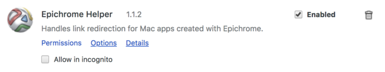
And choose the default browser to open URLs.
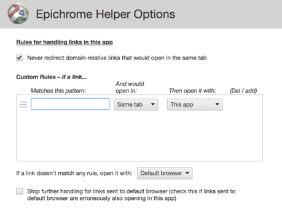
# iOS camera bookmarks
# Sardinia travel bookmarks
- Alghero.
- Baja Sardinia.
- Budoni.
- Cala Goloritze, Sardinia.
- Castelsardo (gifts maybe?).
- Food: Maialetto sardo (Pig), Sebadas, Pardula, Papassinas, Pani e sapa.
- L'Asinara boat trip (abandoned penitentiary).
- La Pelosa beach.
- Nuraghe.
- Porto Cervo.
- Porto Torres.
- San Teodoro.
- Stintino (fishing port).
- Zedda e Piras vinyards (Alghero).
# Open closest build file in Emacs
Whether it's Makefile, SConstruct, BUILD, or your favorite build file, chances are you have to tweak it from time to time. ar/open-build-file searches your current and parent directories to find a build file.
(defvar ar/project-file-names '("Makefile" "SConstruct" "BUILD")) (defun ar/parent-directory (path) "Get parent directory for PATH." (unless (equal "/" path) (file-name-directory (directory-file-name path)))) (defun ar/find-upwards (path filename) "Search upwards from PATH for a file named FILENAME." (let ((file (concat path filename)) (parent (ar/parent-directory (expand-file-name path)))) (if (file-exists-p file) file (when parent (ar/find-upwards parent filename))))) (defun ar/open-closest (filename) "Open the closest FILENAME in current or parent dirs (handy for finding Makefiles)." (let ((closest-file-path (ar/find-upwards (buffer-file-name) filename))) (when closest-file-path (message closest-file-path) (switch-to-buffer (find-file-noselect closest-file-path))) closest-file-path)) (defun ar/open-build-file () "Open the closest project file in current or parent directory. For example: Makefile, SConstruct, BUILD, etc. Append `ar/project-file-names' to search for other file names." (interactive) (catch 'found (mapc (lambda (filename) (when (ar/open-closest filename) (throw 'found t))) ar/project-file-names) (error "No project file found")))
# Create iOS static fat libraries
Have separate static libraries for different iOS architectures? Stitch 'em up into a single fat library using with lipo:
$ lipo -create libOne_i386.a libOne_x86_64.a libOne_armv7.a libOne_arm64.a -output libOne.a
# Settling scores with an org table
Recently kept track of expenses between a group of us. To settle the scores, I emailed an exported HTML table from an org file. This was simple enough and required no external viewer from recepients. The org table, in all its textful glory, looked as follows…
| Date | Item | Charge | |------------------+----------------+----------| | [2015-06-18 Thu] | Cash | 20.00 | | [2015-07-11 Sat] | Lucky 7 | 42.97 | | [2015-07-13 Mon] | Santa Maria | 32.00 | | [2015-07-12 Sun] | Tayyabs | 46.00 | | [2015-07-13 Mon] | The Brass Rail | 39.00 | | [2015-07-13 Mon] | Underground | 10.00 | | [2015-07-10 Fri] | Cash | 20.00 | | [2015-07-13 Mon] | Cash | 20.00 | | [2015-07-14 Tue] | Cash | 20.00 | |------------------+----------------+----------| | | total | £ 249.97 | #+TBLFM: @11$3=vsum(@2..@10);£ %.2f
…while the exported HTML below could be easily pasted on to an email.
| Date | Item | Charge |
|---|---|---|
| Cash | 20.00 | |
| Lucky 7 | 42.97 | |
| Santa Maria | 32.00 | |
| Tayyabs | 46.00 | |
| The Brass Rail | 39.00 | |
| Underground | 10.00 | |
| Cash | 20.00 | |
| Cash | 20.00 | |
| Cash | 20.00 | |
| total | £ 249.97 |
# Recognize new password prompts in Emacs shell
At some point, you may come across a trusted command-line utility prompting you for a password, and Emacs shell happily displaying each typed character to the nearby-world to see. Luckily, you can train Emacs to recognize new password prompts and hide the typed characters in modes deriving from comint. Append the password prompt REGEXP:
(setq comint-password-prompt-regexp (concat comint-password-prompt-regexp "\\|" "Password for red alert:"))
# Bosnia and Hercegovina travel bookmarks
# Ireland travel bookmarks
- Skellig Michael.
- Fishy Fishy in Kinsale: beautiful town on the water.
- Belfast.
- Giant's Causeway.
- Greyhound dog races at Shelbourne Park.
- Old library chamber, Trinity College, Dublin.
# Pizza in London
Not tried these yet. Taking note:
- Bravi Ragazzi (Streatham).
- Homeslice (Covent Garden).
- Lord Morpeth (Hackney).
- Santa Maria (Ealing).
- Voodoo Ray's (Dalston).
- Well Kneaded Wagon (Date-dependent location).
# mp4 to gif
Converting mp4 to gif is handy for posting short screencasts. You can convert to gif using ffmpeg and optimize with imagemagick. To install:
apt-get install ffmpeg imagemagick (linux) brew install ffmpeg imagemagick (Mac)
Convert to gif:
ffmpeg -i my.mp4 -pix_fmt rgb24 -r 5 my.gif
Optimize with:
convert -dither none -layers Optimize my.gif my_optimized.gif
UPDATE: There's also licecap and subsequently optimize with:
cat source.gif | gifsicle --colors 256 --optimize=3 --delay=15 > target.gif
UPDATE: Also consider for .mov:
ffmpeg -i in.mov -pix_fmt rgb24 -r 10 -f gif - | gifsicle --optimize=3 --delay=3 > out.gif
# Keyboards bookmarks
# United States travel bookmarks
# Lebanon travel bookmarks
# Slovenia travel bookmarks
# Belgium travel bookmarks
# Fishing with Emacs
OK not quite, but having recently learned about C-M-w (append-next-kill), I used it in a keyboard macro to fish out matching lines. This is similar to flush-lines, except the kill ring is also populated. This is handy, if you need the flushed lines. Here's an example.

Here's the equivalent in Emacs lisp:
(defun flush-kill-lines (regex) "Flush lines matching REGEX and append to kill ring. Restrict to \ region if active." (interactive "sFlush kill regex: ") (save-excursion (save-restriction (when (use-region-p) (narrow-to-region (point) (mark)) (goto-char 0)) (while (search-forward-regexp regex nil t) (move-beginning-of-line nil) (kill-whole-line)))))
# California travel bookmarks
# Rebind caps lock to control key on Mac OS X
Let's see if this one sticks. I'll give caps lock as control a try. Rebinding the keys on Mac OS X is easy enough:

System Preferences -> Keyboard -> Keyboard Tab -> Modifier Keys…
# Searchable ebooks in Emacs
If you haven't bought Mastering Emacs by Mickey Petersen, you should. It's a wonderful source of Emacs tips. Having just finished the ebook on my Kindle, I was keen to go back and fish out some of that newly found wisdom. My immediate reaction was to figure out a way to make the ebook searchable from Emacs.
The ebook is available in epub and pdf format. Though Emacs's docview is super handy for viewing pdf's, searching didn't feel as comfortable as searching in org mode. The epub, on the other hand, proved useful. Pandoc can easily convert from epub to org.
pandoc --from=epub --to=org mastering-emacs.epub > mastering-emacs.org
After a some tidying (mostly removing BEGIN_HTML/END_HTML blocks and adding TITLE/AUTHOR), the resulting org file is surprisingly clean and easy to search/navigate. helm-swoop and helm-org-in-buffer-headings are great for that.


# Portugal travel bookmarks
- Avenida dos Platanos.
- Boca do inferno.
- Cabo da Roca.
- Casa dos passarinhos (Steak on hot stone, tuna steak with “mirandesa” sauce, monkfish masada).
- Cascais - Guincho.
- Cervejaria Ramiro (seafood restaurant in town).
- Eduard 7th park.
- Estoril.
- Fox Trot (bar).
- Ilha da Culatra (good for families).
- Ilha da Tavira (good for food @ Portas do Mar).
- Ilha Deserta (seafood as Estaminé).
- Jeronimos Monastery (Lisbon).
- Lisbon Castle.
- Mouro's castle (Sintra).
- Mouro's castle.
- Pasteis de Belem (Lisbon).
- Pastelaria piriquita eat queijadas de sintra.
- Pasteleria Piriquita (Sintra).
- Pavilhao Chines (bar).
- Pena's Pallace (must see if you go to sintra)
- Pena's Pallace (Sintra).
- Pensao do Amor (bar).
- Praça do comercio.
- Quinta da Regaleira
- Quinta da Regaleira (Sintra).
- Sintra village
- Sintra.
- Stop do bairro (tamboril rice, prawn curry, and seafood rice).
- Surfcastle.
- Sé (Lisbon Cathedral).
- The best beaches in Portugal's Algarve.
- Torre Belem (Lisbon).
- Web Summit Ladies Craft Night - Tote Bag Embroidery Workshop Tickets, Tue, Nov 6, 2018 at 7:00 PM (Eventbrite).
# Bulgaria travel bookmarks
# Presenting bookmarks
# Bali travel bookmarks
- Pura Lempuyang, Bali.
# WWDC app for OS X
Guilherme Rambo created a great OS X OS X app for viewing WWDC content. Just installed it. Super handy. Thanks. Installing as simple as:
$ brew cask install wwdc
# Debugging Objective-C reference cycles
Overriding retain/release/autorelease may be handy while debugging:
- (instancetype)retain { NSLog(@"%p, retain", self); return [super retain]; } - (oneway void)release { NSLog(@"%p, release", self); [super release]; } - (instancetype)autorelease { NSLog(@"%p, autorelease", self); return [super autorelease]; }
# London grub
Beyond the hype, buzz, and pricey gimmicks… Places to eat in London:
- Antipode.
- Arang.
- Bone Daddies.
- Gelupo.
- Grind.
- Holy Cow.
- Kerbisher and Malt.
- Kulu Kulu (South Ken).
- Le Relais de Venise.
- Lucky 7's.
- Royal China.
- Shree Krishna Vada Pav.
- Sri Suwoon.
- Tayyabs.
- The Cow.
- Tonkotsu.
# My working playlist
It's been a while since I spotted The Ultimate Music Collection for Getting Work Done. Since then, I've been on the lookout for music to work to. Some favorites:
- B. Fleischmann - I'm Not Ready For The Grave Yet.
- B. Fleischmann - Pop Loops For Breakfast.
- B. Fleischmann - Sidonie.
- B. Fleischmann - The Humbucking Coil.
- B. Fleischmann - The Tired Sounds of Stars of the Lid.
- B. Fleischmann - Welcome Tourist.
- Bexar Bexar - Haralambos.
- Budhaditya Mukherjee - Sitar Recital.
- Daft Punk - TRON: Legacy.
- General Fuzz - Soulful Filling.
- Inception (Music From The Motion Picture).
- ISAN - Lucky Cat.
- ISAN - Plans Drawn In Pencil.
- Jayanthi Kumaresh - Mysterious Duality.
- Mogwai - Les Revenants.
- Moondog - Big Cat.
- Moonrise Kingdom (Original Soundtrack).
- Nico Muhly - Drones.
- Paul Leonard-Morgan - Limitless (Original Motion Picture Soundtrack).
- Robert Scott Thompson - Upon the Edge of Night.
- Ryan Miller - The Kings of Summer (Jordan Vogt-Roberts' Original Motion Picture Soundtrack).
- Stars of the Lid - And Their Refinement of the Decline.
- Start of the Lid - Gravitational Pull vs. The Desire for an Aquatic Life.
- Terry Riley - A Rainbow In Curved Air; Poppy Nogood and the Phantom Band.
- Trent Reznor & Atticus Ross - The Social Network (Soundtrack from the Motion Picture).
- Trentemøller - Into The Great Wide Yonder.
- Tycho - Awake.
- Various Artists - Singing Strings From India.
- Whiplash (Original Motion Picture Soundtrack).
- Youth Lagoon - The Year Of Hibernation.
# Xcode bookmarks
# Costa Rica travel bookmarks
# Australia travel bookmarks
- Australia's best food experiences: state by state.
- Best Queensland island escapes for small budgets.
- Des and Debi O’Tooles Honey.
- Fish and chips at Bondi beach.
- Tasmania: the isle that's wild at heart.
- The Butler Potts Point (bar & restaurant).
- Tree Top Walk (Walpole, Australia): Top Tips Before You Go - TripAdvisor.
# Samoa travel bookmarks
# Norway travel bookmarks
- Atlantic Road.
- Bergen (check out colorful wooden houses).
- Bergen railway (Bergen-Oslo): 300 miles of beautiful Norwegian scenery.
- Lofoten Islands.
- Norwegian Air (cheap flights between all the
- Olden.
- Reine.
- Sakrisøy, Lofoten Islands.
- Spitsbergen.
# Los Angeles travel bookmarks
# Mastering Emacs is out
Emacs is amazingly alive. New packages are regularly listed on melpa and a new book just came out: Mastering Emacs by Mickey Petersen.

# South Carolina travel bookmarks
# Colorado travel bookmarks
# Bash bookmarks
# restclient.el
Installed Pashky's restclient.el Emacs package. Super helpful when trying out REST APIs.

# Seatle travel bookmarks
# Berlin travel bookmarks
# Skeuomorph
From Wikipedia, skeuomorph ˈskjuːəmɔrf is a derivative object that retains ornamental design cues from structures that were necessary in the original. Examples include pottery embellished with imitation rivets reminiscent of similar pots made of metal and a software calendar that imitates the appearance of binding on a paper desk calendar.
# define-word
Installed Abo Abo's define-word Emacs package. A handy package to define words at point.

# Flushing empty lines in Emacs
Via masteringemacs.org, removing blank lines in a buffer:
M-x flush-lines RET ^$ RET
# Regex bookmarks
# Write to temp iOS snippet
NSString *tempDir = NSTemporaryDirectory(); NSLog(@"%@", tempDir); NSString *dataFilePath = [tempDir stringByAppendingPathComponent:@"my.file"]; [data writeToFile:dataFilePath atomically:YES];
# Greece travel bookmarks
# Sri Lanka travel bookmarks
# Switzerland travel bookmarks
# Thailand travel bookmarks
# Madagascar travel bookmarks
# Hong Kong travel bookmarks
# Barcelona travel bookmarks
# Iceland travel bookmarks
- An Iceland travel log.
- Apartmenthouse.is for local flats.
- Blue lagoon spa.
- citywalk.is: Free walking tour.
- Design March.
- Drive it yourself: The Snæfellsnes peninsula.
- Efstidalur: farm to table restaurant.
- Eight must-see spots in Iceland's wild west.
- Fridrikv restaurant.
- Gangleri outfitters.
- Golden circle's waterfalls and geysers.
- grillmarkadurinn.is restaurant.
- Horse farm hotel.
- Hotel Budir.
- How to have a budget break in iceland.
- Iceland itinerary.
- Lebowski Bar seriously?
- Noodle Station.
- Pink Iceland tours.
- Reykjavik Apartment Hotel – Accommodation in City Centre (swanhouse.is).
- Reykjavik City Breaks (Book now with British Airways).
- Sandholt.
- South coast's waterfalls and caves.
# Building clang-format
Based on instructions from Building clang-format and friends on OSX Mountain Lion.
#!/bin/bash set -o nounset set -o errexit # Based on instructions from: # http://blog.hardcodes.de/articles/63/building-clang-format-and-friends-on-osx-mountain-lion readonly LLVM_DIR_PATH='/tmp/llvm' update_repo() { if [[ ! -d $1 ]]; then git clone $2 else cd $1 git pull cd .. fi cd .. } update_all_repos() { update_repo "llvm" "http://llvm.org/git/llvm.git" pushd "${LLVM_DIR_PATH}/llvm/tools" update_repo "clang" "http://llvm.org/git/clang.git" popd cd "../../${LLVM_DIR_PATH}/llvm/tools/clang/tools" update_repo "clang-tools-extra" "http://llvm.org/git/clang-tools-extra.git" cd "../../.." } build_clang() { mkdir -p clang mkdir -p build cd clang ../llvm/configure --enable-libcpp --enable-cxx11 --enable-debug-symbols=no --enable-optimized --prefix="${LLVM_DIR_PATH}/build" make install } mkdir -p $LLVM_DIR_PATH cd ${LLVM_DIR_PATH} update_all_repos build_clang
Bonus: use clang-format-configurator.
# iOS Auto Layout bookmarks
# Programmatic iOS Auto Layout
Basic iOS auto layout usage. See Adopting Auto Layout and Visual Format language for reference.
- (instancetype)initWithFrame:(CGRect)frame { self = [super initWithFrame:frame]; if (self) { // Disable autoresizing mask translation for parent. self.translatesAutoresizingMaskIntoConstraints = NO; _subview1 = [[UIView alloc] init]; // Disable autoresizing mask translation for subview. _subview1.translatesAutoresizingMaskIntoConstraints = NO; _subview1.backgroundColor = [UIColor redColor]; [self addSubview:_subview1]; // Creates a dictionary of bindings to be used in visual format. NSDictionary *viewBindings = NSDictionaryOfVariableBindings(_subview1); // H: horizontal layout // |-50- spacing in relation to superview // [_subview1(==50)] subview1's width [self addConstraints:[NSLayoutConstraint constraintsWithVisualFormat:@"H:|-50-[_subview1(==50)]" options:0 metrics:nil views:viewBindings]]; [self addConstraints:[NSLayoutConstraint constraintsWithVisualFormat:@"V:[_subview1(==50)]" options:0 metrics:nil views:viewBindings]]; } return self; }
Also consider:
- A UIView Subclass should implement intrinsicContentSize.
- A UIView Subclass should never add constraints on neither itself (ie. self) nor superview.
References
# Japan travel bookmarks
- 21 free things to do in Tokyo.
- 6 Tokyo Travel Tips to Help You Get Around the City | Tokyo Weekender.
- 7 day Japan Rail pass (first class?), possibly only sold outside Japan.
- 80/20 Japanese by Richard Webb - Publishizer.
- Snapshots of Tokyo’s vivid street life (Hacker News).
- A Guide to the regional ramen of Japan.
- A Moss Girl’s Guide to Japanese Moss Viewing.
- A no-sushi guide to food in Japan.
- A trip to Japan (Quora answer).
- Arashiyama Bamboo Grove.
- Autumn Leaves in Hokkaido.
- BBC - Travel - Japan’s special take on a packed lunch.
- Drinking Japan.
- Five Best: Japanese Ryokan.
- Fuji Q Highland (rollercoaster theme park). Check out haunted hospital.
- Furano, Hokaido.
- Going to Kyushu, Japan? Why Visiting Yakushima is Worth it - The Ruby Ronin.
- Guest houses: Kazariya, Rakuza, Musubian.
- Hiiragiya ryokan.
- Himeji Castle.
- Hokkaido summer flowers.
- Hypermedia (internal travel website).
- jalan.net (travel booking site).
- Japan guide.
- Japan Info.
- Japan is launching a program that will give away abandoned homes - INSIDER.
- Japan Rail Pass.
- Japan Study Program.
- JAPAN TRAVEL DATA 15DAYS, 3.5GB on 4G/LTE- NANO SIM.
- Japan's glut of abandoned homes: Hard to sell but bargains when opportunity knocks (The Japan Times).
- Japanese beaches.
- Japanese Foods Encounter Like No Others (food search).
- Japanese rule of 7.
- Kawachi Fujien 河内藤園 (Kawachi Wisteria Garden).
- Koya Bound – Eight Days on the Kumano Kodo | Hacker News.
- Koyasan (needs booking).
- Lots of goodies. Bamboo forest, oh my.
- Monument in front of the Shin-Yatsushiro Station.
- Nagakushiyama park.
- Nagoya.
- Natadera Temple in winter.
- Okinawa: secrets for a long and happy life.
- Onsen.
- Quora: What are some of Japans best kept secrets?
- Saitamaya: The Master of Grilled Meat - YouTube.
- Table of Content for japan2013.
- Table of Content for japan2014.
- Table of Content for japan2015.
- TAKAZAWA Candle (or look for ikaragata shape candle).
- The village of living water.
- Things to look out for in Japan (Quora).
- Try out sukiyaki.
- Uncharted Tokyo.
- Vitra | The Hill of the Buddha.
- Zao Fox Village.
# Kyoto travel bookmarks
- Eating My Way Through Nishiki Market, Kyoto | Ever In Transit.
- Fushimi Inari Temple: 4KM mountain trail lined with bright orange shinto gates.
- Golden Pavillion (macha and biscuits at tea house).
- Hakone (day trip for hot baths), see Yuryo spa. Also the pirate boat.
- Kinkakuji Temple.
- Kiyomizu Temple.
- Kuramadera Temple & Kibune Shrine: More peaceful shrine.
- Kyoto itineraries.
- Kyoto travel tips (doc).
- Kyoto walking maps.
- Kyoto's train station itself.
- Nijo-Jo’.
- Nishiki Market: Awesome market. Some say better than Tsukiji.
- Ryokan ("kaiseki" meals).
- Ryōan-ji (竜安寺).
- Sanjusangendo.
- Things to do in Kyoto, Japan.
- Walking courses (Google maps).
- WaRaiDo Nighttime tour.
- Origami master and school http://www.orizurusalon-yume.com info@orizurusalon-yume.com
# Tokyo travel bookmarks
- 5 alternative things to do in Tokyo (by globalhelpswap).
- Akasaka area (N/E of Roppongi).
- Akasaka Sagamiya (also Mamekan, established in 1895).
- Akihabara: Electronics district, arcades and comic stores.
- Asakusa (tourist spot). Kaminarimon, Nakamise (oldest shopping street in Japan). Sensoji Temple.
- Asakusa hotel.
- Asakusa Shrine: Shinto shrine and market.
- Bar Epilogue.
- Bar Odin.
- Benten, Taito - 3-21-8 Asakusa, Ueno, Asakusa (Buckwheat noodles shop).
- Bentomi (Sushi).
- Coffee Tengoku, Asakusa (best hotcakes/pancakes). Noting is premade. After 12 years, best hotcakes.
- Daiwasushi (food). An account here.
- Dorayaki (in Ukenbukuru). Seijuken is long established in Ningyocho.
- Doteno-Iseya 土手の伊勢屋: 127-year old Tempura.
- Eateries around Takadanobaba eki
- Ebisu (area for izakaya experience, drink/chat with bartender). Look for Ebisu Yokocho.
- Fish market (6am sushi).
- Five of the worst areas to live in and around Tokyo | SoraNews24.
- Ghibli museum (book in advance or try lawson).
- Ginza.
- Ginzakyuubee (food).
- Golden Gai (lots tiny bars).
- How to spend a magical Christmas in Tokyo - Voyagin blog.
- https://www.timeout.com/tokyo/restaurants/tokyo-coolest-kakigori
- Imperial Palace: Book to go inside. Beautiful park, great for pictures.
- Irie known (sweet shop) for Mamekan. In Monzen-Nakacho.
- Isozushi (food).
- Kaiden-don, near tsukiji (Sushi).
- Kajitsuen Libre. Peach Parfait. Fresh fruit.
- Kinozen restaurant for Matcha Bavarian cream (matcha bavaroa). Kagurazaka. Check out the backstreets.
- Kushikatsu restaurant in Golden Gai, a karaoke booth in Ebisu, or drifting through the back alley izakayas of Akabane.
- Menya Musashi and Fuunji are both generally very well regarded and about a 5-7 minute walk from the SW part of Shinjuku station.
- Mikimoto building in Ginza.
- Mori Art museum.
- Musashiya ramen.
- Nezu museum.
- Okonomiyaki in Tokyo.
- Omoide yokocho: Alleyway next to Shinjuku station. Lots of yakitori restaurants.
- Omotesando Koffee (coffee and baked custard slice).
- Omotesando side streets.
- Pound cake from Patisserie Gondola in Kudanue.
- Roppongi.
- Savarin (brioge-based, of french origin) in Yokohama. Cafe Recherche.
- Seafood street south of Ueno eki
- Secret snapshots of Tokyo vivid street life.
- Shibamata: Snacking and Sightseeing in Tokyo’s Old Edo Neighborhood.
- Shibuya Crossing: Largest pedestrian crossing in the world.
- Shimokitazawa (Shimokita for short). Bohemian, vintage shopping.
- Shimokitazawa (thirft stores, music bands, pubs, and cafes).
- Sukiyabashi Jiro.
- Sushi dai (Sushi, long queue, maybe turisty).
- Sushi Kanesaka.
- Sushi places around Tsukiji market in the morning (much better than the market visit itself, these days)
- Sushi Saito.
- Sushidai (food).
- Sushitsu (food).
- Sutekihausukatsura.
- Takaosan (Mount Takao).
- Tenkazushi (food).
- The whole of Kabukicho (area in-between Shinjuku station and Shin-Okubo)
- Things to Do in Tokyo Japan - Sunday Spotlight.
- Tokyo in winter: what to see, do and eat (Lonely Planet).
- Tokyo Municipal Government building: Only for observation deck with view to Fuji (if clear day).
- Tokyo on a budget: tips for making your yen go further (Lonely Planet).
- Tokyo play blog.
- Tokyo Salaries: all you need to know.
- Tokyo station: Friendly JR office (english spoken). They help book all trips/tickets/reservations.
- Tokyo Station: Massive station. Lots of restaurants and shops (check out ramen street).
- Tokyo Travel Tips: 5 Things You Need In Japan | Coffee and Passport.
- TokyoCheapo.
- Tokyu Hands and Loft (shops in Shibuya).
- Toritake (yakitori at Shibuya).
- Tsukiji Fish Market calendar.
- Tsukiji Fish Market: Sushi bars and food vendors (get there early, visitor numbers restricted).
- Umemura in Asakusa (also Mamekan).
- Yurakucho Yakitori Alley
- 婁熊東京 (raw and grilled pork).
- 酒友 (Sake & good Shabushabu), Roppongi.
# UK travel bookmarks
# Development quotes
- If your backlog is exploding the problem is not that your developers are slow, but that your business model is not based on reality.
- If you lose out on object allocation, you still win by avoiding expensive re-renders and re-calculations.
- Duplication is far cheaper than the wrong abstraction (prefer duplication up to a point).
- Choosing an appropriate design to duplication avoid might benefit from more examples to see patterns in. Attempting premature refactoring risks selecting a wrong abstraction.
- Patterns failed, why we should case.
# Development philosophy
- Boyscout rule: Leave campground cleaner than found.
# Spain travel bookmarks
# Meet up bookmarks
# Plantuml example
Played with Plantuml. Convenient for generating UML diagrams from text. Here's the Language Reference Guide. Here's an example:
@startuml
abstract class Singer {
abstract void sing()
void Dance()
}
skinparam monochrome true
Singer <|-- PopSinger
Singer <|-- SalsaSinger
class PopSinger {
void sing()
}
class SalsaSinger {
void sing()
}
@enduml

Install plantuml on Mac OS X:
brew install plantum
Generating diagram:
$GRAPHVIZ_DOT=~/homebrew/bin/dot java -jar path/to/plantuml.8018.jar diagram.plantuml
ps. Installation and verification gist.
ps2. More handy UML examples in this fork.
# Helm-describe-helm-attribute
Writing A Spotify Client in 16 Minutes is fantastic for picking up helm and Emacs lisp tips. Of interest helm-describe-helm-attribute, second to the awesomeness of helm-spotify integration.
<iframe width='420' height='315' src='https://www.youtube.com/embed/XjKtkEMUYGc' frameborder='0' allowfullscreen> </iframe>
# Youtube videos in your org html export
Sacha Chua and John Wiegley posted a wonderful video on Emacs lisp development tips. Embedding the following raw HTML using #+BEGIN_HTML/#+END_HTML:
<iframe width="420" height="315" src="https://www.youtube.com/embed/QRBcm6jFJ3Q" frameborder="0" allowfullscreen> </iframe>
results in an embedded video when exporting your org file:
<iframe width="420" height="315" src="https://www.youtube.com/embed/QRBcm6jFJ3Q" frameborder="0" allowfullscreen> </iframe>
# .net bookmarks
# UK property bookmarks
- Commute from (find property based on potential commute).
- Mapumental Property (find property by travel time).
# Git commit message style
Adopted Tim Pope's Git commit message style. Also enabled Emacs's git-commit-training-wheels-mode:
(use-package git-commit-training-wheels-mode :ensure t :commands (git-commit-training-wheels-mode)) (use-package git-commit-mode :ensure t :config (add-hook 'git-commit-mode-hook 'git-commit-training-wheels-mode) :commands (git-commit-mode))
Another great post by Chris Beams.
# fci-mode and org-html-export-to-html bug
Having enabled fci-mode in most programing modes, org-html-export-to-html now exports an additional unicode character in source blocks. This thread has a workaround:
(defun org-html-fontify-code (code lang) ;; ... (funcall lang-mode) ;;;;;;;;;;;;;;;;;;;;;;;;;;;;;;;;;;;;;;;;;;;;;;;;;;;;;;;;;;;;;;;;;;;; (when (require 'fill-column-indicator nil 'noerror) (fci-mode -1)) ;;;;;;;;;;;;;;;;;;;;;;;;;;;;;;;;;;;;;;;;;;;;;;;;;;;;;;;;;;;;;;;;;;;; (insert code) ;; ...
# Try cocoapods out
$ pod try POD_NAME
# Cornwall travel bookmarks
# Austria travel bookmarks
# Cinnamon desktop run dialog
Note to self. Open with Alt-f2.
# Books for 2015
# Ayahuasca bookmarks
# Emacs init.el bookmarks
- Adam Schwartz's init.
- Andrew Gwozdziewycz's init.el.
- Andrew Kensler's init.el.
- Andrew's .emacs.
- Anler Hernandez's literate config.
- Chen Bin's init.el.
- Clinton Ryan's init (JS config).
- daviderestivo/emacs-config (clean/macOS).
- dotfiles/config.org at master · iocanel/dotfiles · GitHub (mu4e config).
- Eric James Michael Ritz.
- GitHub - FIXME rememberYou/.emacs.d: Personal GNU Emacs configuration.
- GitHub - Fuco1/.emacs.d: My emacs config.
- GitHub - zamansky/emacs.dz: Awesome emacs config files.
- Grant Rettke's literate config.
- Hardcore Freestyle Emacs.
- Huseyin Yilmaz.
- Ivan Malison's Emacs init.
- Ivan Malison's init.el.
- John's Emacs Config (mu4e and ledger usage).
- Justin Abrahms: My Emacs Configuration.
- Mark Sparks's init.el.
- Marten Lienen's init.el.
- Mathew Lee Hinman's Emacs settings file.
- Mathieu Marques's wonderful literary config (uses tern for Javascript).
- Rinat Abdullin's literary config.
- Temacco's init.
- Wasamama's extensive init TODO .
- zzamboni.org | My Emacs Configuration, With Commentary.
- Étienne Deparis's Emacs Main Initialization File.
# CSS vertical align using flex
Codepen snippet:
div{ height: 200px; background: #ccc; display: flex; justify-content: center; align-items: center; } p{ margin: auto }
# London diving schools
- London Diving School. Not heard good comments.
- Dive Wimbledon. Heard ok comments.
- Clidive is a BSAC club (amateur organisation). Not commercial but may take longer.
- Sublime Diving. Heard good comments.
- Oyster Diving. Pool in cetral London. Good comments.
- SS Thistlegorm mentioned as a memorable site.
- Many suggest to get certified elsewhere. Perhaps Egypt via Poseidon Divers.
# Helm buffer URLs
Venturing into Emacs lisp and Helm. Here's a go at listing all URLs in current buffer.
(require 'goto-addr) (defun ar/helm-buffer-url-candidates () "Generate helm candidates for all URLs in buffer." (save-excursion (goto-char (point-min)) (let ((helm-candidates '()) (url)) (while (re-search-forward goto-address-url-regexp nil t) (setq url (buffer-substring-no-properties (match-beginning 0) (match-end 0))) (add-to-list 'helm-candidates (cons url url))) helm-candidates))) (defun ar/helm-buffer-urls () "Narrow down and open a URL in buffer." (interactive) (helm :sources `(((name . "Buffer URLs") (candidates . ,(ar/helm-buffer-url-candidates)) (action . (lambda (url) (browse-url url)))))))
# Doh! undo last git commit
$ git reset --soft HEAD~1
# Resetting variables using defvar
Want to re-evaluate defvars and modify variables? eval-defun (bound to C-M-x) can help. From the manual:
If the current defun is actually a call to `defvar', then reset the variable using its initial value expression even if the variable already has some other value. (Normally `defvar' does not change the variable's value if it already has a value.) Treat `defcustom' similarly.
# Broken Xcode plugins?
Some Xcode plugins stopped loading after updating Xcode. Ensure the latest DVTPlugInCompatibilityUUIDs is added to the plugin's Info.plist. Get from:
$ defaults read \
/Applications/Xcode.app/Contents/Info DVTPlugInCompatibilityUUID
Additional suggestions as Stack Overflow.
# Born to Run references
References from reading Christopher McDougall's Born to Run:
- Chi running.
- Chia and pinole. Random recipes here.
- Heritage Seeds.
- Ken Mierke’s Evolution running.
- Pose method.
- Quotes, references, videos, etc. at ultimate paleo guide.
Recipe by Megan Mignot, based on book references:
Mama Tita’s Pancakes
- 1 ½ cups cooked brown rice
- 1 cup coconut milk
- 2 ripe bananas
- 1 tablespoon honey
- ½ cup white cornmeal
- 2 teaspoons baking powder
# Org tips from 2015-03-18 Emacs hangout
Lots of great tips in Emacs Hangout 2015-03-18. Favorites:
- Private org drawer to prevent export:
:PRIVATE: My super duper secret text I don't want to export. :END:
- C-c C-p/C-c C-n Jump over sections.
- (setq org-hide-leading-stars t).
- (org-bullets-mode).
- (org-refile).
- C-u (org-refile) jumps, no refile.
- (helm-org-in-buffer-headings).
# Food bookmarks
# Ethiopia travel bookmarks
# China travel bookmarks
- 7 first-timer fails to avoid on your trip to Beijing.
- Beijing on a budget.
- Chinese cities you've never heard of.
- Ctrip for hotels. Stick to high-rated only.
- Essential regional cuisine of China.
- Fenghuang ancient town.
- Hallelujah Mountains.
- Houhai Lake (Beijing). Miscellaneous bars.
- Jiuzhaigou nature reserve.
- Luotuofeng peak, Sichuan.
- Mount Huashan.
- Mount Maiji Grottoes (DuckDuckGo).
- Nan Luo Gu Xiang (Beijing). Street Food!
- Qianmen Street. Near Tiananmen Square. Artifact shopping and famous food.
- Rock pools.
- Shanghai Street Food #7 Jiān Bǐng 煎餅.
- Shenzhen (Hong Kong). The worlds manufacturing ecosystem.
- Suspended Temple of Mt. Hengshan.
- The essential guide to backpacking China's silk road.
- What are some must-try foods when visiting China? (Quora).
- Zhangjiajie National Forest Park.
# South Korea travel bookmarks
# Sharing on iOS
- UIActivityViewController.
- Use completionWithItemsHandler on iOS 8.
- Sample:
NSString *title = @"Sharing on iOS bookmarks."; NSURL *url = [NSURL URLWithString:@"http://xenodium.com/#sharing-on-ios"]; UIImage *image = [UIImage imageNamed:@"beautiful-image"]; UIActivityViewController *controller = [[UIActivityViewController alloc] initWithActivityItems:@[title, url, image] applicationActivities:nil]; // self being a UIViewController. [self presentViewController:controller animated:YES completion:nil];
- Sharing through Mail app on simulator isn't supported.
viewServiceDidTerminateWithError: Error Domain=_UIViewServiceInterfaceErrorDomain Code=3 "The operation couldn’t be completed. (_UIViewServiceInterfaceErrorDomain error 3.)" UserInfo=… {Message=Service Connection Interrupted}
- Sharing through Mail app on device is OK.
- WWDC 2014 Creating Extensions for iOS and OSX, Part 1.
- Share Extensions talk by Guy Fullerton.
- Usually view controllers in addition to plist.
- CFBundleDisplayName.
- NSExtendion.
- NSExtensionAttributes.
- NSExtensionActivationRule.
- NSExtensionAttributes.
- SLComposeServiceViewController.
- UIActivityViewController.
- Share Extensions talk by Guy Fullerton.
- WWDC 2014 Creating Extensions for iOS and OSX, Part 2.
- Want to a share URL to App Store? See Technical Q&A 1633.
# San Francisco travel bookmarks
# Istanbul travel bookmarks
- Altan Şekerleme (turkish delight shop).
- Cheap eats in Istanbul's Bazaar District.
- Findikli rainbow stairs.
- Historic neighborhood of Arnavutkoy in Istanbul.
- Istanbul Food: after the perfect bite.
- The rise of Karakoy: Istanbul's hippest neighbourhood.
- Uskudar Fish Market.
# Rome travel bookmarks
# Italy travel bookmarks
- 22 Towns in Italy That Are Almost Too Perfect Looking.
- Abbazia di Monte Oliveto Maggiore.
- Amalfi coast's Furore beach.
- Boboli Gardens, Florence.
- Braie lake.
- Caffe Meletti.
- Cinque Terre.
- Emilia Romagna. (foood!).
- Fixe small towns in Italy.
- Italy's six best road trips.
- Live the good life: 12 local experiences on the Amalfi Coast.
- Manarola.
- Milan - Deus cafe.
- Milan - Gelato joints.
- Milan - Il mangione to find restaurants.
- Milan - Mercato Metropolitani.
- Milan - Navigli and eat at "el brellin".
- Milan - Taveggia for hot chocolate.
- Milan - Where to go for aperitivo in Milan.
- Montalcino, and Brunello wine.
- Palace of Venaria.
- Piazza dei Miracoli.
- Piedmont.
- Pienza, Tuscany.
- Rabbit beach.
- Re di Macchia, restaurant in Montalcino.
- San Galgano, Tuscany.
- San Gimignano, Tuscany.
- San Lorenzo leather market.
- Skiing in Italy: find your perfect resort.
- Volterra, Tuscany.
- Abbruzzo's Sulmona: one of the oldest towns in the area and home to the Latin poet Ovid, confetti (sugared almonds) and arrosticini (barbecued lamb skewers).
# Emacs lisp debug on entry
Wanted to track down which package was enabling ido-mode on my behalf. debug-on-entry to the rescue. Pass the method name in question and you're good to go.
(debug-on-entry 'ido-mode)
When done, use cancel.
(cancel-debug-on-entry 'ido-mode)
# Burma travel bookmarks
- Bagan and Inle lake are the "touristy" areas.
- Balloons over Bagan.
- For Bagan, get bicycles.
- Inle lake guided boat tour.
- Ngapali beach.
- Shwesandaw at sunset.
- zyklusdiewelt's Myanmar's photos.
# OS X Screencasts to animated GIF
- Alex Dergachev has a great howto for generating animated GIF out of OS X Screencasts.
- Of interest GIF Brewery.
# Writing Xcode plugins
- Xcode-Plugin-Template from Delisa Mason/kattrali.
- Ensure DVTPlugInCompatibilityUUIDs is in Info.plist.
- Get from:
defaults read \
/Applications/Xcode.app/Contents/Info DVTPlugInCompatibilityUUID
- Luis Solanos's Xcode-RuntimeHeaders.
- Boris Bügling's Xcode-RuntimeHeaders fork.
- Building the Xcode plugin snapshots.
- Xcode Explorer enables you to explore Xcode events/notifications.
- Creating an Xcode4 plugin.
- Common Xcode plugin techniques.
- XcodeExplorer to monitor Xcode internals.
- Debugging your Xcode plugin.
# Uninstalling Alcatraz from Xcode
$ rm -rf ~/Library/Application\ Support/Developer/Shared/Xcode/Plug-ins/Alcatraz.xcplugin $ rm -rf ~/Library/Application\ Support/Alcatraz
ps. Removing all plugins:
$ rm -rf ~/Library/Application\ Support/Developer/Shared/Xcode/Plug-ins/*
# Prefill Emacs swiper with current region
The new swiper Emacs package is proving to be a great alternative to helm-swoop. Here's how to prefill with current region:
(defun ar/prefilled-swiper () "Pre-fill swiper input with region." (interactive) (if (region-active-p) (let ((region-text (buffer-substring (region-beginning) (region-end)))) (swiper region-text)) (swiper))) (global-set-key (kbd "C-s") #'ar/prefilled-swiper)
# Change macOS app icon
- Open the new icon (.icns) in Preview.
- Click on large image
- Select all (⌘-a).
- Copy (⌘-c).
- Ctrl-click on app icon.
- Select Get Info.
- Click on app icon (top-left).
- Paste (⌘-v).
- Done!


# Hack on Emacs London meetup bookmarks
- European Lisp Symposium.
- guide-key displays available key bindings.
- iplayer-el Emacs interface to the BBC's iPlayer.
- swankr REPL (swank protocol for R).
# Working with OS X and Emacs tips
From M-x all-things-emacs, Ryan McGeary's OS X/Emacs workflow.
Frequently used apps:
- 1 password.
- Choosy.
- Divvy.
- Fastscript.
- Fluid (SSB).
- Launchbar.
- Skitch (screenshots).
- te (Text expander).
Dotfiles
# Building ycmd
Build
$ git clone https://github.com/Valloric/ycmd.git $ cd ycmd $ git submodule update --init --recursive $ ./build.sh --clang-completer
Test
$ python ycmd serving on http://127.0.0.1:54265
More info
# Regular bookmarks
# Photography bookmarks
- 77 photography techniques, tips and tricks for taking pictures of anything.
- Course schedule - Digital Photography.
- ExifRenamer: Batch rename photos using exif information.
- Exposé, A simple static site generator for photoessays.
- Michael Gakuran's Gakuranman.
- OpenMV (Small - Affordable - Expandable).
- Photo Critique (Subreddit).
# Paris travel bookmarks
- Atelier Maitre Albert (known for its rotisserie chicken).
- Au Passage. Small plates in fun atmosphere.
- Berthillon Ice Cream.
- Breizh Café (traditional gallete, savory buckwheat crepes).
- Buvette Gastrotheque. Wine bar with small dishes.
- Cheri Bibi, possibly hipster, underneath Sacre Coeur, good cocktails.
- Creperie Josseline. Worth the queue. Drink Breton cider with crepes.
- Holybelly Canal Saint Martin.
- How To Spend a Culinary Weekend In Paris.
- L'Aller Retour. The place for steak-frites.
- L'Office. Wine bar/bistrot.
- Le Barav'.
- Le Petit Poucet (restaurant next to Place de Clichy, Paris).
- Le Reminet (Paris restaurant).
- Marché d'Aligre. Authentic neighbourhood market.
- Marché des Enfants Rouge. Small covered market. Eat at food stalls.
- Mosquee de Paris. City mosque. Drink mint tea at courtyard under olive trees or eat in restaurant inside. North African food.
- Musee d'Orsay.
- Paris: A Guide To Some Of The Best Cafes In Canal St. Martin.
- Pierre Herme. For great pastries and macarons.
- RATP for transport info including the "carnet" of 10 tickets.
- Rodin Museum.
- West Country Girl (crepes).
- What are the best boulangeries and patisseries in Paris for each arrondissement? (Quora).
- What are the best places to buy cheese in Paris? (Quora).
- Where are best vintage stores in Paris? (Quora).
- Where are the best flea markets in Paris? (Quora).
# Org mode bookmarks
- An Org Table Spreadsheet cheatsheet.
- Assigning ids to entries.
- Automating boilerplate in org-mode journalling.
- Beautifying Org Mode in Emacs.
- Blogging from GNU Emacs/org (with rss example).
- Blogging with Emacs org-mode.
- Blogging with Emacs org-mode.
- Creating org atom xml feed with blog-atom.sh.
- Creating scientific posters with org-mode.
- Drawing Git Graphs with Graphviz and Org-Mode.
- Export Org HTML SRC blocks as PNG files using Chrome.
- feed-builder/feed-builder.el an org/blog rss implementation.
- helm-org-rifle: Rifle through your Org buffers and acquire your target.
- Image display size in Org.
- Kevin's org notes.
- Literate DevOps with org source blocks (Howardism).
- Literate DevOps.
- Literate Programming with Org-mode.
- Literate Programming: Empower Your Writing with Emacs Org-Mode.
- Making a Poster with Org-mode (Irreal).
- Marcin Borkowski: 2018-08-18 Embedding files in Org-mode revisited.
- Multiline fontification (ie. bold) with org-emphasis-alist.
- Org mode basics.
- Org mode blogging: RSS feed.
- Org mode examples and cookbook.
- Org mode examples.
- Org Mode Habits : emacs.
- Org mode reference card.
- org-mode support for vCard export and import.
- org-web-tools: Commands and functions for retrieving web page content and processing it into and displaying it as Org-mode content..
- org/uml examples.
- Organize your life in plain text.
- OrgMode tutorial - YouTube channel.
- Querying RESTful webservices into Emacs orgmode tables (vxlabs).
- Rainer König's OrgMode YouTube tutorials.
- Ricing up Org Mode.
- Robust Notes with Embedded Code (extensive org babel usage).
- Use Emacs Org Mode and REST APIs for an up-to-date Stock Portfolio.
- Using Emacs - 24 - Org Capture 2.
- Using org-capture with org-protocol be like - Diego Berrocal.
- Writing Specs with Org-mode.
# London food backlog
Backlog
Yeast Bakery.
Pavillion Cafe.
Palm Vaults.
*
Angel
Camberwell
- TODO Sun of Camberwell (Roast beef, Yorkshire, and sticky toffee pudding).
- TODO Silk Road (Chinese, Lamb/cumin skewers).
Covent Garden
- TODO Punjab (Punjabi).
- TODO Duende (modern Spanish).
- TODO Rock & Sole Plaice (fish and chips).
- TODO Timber Yard (coffee, working).
- TODO Chicks 'n' Sours.
- TODO Jidori (chicken yakitori)
- DONE Dishoom (Indian), try Lamb raan.
- DONE Sagar (South Indian): Great food!
Islington
- TODO Delhi Grill (Indian), try chicken makhani and naan.
- TODO BabaBoom (the kebab makers)
- TODO Roots N1 (Indian).
- TODO The pig and butcher (sunday roast).
- TODO Busan BBQ (Korean meets American diner/burgers and fried chicken).
- TODO Smokehouse Islington.
King's Cross
- TODO Itadaki Zen.
- TODO German Gymnasium.
- DONE Yeah! Burger at Star of Kings.
- TODO Wing Wing (Korean fried chicken)s.
Marylebone
Mayfair
- TODO Mayfair chippy (Fish and chips).
- TODO Ikeda (Japanese).
- TODO THE ARAKI (Sushi) / pricey.
Putney
Shoreditch
- TODO Mast Brothers chocolate makers.
- TODO Sagardi (basque).
- TODO Look mum no hands (cofee, working).
- TODO J+A (coffe, working).
- TODO Good & Proper (coffee, tea, working).
- TODO Smokestak (BBQ).
- TODO Pho Viet 68 (Banh mi).
Soho
- TODO Le Hanoi (Vietnamese)
- TODO Cay Tre (Vietnamese)
- TODO Viet Food (Vietnamese)
- TODO Tao Tao Ju (Dim sum)
- TODO Bun House (ie. pork buns).
- TODO Temper restaurant (BBQ/tapas).
- TODO Golden Union (fish bar).
- TODO Melt Room (Cheese toasties).
- TODO Shotgun (BBQ).
- TODO Smack Lobster (Lobster rolls).
- TODO Smoking Goat (Thai), highly recommended.
- TODO Atari Ya (Sushi).
- TODO Yumi Izakaya (Japanese).
- TODO Jugemu (Japanese).
- TODO Darjeeling Express (Indian).
- TODO Hoppers Dosas, Rice, Roast, Kothu & Arrack (Sri Lanka and Tamil Nadu).
- TODO Timber Yard (coffee, working).
- DONE Pizza Pilgrims.
- DONE Kiln (Thai), highly recommended.
- DONE BAO (Bao buns! enough said).
- DONE SAID (italian chocolate shop). Awesome hot chocolate.
# UX bookmarks
- 10 kerning tips for improving your typography.
- 30 Flat Design Color Palettes That Just Work.
- Animated SVG icons.
- Apple's UI design Dos and Don'ts.
- Ask HN: Good books or articles on UI design? (Hacker News).
- behance (Showcase & Discover Creative Work).
- California magazine.
- capptivate.co (features mobile UIs).
- Creating badass users.
- Death to Stock (stock photos).
- Designer News.
- DIY UI Tips for Backend Developers.
- Evil icons.
- Font squirrel (free fonts for commercial use).
- How to Become a UX Designer (Hacker News).
- Images and Sketch files of popular devices (Hacker News).
- Images and Sketch files of popular devices.
- iOS Typography: Stop Saying “No” to Designers on Vimeo.
- Logo Modernism (Book).
- Makerbook: A hand-picked directory of the best free resources for creatives.
- Material Design icons.
- mobile-patterns.com (UX mobile patterns).
- pttrns.com (mobile UX patterns).
- Ten most popular webfonts of 2014.
- The 100 Best Design Blogs to Follow.
- The Foundations of a Good UI.
- The Psycology of UX.
- Typographica (type reviews, books, commentary).
- Unsplash – Beautiful photos free to use under the Unsplash License (Hacker News).
- UX Planet.
- Visualizing Science: Illustration and Beyond - Scientific American Blog Network.
- What are you working on? Dribbble is show and tell for designers.
- Why Showing Your Process is So Important!.
# Unix/Linux tips backlog
- TODO Cast All The Things.
- TODO xmllint –format.
- TODO Curl vs Wget (Hacker News).
- TODO agnoster.bash.
- TODO entr runs commands when a file changes.
- TODO SoftEther VPN.
- TODO git-annex.
- TODO fasd a command-line productivity booster.
- TODO Linux environment management.
- DONE ASCII art text with figlet.
- TODO awk FAQ.
- TODO awk in 20 minutes.
- TODO Bruce Barnett's awk tutorial.
- TODO Bruce Barnett's sed tutorial.
- TODO Cool but obscure unix tools at kkovacs.eu.
- TODO Linux profiling at Netflix.
- TODO Using gnu stow to manage your dotfiles.
# Recipes
Banana pancakes
- Ripe banana.
- 2 Eggs.
- 1/3 cup instant oats.
- 1/2 teaspoon baking powder.
- Blend.
Tom Kha Gai soup
- Chicken or Prawns
- 2 kaffir lime leaves
- 1 lemongrass stalk
- 1 1/2 cocunut milk
- 3/4 sliced fresh galaghal
- 1 1/2 chicken stock or water
- 1/2 cup mushrooms
- 3 1/2 tbsp sugar
- 1/2 cup of cilantro
- 1-4 thai chillies
- 1-2 tbsp chili oil
- 1 green onion
Veg-Fruit juice
- Lime
- Ginger
- Apple
- Chilly
- Celery
- Fig
- Blueberries
Berry Hempster
- Hemp milk
- Hemp protein
- Strawberry
- Blueberry
- Date
How to cook Beef Chow Fun.
Vietnamese Pork Lettuce Wraps (my own versions)
- Pork Mince.
- Chopped garlic.
- Chopped chillies.
- Chopped ginger.
- 4 tablespoons of soy sauce.
- 2 tablespoons of apple cider vinegar.
- Sesame oil (for cooking mince).
- Half tablespoon of coconut sugar.
- Lettuces (for wrapping).
# Music backlog
- TODO Archive of Indian music.
- TODO Budhaditya Mukherjee.
- TODO Debashish Bhattcharya.
- TODO Halim Jafar Khan and his Disciples - Sitar Quintet - LP published in India in 1968.
- TODO Harjinderpal Singh.
- TODO Jayanthi Kumaresh.
- TODO Kayhan Kalhor.
- TODO Malaya Chalo.
- TODO Mehboob Nadeem.
- TODO Nirmalya Dey.
- TODO Zia Mohiuddin.
# UX scrapbook bookmarks
- 27 fonts* (give or take) that explain your world.
- 60 FPS on mobile web (plus layouts).
- Another minilimalistic one-pager.
- Another minimalistic gallery.
- Behance.
- Compact & Powerful: Great Examples of Floating Action Buttons in Interfaces.
- Flag of Planet Earth.
- Kevin.is (Simple layout).
- Meng To's I Love Food I.
- Meng To's I Love Food II.
- Minimalistic blog layout.
- Minimalistic blog layout.
- Minimalistic gallery.
- Minimalistic one-pager.
- Neue Haas Unica (reborn).
- Neue Haas Unica.
- Organizational Debt is Like Technical debt — But Worse.
- Pierre-Yves Ritschard's minialistic blog.
- Raleway Font.
- Svbtle: A post on java developers. Enjoyed its minimalistic layout.
- whereis-whoishiring-hiring.me (minimalistic categorization).
{kind=link}
{kind=link}
# Travel blog bookmarks
# Travel bookmarks
- 21 Totally Breathtaking Trails.
- 5 increíbles escapadas a islas que quizás nunca has considerado.
- 52 Places to Go in 2016 (Hacker News).
- 52 Places to Go in 2016.
- A beginner's guide to the art of hiking.
- abitofculture.net.
- Alex in wanderland.
- Amazing places around the world.
- Backpacks and Bunkbeds.
- Beyond blighty.
- BLOUINARTINFO+TRAVEL.
- Continental Breakfast travel.
- Girl tweets world.
- How does it feel to travel alone? (Quora).
- How to pack light: tips from a master packer.
- How to travel: 21 Contrarian rules.
- International Railway Journal.
- izi.TRAVEL: A tour guide in your pocket.
- Joe's Trippin' A few tales from the road by a modern day nomad.
- Legal nomads.
- Need another holiday.
- Never ending footsteps.
- New in Travel: the best new openings of 2017 (11 to 20).
- New in Travel: the best new openings of 2017 (21 to 35).
- New in Travel: the best new openings of 2017 (one to 10).
- On The Luce.
- Paradise Lost: Tourists Are Destroying the Places They Love - SPIEGEL ONLINE.
- pichette.org's travel blog.
- Posters: Create travel gifts/posters and souvenirs (eliot).
- Restless Jo.
- See my travels.
- The Crew Lounge.
- The Grown-up gap year.
- The Happy Talent. A Travel blog.
- The Travel Hack.
- The Travelbunny.
- The world's best places to see autumn colours.
- Thorn Tree travel forum (Lonely Planet's).
- Travel with Kat.
- Traveldudes.
- Traveling Spoon.
- Travelistly TV (high quality travel content).
- Tried and tested tips for a trouble free road trip.
- Two for the road.
- Ultimate travel list: Lonely Planet's top 10 sights in the world.
- Vagabond Baker.
- What are common items that savvy travelers bring with them that less-savvy ones don't? (Quora).
- What are your top 10 travel tips? (Quora).
- World daily secret.
- World food and drink.
- X Days in Y.
- ytravel.
# Startup bookmarks
- 16 Startup Metrics (Hacker News).
- 16 Startup Metrics.
- 19 Amazing Sites To Get Free Stock Photos.
- 301 Redirects Rules Change: What You Need to Know for SEO.
- A Dashboard for your Code.
- A guide to PR for startups (Hacker News).
- A guide to PR for startups.
- Airtable: cloud DB with a spreadsheet web UI.
- All Things Sales: Mini-lessons for startup founders (Hacker News).
- Amazingly Simple Graphic Design Software – Canva.
- An email I will never open (Chris Sacca).
- An iOS REST Client that is based on MVVM using ReactiveCocoa.
- An iOS Weather app case study.
- Answer these questions about potential digital platform.
- aphyr/distsys-class: Class materials for a distributed systems lecture.
- AppFigures: App tracking platform.
- AppScale, The Open Source Implementation of Google App Engine.
- Ask HN: Best business advice for software developers (Hacker News).
- Ask HN: How do you handle DDoS attacks? (Hacker News).
- Ask HN: Simple alternative to Google Analytics.
- Ask HN: What tools do you use to build HTML emails?
- Ask HN: What's your advice for someone who's raising capital for the first time? (Hacker News).
- Authentication Cheet Sheet.
- BaaS comparison.
- BaaS ecosystem map.
- Barnacles.
- Bayesian ranking of items with up and downvotes or 5 star ratings (Hacker News).
- Bayesian ranking of items with up and downvotes or 5 star ratings.
- bcrypt: password hashing function (Wikipedia).
- Building a small container for a golang service for kubernetes.
- Check for word safety (wordsafety.com).
- Choosing Your First Marketing Hire (Hacker News).
- Clink78 hostel.
- Common Startup Timing Mistakes and How to Avoid Them (Hacker News).
- Comparing five monitoring options for docker.
- Compose.io.
- Contentful: Like a CMS — except for the bad parts.
- Create OpenStreetMaps with uMap.
- curl online command line builder.
- Dashborads using ASCII and JS.
- Detect iOS Device location in just one line.
- Disposable chats in Go (more links here).
- Do Things that Don't Scale.
- Does anyone have recommendations for accounting software? : UKPersonalFinance.
- Does it scale? Who cares (2011) (Hacker News).
- Done is better than perfect.
- Edge Cloud Platform (Fastly).
- fieldbook: Create a database, as easily as a spreadsheet.
- Find your competition.
- Fiverr (logos, graphic design, etc).
- Flag Theory: Freedom, Privacy and Wealth.
- Fonts, Graphics, Themes and More ~ Creative Market.
- Fonts, Logos & Icons from GraphicRiver.
- For Static Sites, There’s No Excuse Not to Use a CDN (Hacker News).
- Free HTML landing page templates for startups - Cruip.
- Free tools for startups (Shyahi blog).
- Free vectors.
- Gain valuable, actionable feedback on your startup ideas.
- Glyphish icon collection.
- Go hosting (Reddit comments).
- gofundme.
- Gophish - Open Source Phishing Framework.
- GraphQL, a query language and execution engine tied to any backend service.
- HN: Things to Know When Making a Web Application in 2015.
- How I got to the app store top with a simple currency app.
- How much does it cost to build an app? (Sentia Blog).
- How to Acquire Your First 100 Customers (Hacker News).
- How to Be Prepared for Technical Due Diligence: What to Anticipate and How to Excel.
- How to DIY a Product Launch Video with No Experience, and for Free.
- How to implement a multi-CDN strategy: everything you need to know.
- How to price anything: The psychology of why we’ll pay what we pay.
- How to Send Email Like a Startup.
- How to start a startup lectures.
- Icon archive.
- Icon finder.
- Launchaco - Name a business.
- Layer, messaging platform.
- Lessons I learned from Co-Founding a startup.
- List of Minimal frameworks.
- Logodust: Free Logo Designs For Your Startup.
- Logodust: Free Logo Designs For Your Startup.
- Logojoy: AI-powered logo creator (Hacker News).
- Logoshi: Online Logo Maker.
- Looker (Data analysis).
- Luis Abreu, iOS Design/UX Specialist.
- Mapbox. Maps for iOS, Android and Web.
- MAPS.ME (open sourced).
- Messaging UI for iOS.
- Names to reserve for your own service.
- Netlify: All-in-one platform for automating modern web projects..
- Nighthawk (Debug iOS apps remotely from your browser).
- Office Snapshots.
- Onboarding engineers.
- OneSignal.
- Online investing, equity crowdfunding, business finance : Crowdcube.
- Open Hunt: an open and community-run alternative to Product Hunt..
- Options to serve static content.
- Organizational Debt is Like Technical debt — But Worse.
- Origami for UI patterns and interactions.
- PaintCode (drawings into ObjC code) - coupon.
- Pair programming over code-reviews.
- parse.com.
- paymentfont.io (Payment icons).
- People Who Like This Also Like…
- People Who Like This Also Like… (Hacker News).
- Permutive (ad-server for sponsored content).
- Pragmatic app pricing (Hacker News).
- Pragmatic app pricing .
- Product Hunt: a curation of the best new products, every day.
- Psychological differences in price.
- Quora: What are the best productivity tools for entrepreneurs?
- Real Time Web Analytics & Marketing Attribution Tools - Gauges.
- RemoteMac.io – Dedicated Mac mini (Hacker News).
- RethinkDB FAQ.
- RethinkDB HN comments.
- Send email like a startup.
- Share as image.
- Squarespace Logo.
- Startup advice, briefly.
- Startup Incorporation Checklist.
- Striking off company - am I missing anything? : UKPersonalFinance.
- Structuring JSON data in your Firebase database.
- Submit.co: Press coverage for your startup.
- submit.co: Where to get press coverage for your startup.
- Swagger: Represent REST API.
- TaskJuggler - A Free and Open Source Project Management Software - About TaskJuggler.
- Telephony, SMS, and MMS APIs (Hacker News).
- TextBelt: A free, open source API for outgoing texts..
- The Correct Way to Validate Email Addresses (Hacker News).
- The first rule of pricing is: you do not talk about pricing.
- The noun project (more icons).
- The Psychology of Pricing: A Gigantic List of Strategies (HN comments).
- The Psychology of Pricing: A Gigantic List of Strategies.
- TheHungryJPEG.com (Premium Graphic Design Resources).
- Things to Know When Making a Web Application in 2015.
- Tools for Developers (DEV Community).
- ToroDB.
- Using BitTorrent with Amazon S3.
- Valve employee handbook.
- We use RethinkDB at Workshape.io.
- Web Analytics in Real Time (Clicky).
- Web Analytics Made Easy - Statcounter.
- What are some of the things VCs listen for when hearing pitches that instill confidence in them about the startup founders pitching?.
- What does the GDPR actually mean for startups? (Hacker News).
- What hosting do you use? - DEV Community.
- What I'd tell myself about startups if I could go back 5 years.
- What is your favorite domain registrar? (Twitter).
- What’s the Second Job of a Startup CEO? (Hacker News).
- Writing copy for landing pages (Hacker News).
- YC Sales agreement.
{kind=link}
# Romania travel bookmarks
# Productivity tips backlog
# Productivity bookmarks
- 10 fast fingers (improve typing skills).
- Day One Journal
- Dotfiles for insane productivity in bash, git, and vim.
- How to Get Things Done When You Don't Feel Like It (Hacker News).
- jrnl: Likely what I've been looking for journaling from command line.
- Pocket.
- The Ultimate Guide to Personal Productivity Methods.
- Yan's dot files: For peaking.
- Yan's productivity tips: Also to try.
- Zotero.
# Privacy bookmarks
- #1 Password Manager, Vault, & Digital Wallet App (LastPass).
- Against an Increasingly User-Hostile Web - Neustadt.fr.
- An Intensive Introduction to Cryptography (Hacker News).
- asc-key-to-qr-code-gif: Convert ASCII-armored PGP keys to animated QR code.
- Brute Force Incognito Browsing « null program.
- Cryptee (Private, Secure, Encrypted Documents & Photos).
- https://dbp.io/essays/2013-06-29-hackers-replacement-for-gmail.html][dbp.io">A Hacker's Replacement for GMail]].
- Digital Era.
- DuckDuckGo Traffic (Hacker News).
- K-anonymity (Hacker News).
- Kickball/awesome-selfhosted: Free Software network services and web applications which can be hosted locally..
- Migrating from Google Analytics (Hacker News).
- mssun/passforios Wiki.
- New privacy tools.
- Privacy Tools - Encryption Against Global Mass Surveillance.
- Qubes OS: A reasonably secure operating system.
- Securing My Digital Life: GPG, Yubikey, & SSH on macOS.
- smallstep - Everything you should know about certificates and PKI but are too afraid to ask.
- Tor use - best practices.
- Trying to Secure My Digital Life – Adam Hawkins – Medium.
- Webbkoll: How privacy-friendly is your site?.
# Lifestyle bookmarks
- "Do not spoil what you have by desiring what you have not; what you now have was once among the things you only hoped for." - Epicurus
- A simple guide to meditation.
- Advice I needed when I was young.
- Anxiety Culture.
- Anxiety No More (Support and Help for a natural anxiety cure).
- Brain Pickings.
- Caffeine-induced anxiety disorder - Wikipedia.
- Cameron Desautel on lifehacking.
- Cameron Desautel on productivity.
- Curated list of falsehoods programmers believe in.
- Dr. Hamilton Demonstrates "The Hold" - How To Calm A Crying Baby (YouTube).
- How to Configure Your iPhone to Work for You, Not Against You.
- Melatonin: Much More Than You Wanted to Know (Hacker News).
- Mind body green.
- Panic attacks and panic disorder - Symptoms and causes - Mayo Clinic.
- Panic attacks and panic disorder - Symptoms and causes - Mayo Clinic.
- Periodic fasting starves cisplatin‐resistant cancers to death (Hacker News).
- Quiz: The 36 Questions That Lead to Love.
- Quora on increasing energy levels.
- Six Years With a Distraction-Free iPhone – Member Feature Stories – Medium.
- The 101 Best Habits to Track in 2018 – Coach.me App – Medium.
- The Best Indoor Plants to Clear the Air, Literally.
- The Only New Year’s Resolutions You’ll Ever Need – John LeFevre – Medium.
- The Shocking Truth About Freshly Squeezed Orange Juice.
- Travelling alone (Quora).
- Zero Waste Home.
# iOS imaging bookmarks
- Apple's PhotoScroller.
- Beginning Core Image in iOS 6.
- Color difference.
- Image Processing in iOS Part 1: Raw Bitmap Modification.
- Image Processing in iOS Part 2: Core Graphics, Core Image, and GPUImage.
- Image resizing techniques.
- Introduction to color spaces.
- JCTiledScrollView.
- Lab color space.
- SliceTool.
- Subduing CATiledLayer.
- Tile-Cutter.
- UIColor CMYK and Lab Values?.
- UIImage-Conversion.
- What's the best way to average two colors that define a linear gradient?.
# Graphics bookmarks
- gif.js.
- Icicles: Data viz.
- Protoviz: Data viz.
- Svg animation info: Potentially useful for some ideas in mind.
- Svg within svg: Potentially useful for some ideas in mind.
# Nexus Q bookmarks
# Golang bookmarks
- 7 Common mistakes in Go.
- A collection of common regular expressions for Go.
- A curated list of awesome Go packages.
- A statistics package with common functions that are missing from the Golang standard library.
- A whirlwind tour of Go’s runtime environment variables.
- Attempting to Learn Go - Now Sending GET/POST REST Requests.
- Avoiding Reflection (And Such) In Go.
- BasicGoAPI (ie. REST).
- Bazel Golang Hello World (Kubernetes musings by chrislovecnm).
- Beego, platform for web apps.
- Buffalo & Rapid Web Development in Go.
- Building a RESTful API in Go Using Only the Standard Library (Episode 1).
- Building an API with Golang, RethinkDB and wercker.
- Building Small Containers for Kubernetes (golang http).
- Command vet (reports suspicious constructs).
- Complex json handling in Go.
- Configr: abstraction on top of configuration sources.
- Configuring emacs and evil mode for Go development (Part 1).
- Creating an API Client in Go.
- Cross compilation with Go 1.5.
- Custom transports and timeouts.
- Dancing with Go’s Mutexes.
- Debugging Go programs with Delve.
- defaultproject (REST/web starter).
- Defer, Panic, and Recover.
- End-user authentication for Go web applications.
- Error handling in Go.
- Executing commands in Go.
- Exploring Error Handling Patterns in Go (Hacker News).
- Exploring Go's runtime.
- Face recognition with Go – Hacker Noon.
- fasthttp: Fast HTTP implementation for Go.
- g ( ).
- GitHub - gorilla/mux: A powerful URL router and dispatcher for golang..
- GitHub - ndabAP/vue-go-example: Vue.js and Go example project.
- GitHub - sethgrid/multibar: Display multiple progress bars in Go (golang)..
- Go best practices, six years in.
- Go by Example.
- Go Challenge 3 (Web application, OAuth, REST-based AIP, etc).
- Go Challenge 3 HN comments.
- Go Code Review Comments.
- Go command Line Flags.
- Go Concurrency Patterns: Pipelines and cancellation.
- Go library for downloading YouTube videos.
- Go Meta Linter.
- Go Proverbs Illustrated.
- Go Template Primer.
- Go tooling essentials (useful flags in tooling).
- Go Tooling in Action - YouTube.
- Go Walkthrough: encoding/json package.
- Go Walkthrough: fmt (formatting strings).
- go-bootstrap to generate a lean and mean Go web project.
- go-fuzz github.com/arolek/ase tutorial.
- Go-miniLock: The Minilock File Encryption System, Ported to Pure Go.
- go-rename.
- Go-restful.
- GOCUI - Go Console User Interface.
- Goji: A web microframework for Golang.
- Golang concepts from an OOP point of view.
- Golang landmines.
- Golang toolbox (high quality Go packages).
- Golang Tutorial (Xah Lee's).
- Golang: Rune.
- GopherCon 2015 videos.
- GopherCon 2016: Jack Lindamood - Practical Advice for Go Library Authors (YouTube).
- GopherCon 2016: Jack Lindamood - Practical Advice for Go Library Authors.
- GopherCon 2018 - How to Write a Parser in Go.
- Gopherjs: A compiler from Go to JavaScript.
- GoQt: golang Qt bindings.
- gorepl-mode.
- gosec - Golang Security Checker.
- GRequests: A Go "clone" of the great and famous Requests library.
- GuardRails is a GitHub app that provides security feedback in your pull requests.
- How to Hash and Verify Passwords With Argon2 in Go - Alex Edwards.
- How to start a Go project in 2018 | Hacker News.
- How to Write Go Code.
- HUGO: a static website engine in Go.
- Interfaces and Composition for Effective Unit Testing in Golang.
- Kubernetes godeps.
- Less is exponentially more (Rob Pike's Go reasoning).
- Let's talk about logging.
- Making and Using HTTP Middleware in Go.
- Match regular expressions into struct fields.
- Monkey Patching in Go.
- PanicAndRecover.
- Parsing HTML with Go using stream processing.
- Peter Bourgon · Go best practices, six years in.
- Problems with Go net/http Client API.
- Ran: a simple static web server written in Go.
- Reducing boilerplate with go generate.
- research!rsc: Go Data Structures: Interfaces.
- RESTful Web API Basics in Go.
- Restful webservice using golang with sqlite.
- Revel: A high-productivity web framework for the Go language.
- rules_go/core.rst at master · bazelbuild/rules_go.
- runtime.pprof for profiling.
- Sashay Go codegen.
- Sling: Go REST client library for creating and sending API requests.
- Small introduction to tags in Go.
- So you want to expose Go on the Internet (Hacker News).
- Survey of Rounding Implementations in Go | Cockroach Labs.
- Swagger Go documentation generator.
- Ten useful techniques in Go (HN comments).
- Ten useful techniques in Go.
- termui, Go terminal dashboard.
- Testing in Go - DEV Community.
- The 5 stages of learning Go.
- The empty struct (Dave Cheney).
- The Go Cookbook.
- The Hunt for a Logger Interface.
- Things I wish someone told me about Go.
- Time formatting in Go ❚ A Scripter's Notes.
- Visualizing Concurrency in Go.
- What's So Bad About Stdlib's Log Package? (Groups discussion).
- Writing Unit Tests for your net/http Handlers.
# GitHub
# Courses bookmarks
# Reload inputrc
Reload .iputrc from bash prompt: C-x C-r. More at bashref manual.
# Learning Emacs lisp
- Use nreverse and nconc to operate on lists in-place.
- Set buffer local variables:
(setq-local my-clever-var)
- Execute before saving buffer:
(add-hook 'write-file-hooks
(lambda ()
(message "about to save!")))
- Possibly use to start processes and send file content:
(make-comint NAME PROGRAM &optional STARTFILE &rest SWITCHES)
- Creating markers:
(setq my-marker (copy-marker (point)))
#<marker at 10251 in *ielm*>
(marker-buffer my-marker)
#<buffer *ielm*>
(marker-position my-marker)
10251 (#o24013, #x280b, ?⠋)
- Get org heading at point:
(org-get-heading 'no-tags 'no-todo)
- Remove string text properties. From manual:
(substring-no-properties STRING &optional FROM TO)
Return a substring of STRING, without text properties. It starts at index FROM and ends before TO. TO may be nil or omitted; then the substring runs to the end of STRING. If FROM is nil or omitted, the substring starts at the beginning of STRING. If FROM or TO is negative, it counts from the end.
- Skip org entry metadata/drawers:
(org-end-of-meta-data-and-drawers)
- Random access to org entry using id (or CUSTOM_ID):
(org-open-link-from-string "[[#%exciting-custom-id]]")
- Go to where the function is defined.
- Press C-u C-M-x. Edebug breakpoint for function.
- Invoke function in question.
- n/c will get you around.
- q when done.
- Pretty printing objects:
(let ((my-var (list "val1" "val2" "val3"))) (pp-to-string my-var))
- Search and/or replace in curent buffer:
(re-search-forward "needle" nil t) (match-beginning 0) ;; Start location of match from last search. (match-end 0) ;; End location of match from last search. (replace-match "love") ;; needle-in-haystack
- Restrict buffer editing to a region:
(narrow-to-region (point)
(point-max))
- Restore restriction:
(save-restriction (narrow-to-region (point)
(point-max))
- Restore point, mark, and current buffer:
(save-excursion (goto-char (point-max)) (insert "Hello elisp."))
- Concatenating strings:
(concat "Hello " "elisp " "world.")
- Grabbing thing at point:
(thing-at-point 'word) (thing-at-point 'symbol) (thing-at-point 'line)
- Unit test with ert.
- Basic iteration with dolist:
(dolist (v '("a" "b" "c")) (print v))
- Output to other buffer:
(with-current-buffer (get-buffer-create "*some buffer*") (princ '(some list to print) (current-buffer)))
- For a temporary buffer, use with-temp-buffer:
(with-temp-buffer (insert "abc") (point))
- Cons cells bookmark.
- Check for substring:
(string-match-p REGEXP STRING &optional START)
- Matching substrings and accessing groups:
(setq haystack "Always click [[http://reddit.com/r/emacs][here]].") (setq needle-re "\\[\\[\\(.*\\)]\\[\\(.*\\)]]") "\\[\\[\\(.*\\)]\\[\\(.*\\)]]" (string-match needle-re haystack) 13 (#o15, #xd, ?\C-m) (match-string 0 haystack) "[[http://reddit.com/r/emacs][here]]" (match-string 1 haystack) "http://reddit.com/r/emacs" (match-string 2 haystack) "here"
- Return argument unchanged (noop):
(identity ARG)
- Org insert today's timestamp
(org-insert-time-stamp (current-time))
- OS version in .emacs: Determine OS in emacs lisp.
- First element
(car LIST)
- All but first element
(cdr LIST)
- Add NEWELT to front of PLACE
(push NEWELT PLACE)
- Invoke 'FUNCTION for each in SEQUENCE
(mapcar FUNCTION SEQUENCE)
- Search/replace
(while (search-forward "Hello") (replace-match "Bonjour"))
- Save to kill ring = copy.
- Point = cursor position.
- Mark = a buffer position.
- Kill = cut text.
- Yank = paste.
- Buffer:File = 1:1.
- Window:Buffer = 1:1.
- Frame:Window = 1:many.
- Font lock = syntax highlighting.
# Apple Watch bookmarks
# iOS bookmarks
- 11 Insanely Great iOS Developers Sites.
- 30 great UI Kits for iOS engineers – Flawless App Stories – Medium.
- Access mobile Safari via web inspector.
- Adding in-app purchase.
- An @import-ant Change in Xcode.
- App IDs.
- App review guidelines (comic book).
- Apple docs.
- Apple's coding guidelines for Cocoa.
- Apple's Concepts in Objective-C programming.
- Apple's mogile HIG guidelines.
- Attributed String Programming Guide.
- Beta testing your app.
- Cartool (Inspect car files).
- Clang 3.7 documentation BLOCK IMPLEMENTATION SPECIFICATION.
- Clean architecture for iOS.
- Cocoa controls.
- Cocoadocs.
- Cocoapods under the hood.
- Cocoapods.
- Code pilot.
- Code School iOS courses.
- ComponentKit is an Objective-C++ view framework for iOS that is heavily inspired by React.
- Create a CMSampleBufferRef from CGImageRef.
- Creating iTunes Connect Record.
- css-layout: Facebook's layout transpiled to C, Java and C#.
- DaveLots of iOS resources.
- Displaying Text Content in iOS.
- DJKFlipper.
- Everything about bluetooth central (slideshare).
- Finding iOS memory leaks with Xcode's Instruments.
- Getting to know TextKit.
- Giorgio Calderolla.
- GitHub - WeTransfer/WeScan: Document Scanning Made Easy for iOS.
- Hacking UINavigationBar.
- How (Not) to Write an iOS SDK.
- How do I declare a block in Objcetive-C?
- How to launch your app from the iOS 8 Share Menu – updated for iOS 8.4.
- I created my first CocoaPods library!.
- Icon Matrix.
- INDANCSClient: Objective-C Apple Notification Center Service Implementation (Bluetooth LE).
- Info PList key reference.
- Injection for Xcode.
- Introduction to Xcode (Apple WWDC 2016).
- ios - how to merge two video with transparency - Stack Overflow.
- iOS 10 UI.
- iOS Apprentice.
- iOS Dev Tools.
- iOS Dev Tools.
- iOS dev weekly.
- iOS Programming 101: How To Send Email in Your iPhone App.
- iOS Programming.
- iOS Programming: The Big Nerd Ranch Guide (4th Edition).
- iOS projects catalogues.
- iOS ScrollView Example with Paging.
- ios-deploy: Install and debug iOS apps without using Xcode.
- ios-goodies.com.
- iosdevtips.co.
- joppar.com.
- Laurine: Localization code generator.
- Maintaining profiles.
- Maintaining profiles.
- Many Controllers Make Light Work (Analytics).
- Meerli.
- Mike Ash.
- More aggregation of awesomeness on github.
- NSHipster's Xcode plugins post.
- NSNotificationCenter part 2: Implementing the observer pattern with notifications.
- NSScreencasts.
- Objc.io.
- Objective-C linter.
- OSStatus: Lookup Apple API errors fast.
- phatblat's post on UISearchController.
- Programatically send an email using CFNetwork and GMail.
- Programming iOS Book examples.
- Ray Wendelich.
- Replace Xcode with Neovim.
- Reveal.
- Ry’s Objective-C Tutorial: Functions.
- Scrollable UIStackView.
- Setting up a CloudKit Project – Frozen Fire Studios.
- ShareSDK is the most comprehensive Social SDK.
- Sharing data between iOS apps and app extensions.
- Shimmer: Shimmer is an easy way to add a shimmering effect to any view in your app.
- Simple Animation With SnapKit.
- Subjective-C.
- TETHR.
- The Complete Tutorial on iOS/iPhone Custom URL Schemes.
- The Ultimate Guide to Choosing Objective-C or Swift for Your Project.
- Transitioning to ARC.
- Twitter GIF composer.
- UI Testing in Xcode 7.
- Ultimate guide to resolutions.
- Using Application Loader.
- Using Text Kit to Draw and Manage Text.
- VCTransitionsLibrary.
- Weekly bite-sized screencasts on iOS dev.
- When to use App ID wildcards.
- Working with blocks.
- WWDC 2012 Xcode tips.
- WWDC 2014.
- WWDC 2015, 2014, 2013 and Tech-talks 2013 (videos and pdf downloader).
- XCTest documentation.
- YawImageViewer.
- Yet another iOS Blog.
- Zero to BLE on iOS – Part Two.
# Kerala travel bookmarks
- Bagel Shop, 30 Pali Mala Road, off Carter Road, Bandra (W) (+91 22 2605-0178). Daily 9.00AM-10.00PM. Meal for two R500-R800.
- Hotel Natraj, 22-24 City Station Road, Udaipur (near Bapu Bazaar), +91-294-2487488, +91-94147-57893,
- Kala Ghoda Café,10 Ropewalk Lane, Kala Ghoda (+91 22 2263-3866). Daily 8.30AM-11.30PM. Meal for two R600.
- Kochin (Fort Kochin) - old port town with Chinese, Portuguese, Dutch, British and Jewish heritage.
- Munnar - hill station and centre of tea, coffee and spice growing. Great hiking and spectacular views.
- Periyar Wildlife Sanctuary.
- Suzette, Atlanta Building, Nariman Point (+91 22 2288-0055). Daily 9.00AM-11.00PM. Also at Bandra. Meal for two R600-R1,000.
- Varkala - chilled out beach resort.
- Yoga House, 53 Chimbai Road, behind St Andrew's Church, off Hill Road, Bandra (W)(+91 22 6554- 5001). Daily 7.00AM-10.30PM.
# India travel bookmarks
- A Guide to the Breads of India (Hacker News).
- A route: blore - pune - mumbai - ahmedabad - mt abu - udaipur - jaipur - amritsar - chandigarh - jammu - srinagar - kargil - leh.
- Akshardham (Delhi).
- Archeological survey of india sites.
- Belur temple mysore.
- Bhaja caves, pune, maharashtra.
- Bhang.
- Bodh gaya.
- Budbudyanchi tali (bubbling pond) at netravali, sanguem, goa.
- Chand baori (Wikipedia).
- Chand baori.
- Chandipur Beach.
- Chittorgarh.
- Daulatabad fort.
- dawnoflife07's India trip/pictures.
- Descent of the Ganges (Mahabalipuram).
- Dining with the Dead at the New Lucky Restaurant.
- Dr. Bhau Daji Lad museum.
- Emergencies: +1-650-253-5555.
- Gaya, Bihar.
- Gwalior.
- Halibid temple.
- Hampi.
- India on zeef.
- IRCTC Tourism (A government of India enterprise).
- Jil jil jigarthanda.
- Jodhpur.
- Kalyani/Pushkarini at Hulikere near Halebeedu,KA built by Hoysalas.
- Karni Mata (rats temple).
- Khajuraho.
- Khandala.
- Kovalam beach.
- Lonavala.
- Mahabaleshwar.
- Mahabalipuram.
- Manali, Himachal Pradesh.
- Manali.
- Mumbai - Bademita: chicken tikka.
- Mumbai - Bagdadi restaurant.
- Mumbai - Banaganga lake (Banganga cross lane).
- Mumbai - Bhel puri (find in stalls).
- Mumbai - Cafe Britannia (Kumtha St or Adi Murzaban Path with Shahid Bhaghat Singh Rd).
- Mumbai - Crawford market: revivat Indian thali.
- Mumbai - Eat Mumbai – make the most of India's foodie capital.
- Mumbai - Elephanta caves.
- Mumbai - Pali Market.
- Mumbai - The times of India: masala dosa.
- Mumbai - University of Mumbai.
- Mumbai - Vada pav (find in stalls).
- Mumbai - Victoria station: chai.
- Mumbai- 10 of the best food in Mumbai.
- My India travel Bucket List.
- Nagpur.
- Orchha.
- Panchgani.
- Pandavleni caves, nashik, maharashtra.
- Radhanagar beach.
- Rishikesh.
- Sabarmati Ashram.
- Satyagraha Ashram (founded by Gandhi).
- Shimla (forest/trees) - Lonely Planet.
- Things to do in Pune (Quora).
- Varanasi.
- Vijaya Nagara, India Centuries-old temples and statues surround Hampi, in southwest India, making up what’s left of the once-powerful city..
- Vipassana pagoda.
- Welcome Ajanta, India (Shishu's site).
- Western Ghats.
# Git bookmarks
- 10 Common Git Problems and How to Fix Them – citizen428.blog.
- a hackers guide to git
- Better Git configuration | Scott Nonnenberg.
- delete last commit
- Getting Started with Git & Github.
- Git - Quickest Way to Resolve Most Merge Conflicts.
- Git Common-Flow.
- git course: another git online tutorial, by git-tower folks.
- Git from the inside out.
- git from the trenches.
- Git Merging vs. Git Rebasing: The Beginner's Guide.
- git recipes for common mistakes and mishaps.
- kernel's git faq.
- model git commit message
- Multiple worktrees and triangular workflows (multiple branches checked out).
- ndp software's git cheatsheet
- rerere: reuse recorded resolution.
- things you didn't know about git.
- Upcase's mastering Git course.
# Language learning bookmarks
- Hacking Chinese: A Practical Guide to Learning Mandarin (Hacking Chinese).
- HN's comments on learning laguages.
- How it Works - Language Learning with The Michel Thomas Method.
- How to learn (But Not Master) Any Language in 1 Hour (Plus: A Favor).
- Manabi Reader – Learn Japanese by Reading on iOS.
- Welcome - Woody Piano Shack.
# Graphics design tools bookmarks
# Emacs key bindings and maps
based on masteringemacs.org.
bonus tip
prefix key, followed by c-h, lists keys in prefix.
keymap
maps key to action.
keymap found in buffer and most major modes.
keys
- undefined: self explanatory.
- prefix key: ie. c-x (part of complete key).
- complete key: complete input executes associated command.
mapping
- (define-key keymap key def): add to current buffer map.
- (local-set-key key command): add to active buffer (no map option).
- (local-unset-key key)
- (global-set-key key command): add to global keymap (all buffers).
- (global-unset-key key)
key codes
- kbd: macro transaltes human-readable key to emacs readable.
- function and navigation keys must be surrounded by <>.
- example: (kbd "c-c p") or (kbd "<f8>") of (kbd "<down>").
remapping
- use remap to replace mapping (ie. kill-line with my/kill-line).
- (define-key keymap [remap original-function] 'my-own-function).
reserved keys
- "c-c ?" generally reserved for you, but third party packages use it.
- function keys (ie. f1-f12).
- hyper and super (ancient).
lookup order
- in a nutshell: minor mode keys, local keys, global keys.
- full order:
- overriding-terminal-local-map: terminal-specific key binds.
- overriding-local-map: override all other local keymaps (avoid if possible).
- char property at point: useful for yasnippet.
- emulation-mode-map-alists: advanced multi-mode keymap.
- minor-mode-overriding-map-alist: minor modes in major modes.
- minor-mode-map-alist: as previous (preferred for minor modes) <–—
- current-local-map: buffers current local map.
- current-global-map: last place to look (ie. global).
mode hooks
- (local-set-key (kbd "c-c q") 'my-awesome-method)) in hook-method.
- for key-chord-define, use current-local-map.
# Video backlog
- TODO Donald Knuth Lectures - YouTube.
- TODO Rashomon by Akira Kurosawa.
- TODO Seeing spaces.
- TODO An exclusive seminar with Julian Assange.
- TODO The (Secret) City of London, Part 1: History.
- TODO The (Secret) City of London, Part 2: History.
- TODO The UK Gold.
- TODO Terra Plana - Learning the skill of barefoot running.
- TODO The Science of Compassion ॐ Mata Amritanandamayi ॐ Documentary.
- TODO Rich Hickey Talks (clojure).
- TODO Redux: The Single Immutable State Tree screencast.
- TODO Anders Hejlsberg and Lars Bak: TypeScript, JavaScript, and Dart.
- TODO How To Travel… The Slow Hustle Way.
- TODO 2015-12-10 Emacs Chat - John Wiegley.
- TODO How To Order Salads From Inside Emacs.
- TODO An introduction to Emacs Lisp.
- TODO 12 Challenging Steps to Being a Better Interviewer – Cate Huston at The Lead Developer 2015.
- TODO Born Rich: Children Of The Insanely Wealthy.
- TODO Emacs for writers.
- TODO Frugal fire 002: justin mccurry (rootofgood).
- TODO Graham Hancock – The War on Consciousness.
- TODO Griefwalker.
- TODO How to win the loser's game.
- TODO John Green's "Crash Course History" videos.
- TODO Matthieu Ricard Leads a Meditation on Altruistic Love and Compassion.
- TODO Matthieu Ricard: "Altruism" | Talks at Google.
- TODO Nick Hanauer – Rich People Don’t Create Jobs.
- TODO Programming is terrible — Lessons learned from a life wasted.
- TODO Rupert Sheldrake – The Science of Delusion.
- TODO Surya Namaskar stretches.
- TODO The Emacs of distros.
- TODO The Known Universe by AMNH.
- DONE Juliet Schor Iris Nights: Re-Thinking Materialism.
- DONE The Internets own boy.
- DONE BBC's secret of levitation.
- DONE Hold Fast.
- DONE This is water, commencement speech.
- DONE This is water.
# Flight-booking bookmarks
# Frugal bookmarks
- Asda Mobile | Pay as you go SIM (Order your free SIM).
- Beating the latte factor: My quest for the best cheap coffee.
- Big green smile (eco bulk buys).
- Buy it for life: Durable, Quality, Practical (Reddit).
- Emergency Fund Before YOLO - Frugal Money Man.
- FreeEBOOKS (subreddit).
- How to find the best quality for less, but it for life, (Get Rich Slowly).
- The Humble Penny (Create Financial Joy).
- Want To Buy It For Life? (lots of item suggestions).
# Charities bookmarks
# Origami bookmarks
# Movie backlog
- TODO Annihilation (film) - Wikipedia.
- TODO Dogs of Berlin (TV Series 2018– ) - IMDb.
- TODO Ask HN: Mind blowing documentaries?.
- TODO The 21st Century’s Most Acclaimed Films (including films from 2000).
- TODO Koyaanisqatsi.
- TODO Mifune: The Last Samurai (2015) - IMDb.
- TODO Sunshine Superman (2014) - IMDb.
- TODO Under the Sun (Netflix): "Under the Sun keeps forcing us to ponder why we watch representations of real life and what we think we’re learning about reality in the process".
- TODO Peter and the Farm (Netflix).
- TODO Lessons of Darkness - Wikipedia.
- TODO The story of stuff.
- TODO Immortality.
- TODO Ichi teh killer
- TODO Audition
- TODO The Happiness of the Katakuris
- TODO Agitator
- TODO Gozu
- TODO Outrage
- TODO Minbo
- TODO Blues harp
- TODO Goyokin
- TODO The hidden blade
- DONE 13 Assasins
- DONE 7 Samurai
- TODO Wild Tales.
- TODO The Road.
- TODO Moon.
- TODO Who am I.
- TODO Tarkovsky films.
- TODO Snowpiercer.
- TODO Kubo and the two strings.
- TODO Spotlight.
- TODO Creed.
- TODO Innocence of memories.
- TODO The revenant.
- TODO Big short.
- TODO Pressure Cooker.
- TODO Bob and David.
- TODO Twinsters.
- TODO Akira kurosawa director.
- TODO All About Eve.
- TODO Babadook.
- TODO Death to Smoochy.
- TODO Enter the void, by gaspar noe.
- TODO Four horsemen.
- TODO Hirokazu koreeda director.
- TODO Naomi kawaze director.
- TODO Nostalghia.
- TODO Sion sono director.
- TODO Solyaris
- TODO Stalker
- TODO Takashi kitano director.
- TODO Takashi miike director.
- TODO The connection.
- TODO The mirror
- TODO The Silent Partner.
- TODO Uncle boonmee who can recall his past lives, by apichatpong weerasethakul.
- TODO Waking life, by rickard linklater.
- TODO Xah Lee's movie list.
- DONE Awake, the life of yogananda.
- DONE Birdman.
- DONE Boyhood.
- DONE She A Chinese.
- DONE Wet Hot American Summer.
# Microservices bookmarks
# Books backlog
- TODO The Anatomy of Peace: Resolving the Heart of Conflict.
- TODO Superfast Lead at speed.
- TODO A company of one.
- TODO Shoe Dog: A Memoir by the Creator of NIKE.
- TODO Caitlin Doughty's top 8 books from 2018.
- TODO Global Economy as you've never seen it.
- TODO Replay.
- TODO Siddhartha: A Novel.
- TODO Out (novel) by Natsuo Kirino.
- TODO Folklore, Folktales, and Fairy Tales from Japan: A Digital Library.
- TODO A Tale for the Time Being by Ruth Ozeki.
- TODO Kitchen by Banan Yashimoto.
- TODO The Overspent American: Why We Want What We Don't Need Paperback.
- TODO Enough by Patrick Rhone.
- TODO Hot Air has a nice selection.
- TODO Domain-Driven Design: Tackling Complexity in the Heart of Software 1st Edition.
- TODO Seeing like a State: How Certain Schemes to Improve the Human Condition Have Failed Paperback.
- TODO Conquest of Abundance: A Tale of Abstraction versus the Richness of Being 2nd Edition.
- TODO The Wisdom of No Escape: And the Path of Loving-Kindness.
- TODO The Anatomy of Peace: Resolving the Heart of Conflict.
- TODO The Millionaire Next Door.
- TODO Refactoring: Improving the Design of Existing Code.
- TODO Touched by the Goddess: On Ramanujan (Hacker News).
- TODO Kundalini – An Untold Story: A Himalayan Mystic's Insight into the Power of Kundalini and Chakra Sadhana.
- TODO Show HN: Top books mentioned in comments on Hacker News.
- TODO The Prime of Miss Jean Brodie (novel).
- TODO Plan B.
- TODO Deskbound.
- TODO The Way of Wanderlust: The Best Travel Writing of Don George (Travelers' Tales).
- TODO We (novel).
- TODO Top Books on Amazon Based on Links in Hacker News Comments (Hacker News).
- TODO I'm OK, You're OK (Thomas A. Harris).
- TODO Mistakes Were Made (but not by me) (Tavris/Aronson).
- TODO Crucial Conversations (Patterson, Kelly…).
- TODO When Prophecy Fails (Festinger).
- TODO Influence (Robert Cialdini).
- TODO The Seven Day Weekend (Ricardo Semler).
- TODO Elements of Style (various).
- TODO The Man Who Sold the Eiffel Tower (various).
- TODO How to talk to anyone (Leil Lowndes).
- TODO On Heroes, Hero-Worship, and the Heroic in History by Thomas Carlyle.
- TODO Edwin Sir Arnold's The Light of Asia.
- TODO Edwin Sir Arnold's The Song Celestial or Bhagavad-Gita.
- TODO 50 great curries of india.
- TODO 8 Week to optimum health.
- TODO A Guide to the Good Life: The Ancient Art of Stoic Joy.
- TODO Building Microservices.
- TODO First Opium War essay.
- TODO Full catastrophe living.
- TODO goodreads.com.
- TODO Leaving Microsoft to Change the world.
- TODO Letters from a stoic.
- TODO Michael's bookshelf.
- TODO Neil degrasse tyson's reading list.
- TODO On the Road, by Jack Kerouac.
- TODO Public domain audio books.
- TODO Royal horticultural society's organic Gardening.
- TODO Salman Rushdie books.
- TODO Technopoly: The Surrender of Culture to Technology.
- TODO The Songlines, Bruce Chatwin.
- TODO The Walker's Guide to Outdoor Clues and Signs.
- TODO Thing Explainer: Complicated Stuff in Simple Words.
- TODO Ultimate curry bible.
- TODO Veg patch.
- TODO What Every JavaScript Developer Should Know About ECMAScript 2015.
- TODO Cameron Desautels's 2016 reading list.
- TODO Thinking Fast and Slow (Kahneman).
- DONE Flow: The Psychology of Optimal Experience.
- DONE Haruki Murakami.
- DONE Vagabonding: An Uncommon Guide to the Art of Long-Term World Travel.
# Gardening bookmarks
# Emacs tips backlog
- TODO Try out cquery, emacs-lsp, and company-lsp.
- TODO Drill down org files using orgnav (helm-based).
- TODO Pretier emacs.
- TODO Spaceline walkthrough.
- TODO Emacs as git mergetool.
- TODO Try out emacs Android debug (see this post).
- TODO Typit: typing game for Emacs.
- TODO hidepw - an Emacs minor mode for hiding passwords.
- TODO pyimports.
- TODO quickrun.el.
- TODO Sriram Krishnaswamy's init.
- TODO Emacs for JavaScript.
- TODO Using a Node repl in Emacs with nvm and npm.
- TODO go-gopath.
- TODO shift-number.el.
- TODO arview.
- TODO https://github.com/xuchunyang/DevDocs.el.
- TODO company-flx: fuzzy matching to company.
- TODO Step-by-step guide to C++ navigation and completion with Emacs and the Clang-based rtags.
- TODO Integration of the Go 'guru' analysis tool into Emacs.
- TODO comment-dwim.
- DONE (setq projectile-use-git-grep t).
- TODO company-mode/company-statistics: Sort completion candidates by previous completion choices.
- TODO rats for Go testing.
- TODO go-impl.
- TODO go-gopath to guess GOPATH.
- TODO Rewrite git history with Emacs, magit and git rebase.
- TODO Is there any easy way to make .org files password protected? (Reddit).
- TODO use-package binding to different maps
(use-package term :bind (:map term-mode-map ("M-p" . term-send-up) ("M-n" . term-send-down) :map term-raw-map ("M-o" . other-window) ("M-p" . term-send-up) ("M-n" . term-send-down)))
- TODO select-themes.
- TODO Emacs purpose.
- TODO Code coverage highlighting for Emacs.
- TODO tramp-theme.
- TODO Why are you changing gc-cons-threshold?.
- TODO Emacs qrencode.
- TODO Smartparens.
- TODO Corral.
- TODO Hash region.
- TODO cstyle.
- TODO metafmt.
- TODO xcode-mode.
- TODO commenter.
- TODO Emacs JavaScript helpers.
- TODO How to make yasnippet and company work nicer?.
- TODO A go Emacs config.
- TODO Try out ox-twbs.
- TODO Emacs Lisp function frequency.
- TODO How to make yasnippet and company work nicer? (Stack Exchange).
- TODO yasnippet-java-mode/java-snippets.el.
- TODO font-lock-studio.
- TODO buttercup.
- TODO markdown-preview-eww.
- TODO yahoo-weather-mode.
- TODO Peek at peteyy's Javascript config.
- TODO ediff-revision and magit-find-file to compare branches.
- TODO Flycheck linter for sh using checkbashisms.
- TODO El Kanban Org: parse org-mode todo-states to use org-tables as Kanban tables.
- TODO Emacs iOS development (qiita).
- TODO Emacs iOS development (fujimisakari).
- TODO import-js.
- TODO encrypting org files.
- TODO flycheck-pos-tip.
- TODO ES6 yasnippets.
- TODO Writing Python Docstrings with Emacs.
- TODO Try Completion for Objective-C (Github diff).
- TODO swank-js.
- TODO Emacs fasd support.
- TODO visual-regexp.
- TODO Open large files.
- TODO company-sourcekit (Swift completion): sample config.
- TODO emacs-java-imports.
- TODO TypeScript Interactive Development Environment for Emacs.
- TODO append-to-buffer.
- TODO python-x: extras for interactive evaluation.
- TODO outlined-elisp-mode.
- TODO outlien-magic.
- TODO Gutter and linum+ config (see zvlex/dotfiles).
- TODO kurecolor: Editing color.
- TODO auto-insert-mode.
- TODO Buffer local cursor color: ccc.
- TODO clang indexing tool: clang-tags.
- TODO Create custom theme: Trường's post.
- TODO dired-hacks.
- TODO emacs-index-search (lookup subject in Emacs manual).
- TODO gtd emacs workflow: Charles cave's notes.
- TODO info-apropos (lookup subject in all manuals).
- TODO Jumping around tips: zerokspot.
- TODO Mac OS clipboard support (from terminal): pbcopy.
- TODO Malabar mode: For Java.
- TODO Melpa recipe format:format.
- TODO Naturaldocs for javascript: Vineet's post.
- TODO Org protocol: see irreal's post and oremacs's part 1 and part 2.
- TODO org-multiple-keymap. More at org-multiple-keymap.el.
- TODO org-reveal: Export org to reveal.js.
- TODO Practice touch/speed typing: speedtype.
- TODO private configuration: private.
- TODO project management for C/C++: malinka.
- TODO Project templates: skeletor.
- TODO Rewrite git logs. See emacs magit tutorial | rewrite older commit.
- TODO Selective display: Hide lines longer than.
- TODO shell-command-on-region: Print inline with C-u M-|.
- TODO shell-command: Print output inline with C-u M-!.
- TODO Simplify media file transformations: make-it-so.
- TODO yatemplate.
- TODO emacs-helm-xcdoc.
- DONE helm-ispell.
- DONE Pack/unpack files with atool on dired.
- DONE company-shell.
- DONE artbollocks-mode and writegood. More at Sacha's post.
- DONE comint-prompt-read-only for making shell prompts read-only.
- DONE org-page: Static blog.
- DONE I just realized Emacs has a fast infix calculator that's not calc or quick-calc… (Reddit).
- DONE How to get emacs key bindings in Ubuntu.
- DONE org-autolist.
- DONE Move up by parens: More at the manual.
- DONE sunrise-sunset.
- DONE ace-window.
- DONE Checkdoc.
- DONE Choose magit repo c-u c-x g (magit-status).
- DONE continue comment blocks: m-j (indent-new-comment-line).
- DONE Debug expanded elisp macros: See Wisdom and Wonder's post.
- DONE delete-duplicate-lines
- DONE Describe bindings: C-h b lists all bindings.
- DONE Disable furniture
(menu-bar-mode -1) (toggle-scroll-bar -1) (tool-bar-mode -1)
- DONE elmacro shows keyboard as emacs lisp.
- DONE yasnippet mirrors with transformations more at snippet development.
For example:
- (${1:id})${2:foo} { return $2; } - (void)set${2:$(capitalize yas-text)}:($1)avalue { [$2 autorelease]; $2 = [avalue retain]; } $0
- DONE Emacs regex: Emacs: text pattern matching (regex) tutorial.
- DONE export ascii art: artist mode + ditaa for uml. demo video.
- DONE lispy.
- DONE minimal: minimalist appearance.
- DONE Narrowing regions
- c-x n n (narrow-to-region).
- c-x n w (Widen).
- DONE nxml-mode.
- DONE org-beautify-theme: a sub-theme to make org-mode more beautiful.
- DONE Recursive query/replace
- M-x find-dired RET.
- Navigate to location, RET.
- Add find argument (omit for all files), RET.
- t (select all).
- Q (query-replace).
- Enter search/replace terms.
- y/n for each match.
- C-x s ! (save all).
- DONE Repeat last command: C-x z (and just z threreafter).
- DONE Replace char with a newline
- M-x replace-string RET ; RET C-q C-j.
- C-q (quoted-insert).
- C-j (newline).
- DONE smart-mode-line, sacha's sample usage.
- DONE Toggling key bingings: ode to the toggle.
- DONE unify-opening
- DONE use-package: lunaryorn.
- DONE sunshine.el.
- DONE youtube-dl: or emacs.
# Installing Emacs 24.4 on Linux
sudo apt-get install texinfo build-essential xorg-dev libgtk-3-dev libjpeg-dev libncurses5-dev libgif-dev libtiff-dev libm17n-dev libpng12-dev librsvg2-dev libotf-dev
# Installing Emacs 24.4 on Mac OS X
See Yamamoto's Mac OS X port. To install:
$ brew tap railwaycat/emacsmacport $ brew install emacs-mac
# Xcode6 tips
From Ray Wenderlich's tech talk And supercharging Your Xcode Efficiency (by Jack Wu).
Shortcuts
- ⌘⇧o Fuzzy file search.
- ⌘⌥j Fuzzy file search (showing in Xcode project hierarchy).
- ⌘⇧j Show file in Xcode project hierarchy.
- ⌘⌥0 Show/hide utility area (right panel).
- ⌘0 Show/hide navigation area (left panel).
- ⇧⌘Y Show/hide debug area (bottom panel).
- Ctrli Indent selection.
- ⌘\ Toggle breakpoint on line.
- ⌘/ Toggle comment.
- ⌘[1-8] Select tabs on left panel.
- Ctrl[1-x] Select top file navigation menu items.
Xcode features
- Snippets.
- Templates.
- View debugging.
- Simctl (send files to simulator).
Plugins of interest
- Fuzzy autocomplete.
- Uncrustify for indentation.
- xcs code switch expansion.
- Org and order (for properties).
# Simple ssh tunnel
Via @climagic, connections to tcp localhost:9909 will be made to 192.168.1.1:80 via SSH tunnel to home.
ssh -L 9909:192.168.1.1:80 home
# Emacs lisp bookmarks
- (setq search-whitespace-regexp ".*?") isearch "abc ghi" matches "abcdefghi".
- A quick guide to Emacs Lisp programming.
- Abo abo's Emacs Lisp Guide.
- Adding A New Language to Emacs (ie. writing a new major mode).
- alphapapa's The Emacs Package Developer’s Handbook.
- An introduction to emacs lisp.
- Caio Rordrigues's Elisp Snippets.
- Caio's Emacs - Programming and Customization.
- eldoc-mode.
- Emacs - Elisp Programming and Customization.
- Emacs Lisp Guide, chrisdone/elisp-guide · GitHub.
- Emacs sqlite binding of Emacs Lisp inspired by mruby-sqlite3.
- Emacs symbol notation.
- Error Handling in Emacs Lisp.
- Example showing how useful the ample-regexps package is : emacs.
- find-library.
- format-table: Parse and reformat tabular data in emacs (Looks great for converting between org, json, and other RDBMS).
- GitHub - alphapapa/ts.el: Emacs date-time library.
- Harry R. Schwartz's An Introduction to Emacs Lisp.
- How to choose Emacs Lisp package namespace prefix.
- How to Make an Emacs Minor Mode.
- How to read emacs lisp.
- It's not hard to edit Lisp code.
- Learn emacs lisp in 15 minutes.
- Links and exported HTML.
- Living with Emacs Lisp.
- LOOP for Black Belts.
- Marcin Borkowski: 2018-12-03 looking-back-p.
- Nongnu elisp guidelines.
- Pattern matching with pcase.
- Read Lisp, Tweak Emacs.
- Refactoring “Beginning Emacs Lisp”: I: Adding Tests.
- Slime-style navigation for Emacs Lisp.
- Tips on Emacs Lisp programming.
- Understanding letf and how it replaces flet · Endless Parentheses.
- Variable Pitch Tables.
- vpt.el: An Emacs package to display tabular data with variable pitch fonts.
- Watch a directory using elisp (larsmagne).
- watch-directory.el watches a directory for new files.
- What's the best practice to write emacs-lisp (at 2016)? (Reddit).
- Wikemacs's Emacs Lisp Cookbook.
- Writing a Spotify Client.
- Writing Web apps in Emacs Lisp (simple-httpd).
- Xah Lee's Emacs Lisp Symbol (tutorial).
- Xah's Common Emacs Lisp Functions.
- Xah's Emacs Lisp idioms for Text Processing in Batch Style.
- Xah's Emacs Lisp Tutorial.
- XML utilities for Emacs lisp.
- Xu Chunyang's Elisp demos/examples/snippets .
# Emacs bookmarks
- .emacs.d/gud-cdb.el (supports lldb).
- .emacs.d/gud-lldb.el at master · junjiemars/.emacs.d · GitHub.
- A GNU Emacs Themes Gallery (great for previewing).
- A Reminder About Macro Counters.
- A Simple Guide to Writing & Publishing Emacs Packages.
- Aaron Bieber's blog.
- Accessing Devdocs from Emacs.
- Advanced Techniques for Reducing Emacs Startup Time.
- Ajoke.
- An introduction to Magit, an Emacs mode for Git.
- Andrey's Opionated Emacs Guide.
- Animated guide to paredit.
- Asynchronous rsync with Emacs, dired and tramp. – vxlabs.
- Awesome Emacs.
- Awesome shell extension eshell with wonderful features.
- Bastien's Emacs training.
- Best practices/tip for Companymode and/or YASnippet.
- Blimp - Bustling Image Manipulation Package (Emacs).
- C++ Integration: rtags vs emacs-cquery vs irony-mode (Reddit).
- C/C++ Completion in Emacs.
- Can't get Tern mode to work properly (Reddit).
- Capturing Code Snippets.
- ccls-navigate: semantic navigation for C/C++/ObjC .
- ccls: C/C++/ObjC language server supporting cross references, hierarchies, completion and semantic highlighting.
- Clangd based Emacs C++ IDE (Doug Davis).
- Configuring emacs to use eslint and babel with flycheck for javascript and React.js JSX.
- Content AND Presentation.
- Cropping Images in Emacs (Lars Ingebrigtsen).
- Curated list of packages by Ernst de Hart.
- Customizing emacs mode line.
- Da's recipes on Emacs, IT, and more (Da Zhang's web notes).
- Deep diving into a major mode - Part 1 | Modern Emacs (handy for writing a REPL).
- Deep diving into a major mode - Part 2 (IDE Features) | Modern Emacs.
- Directory-Local Variables.
- Ediff DWIM function by scripter.co.
- Editing HTML Textareas with Emacs: Bye, bye “It’s All Text! “, Hello “Textern".
- Effective editing I:Movement
- Effective emacs tips: From ergoemacs.
- Effective emacs: Steve Yegge's effective emacs tips.
- Emacs - the Best Python Editor?.
- Emacs as a C# development environment - Josh Wolfe.
- Emacs as my UE4 IDE with intellisense.
- EMACS CAN HAZ FANCY MEME – Random Thoughts.
- Emacs configuration: Simplify package management with cask.
- Emacs Fodder.
- Emacs for Cocoa development.
- Emacs for developers.
- Emacs for Xcode+ios Development.
- Emacs frame as a pop-up input - Noetic Nought.
- Emacs from scratch (huytd).
- Emacs goodies: Emacs post with tips for navigating code.
- Emacs horrors.
- Emacs in one year: Someone's emacs experience over a year.
- Emacs is sexy.
- Emacs keybindings for vimium.
- Emacs live.
- Emacs Nifty tricks: Another source of emacs goodness.
- Emacs NYC videos.
- Emacs redux.
- Emacs rocks.
- Emacs striptease (removing furniture).
- Emacs workshop.
- Emacs | less.
- Emacs – The Best Python Editor? – Real Python.
- emacs-launcher: A launcher for programs, files, folders, web pages and other, using Emacs (supersedes anything-launcher).
- Emacslife.
- Emagicians starter kit.
- Endless parenthesis.
- Enterprise Java Development in Emacs.
- eshell-prompt-extras: Display extra information and color for your eshell prompt.
- Evan Misshula (lots of great tutorials).
- Evgeni Kolev Blog - Travis CI integration for emacs packages.
- Example of Syntax Highlighting.
- feed-builder.el: An RSS (and Atom?) generator : emacs.
- Find Commits Affecting a Function (Irreal).
- Fiplr: An Emacs Fuzzy Find in Project Package.
- Flx for emacs: Sublime-style searching for emacs.
- Fukuyama's Emacs/iOS.
- Get desktop notifications from Emacs shell commands ·.
- GhostText: Use Emacs to write in your browser.
- Git diffs using Emacs ediff.
- GitHub - AndreaCrotti/yasnippet-snippets: a collection of yasnippet.
- GitHub - bzg/emacs-training: Emacs training.
- GitHub - CeleritasCelery/company-async-files: company-files with an async banckend.
- GitHub - dieggsy/esh-autosuggest: Fish-like autosuggestions in eshell..
- GitHub - joaotavora/eglot: A client for Language Server Protocol servers.
- GitHub - mmontone/template-overlays: Emacs overlays for template files.
- GitHub - politza/pdf-tools: Emacs support library for PDF files..
- GitHub - sebastiencs/company-box: A company front-end with icons.
- GitHub - yyoncho/dap-mode: Debug Adapter Protocol for Emacs (Java/Python).
- Gmail, Gnus and GPG guide.
- Go Delve - Debug Go programs interactively with the GUD.
- Hardcore Freestyle Emacs.
- Helm Projectile: Is awesome for finding files in emacs.
- Hot Air - Goodbye VSCode, Hello Emacs (Again) has handy JavaScript tips.
- How is Doom’s startup so fast?
- How to Create a Screencast GIF in Emacs.
- How We Wrote a Textbook & (Tim Wheeler).
- Howard Abrams's eshell config.
- hrisbarrett/swift-mode.
- iamleeg/swift-mode.
- interactive-align: Interactively align by regular expression in emacs.
- investigating Emacs CPU usage.
- Ivan Malison's Go config .
- Ivy, Counsel and Swiper (writequit.org).
- ivy-rich: An ivy wrapper providing additional customizations .
- javadoc-lookup.
- Javascript development environment.
- JI Xiang.
- Lunarsite.
- Magit User Manual: Wip Modes.
- Make your Emacs Mode Line more useful - Sebastian Wiesner.
- Making Emacs work for me.
- Mastering Emacs.
- meme x giffy – Random Thoughts.
- More emacs C++ goodness: More emacs dev environment tips.
- mu4e & xwidget / webkit snippet.
- Multiple Email Signatures with mu4e.
- My Emacs Configuration with use-package.
- My emacs development workflow.
- My Java, Android and Eclim Setup.
- myOS / email - Building the perfect email setup (Emacs/notmuch/mbsync).
- Nerdgasms's Emacs tips.
- Neri Marschik's bazel-mode: Basic Bazel support for Emacs.
- Nimble (markdown replacement).
- Nocturnal Artifice.
- Nuclear weapon multi-editing via Ivy and Ag · Samuel Barreto.
- o-blog.
- Objective-C snippets #1.
- Objective-C snippets #2.
- Objective-C snippets #3.
- Ohai Emacs.
- Or Emacs.
- PeachMelpa (Browse Emacs themes from MELPA).
- Phil Sung's Emacs slides.
- Philip Potter Emacs blog.
- Prelude emacs distribution.
- prescient.el: simple but effective sorting and filtering for Emacs (ivy and company)..
- Punchagan's blog.
- Radix trees, Dash and Company mode.
- React contribution layer for Spacemacs.
- Read your python module documentation from Emacs.
- Read your RSS feeds in emacs with elfeed.
- Robert Brown's bazel-mode: GNU Emacs mode for editing Bazel BUILD files.
- Rubikitch.
- Sachua Chua.
- Sakito's Emacs Objective-C.
- SO: How can I refactor C++ source code using emacs?.
- Some Emacs macro tricks.
- Stock Emacs tips (Reddit).
- Super spotlight search with ivy/counsel (Pragmatic Emacs).
- Techne (Emacs Friendly Keyboard): Operations Keys | Wisdom and Wonder.
- The Emacs Package Developer's Handbook.
- The Ultimate Collection of Emacs Resources.
- thierryvolpiatto's mu4e config .
- Tide: TypeScript Interactive Development Environment for Emacs.
- Trần Xuân Trường's Emacs posts.
- Tuhdo's C/C++ dev on Emacs.
- Tuhdo's Emacs Mini Manual (PART 3) - CUSTOMIZING AND EXTENDING EMACS.
- Two custom headers for mu4e - Étienne Deparis.
- Two custom headers for mu4e - Étienne Deparis.
- Universidad de Vigo's Emacs course.
- Uses of regular expressions in Emacs (John D. Cook).
- Using ctags on modern Javascript (handy for Emacs).
- Using Emacs and Eclim for Android Development.
- View and annotate PDFs in Emacs with PDF-tools (Pragmatic Emacs).
- What Emacs communities exist?
- What the Emacsd.
- WikEmacs - TRAMP.
- Wisdom and Wonder.
- Xah Lee's Emacs: Set Font.
- Xrefactory: A C/C++ Refactoring Browser for Emacs and XEmacs.
- Yasnippet generator for Cocoa iphone SDK.
- Yi Tang's road to emacs documentation on readthedocs.io.
- Yoo Box's Emacs category.
- Zen in the Art of Emacs.
# Resetting gnome-terminal preferences
Resetting preferences
gconftool --recursive-unset /apps/gnome-terminal
Want 256 colors?
Edit .bash_profile
export TERM="screen-256color"
Ensure .bash_profile is loaded
From gnome-terminal window:
gnome-terminal Edit Profiles… Edit Title and Command X Run command as login shell
Solarized
Bonus: See post to get solarized on gnome-terminal.
# C++ bookmarks
- Additional C/C++ Tooling.
- C++ Core Guidelines.
- cppreference.com.
- FunctionalPlus: helps you write concise and readable C++ code.
- GitHub - mozilla/rr: Record and Replay Framework (debugging).
- Modern C++: Variadic template parameters and tuples.
- My Most Important C++ Aha! Moments…Ever.
- Programming: Principles and Practice Using C++ Paperback.
- Some CMake tips.
- The ways to avoid complexity in modern C++.
# Java bookmarks
- Better Java.
- ExecutorService - 10 tips and tricks.
- Java anti-patterns.
- Java Generics FAQs.
- Lanterna, a text GUI (a la ncurses) written in Java.
- Modern Java - A Guide to Java 8.
# Node bookmarks
# JavaScript bookmarks
- #javascript ES6 cheatsheet — Map & WeakMap – Mihai Serban – Medium.
- A better way to lazy load responsive images.
- Airbnb JavaScript Style Guide.
- An overview of JavaScript reactive frameworks.
- Babel Javascript compiler.
- Bootstrap 3 grid.
- Chrome DevTools.
- Concise JavaScript intro.
- DOMPurify: a DOM-only, super-fast, uber-tolerant XSS sanitizer for HTML, MathML and SVG.
- ECMAScript parsing infrastructure for multipurpose analysis.
- Eloquent JavaScript (Book).
- ES6 Overview in Bullet Points (Hacker News).
- ES6 Overview in Bullet Points.
- ES6-cheatsheet.
- Essential JavaScript Links.
- Essential Reading List for Getting Started With Service Workers.
- Exploring ES6: Upgrade to the next version of JavaScript (Book).
- Famous Javascript library for animations & interfaces.
- Flexbox Cheatsheet.
- Front-End Developer Handbook.
- Functional Programming Principles in Javascript - DEV Community.
- Hidden gems in Chrome Developer Tools.
- How do promises work.
- Immutable collections for JavaScript.
- Introducing Pokedex.org: a progressive webapp for Pokémon fans.
- Introducing the Famous framework.
- JavaScript: Data Structures (Part 1) - DEV Community.
- JavaScript: Iterator (ES2015).
- js.coach (Opinionated catalog of open source JS packages).
- jscodeshift, a toolkit for running codemods over multiple JS files.
- JSCS linter.
- Learning the Web (mozilla.org).
- Ludicrously Fast Page Loads - A Guide for Full-Stack Devs.
- Mancy: JavaScript REPL application based on Electron and React.
- Modern JavaScript: Develop and Design (book).
- Modern Javascript: Learning the foundational concepts and build tools for modern web applications.
- Must See JavaScript Dev Tools That Put Other Dev Tools to Shame.
- new vs Object.create.
- No, you don’t need semicolons (Medium).
- npm-shrinkwrap.
- pleaserotate.js
- PleaseWait.js
- React - ES6 tricks in Classes - DEV Community.
- Redux: The Single Immutable State Tree.
- RxJS 5 Thinking Reactively | Ben Lesh - YouTube.
- RxJS Observable interop with Promises and Async-Await.
- Show HN: A visual guide to the most popular CSS properties (Hacker News).
- Show HN: JavaScript books, free online (Hacker News).
- Snap.svg: the JavaScript SVG library for the modern web.
- The Hitchhiker's Guide to Modern JavaScript Tooling.
- Tools for cleaning up messy Javascript.
- Tools to keep a consistent coding style in JavaScript.
- Two.js is a two-dimensional drawing api geared towards modern web browsers.
- Vorlon.JS: remotely debugging and testing your JavaScript.
- What you should know about JavaScript regular expressions.
- Why we should stop using Grunt & Gulp.
- Xah Lee's JavaScript in Depth.
# HTML5 bookmarks
- A few HTML tips (Mozilla).
- Chrome Devtools Tips & Tricks.
- Chrome Devtools Tips and Tricks (Hacker News).
- Chromium's web fundamentals and Web Starter Kit.
- CSS Layout cookbook - CSS: Cascading Style Sheets (MDN).
- Facebook Relay: An Evil And/Or Incompetent Attack On REST.
- How to Become a Great JavaScript Developer.
- How To Pick a Frontend Web Framework.
- Learning the Web (mozilla.org).
- Solved by Flexbox.
- WAVE Report (web accessiblity evaluation tool).
- What forces a layout / reflow.
# Networking bookmarks
# Python bookmarks
- A python command-line tool which draws basic graphs/charts in the terminal.
- Anaconda Python sandbox.
- Argparse cookbook: For simple python scripts.
- Code Like a Pythonista: Idiomatic Python.
- Dataset: databases for lazy people.
- Dive Into Python 3 book.
- Dive Into Python book.
- Drawille: Python drawing in ascii/unicode braille characters.
- PEP 20 – The Zen of Python.
- Pudb: A tui python debugger.
- Pycoders weekly mailing list.
- Python Algorithms book.
- Python patterns, Take One (Hacker News).
- Python patterns, Take One.
- Python Tips and Traps.
- Python tools for Emacs.
- Python’s Innards: Hello, ceval.c!.
- Regular expressions in Python and Perl.
- Textract: Python util extracting text from a handful of document types.
- The definitive guide on how to use static, class or abstract methods in Python.
- The Hacker's guide to python.
- The Little Book of Python Anti-Patterns.
- Three Useful Python Libraries for Startups.
- Understanding Python's "with" statement.
- Watchdog (monitor filesystem in python).
# Development bookmarks
- (How to Write a (Lisp) Interpreter (in Python)): parse, tokenize, read from tokens, environments, eval, and repl .
- 15 Fundamental Laws of Software Development.
- 3 books that will take you to the next level – Gui Froes.
- 8 Tips To Get Started In An Existing Codebase.
- 9 Anti-Patterns.
- A composable pattern for pure state machines with effects.
- A crash course in compilers – Increment: Programming Languages.
- Algorithms, Part I - Princeton University (Coursera).
- All the UML you need to know.
- An intro to compilers.
- Ask HN: What is your favorite YouTube channel for developers? (Hacker News).
- Ask HN: What's the most elegant piece of code you've seen? (Hacker News).
- Awesome lists of everything (Github).
- AWS in plain English.
- Better Bash scripting in 15 Minutes.
- Beware of cute optimizations bearing gifts (building fuzzy search) · wincent.com.
- Big-O Notation: Beginners Guide - DEV Community.
- Bozhidar Batsov's presentation (lots of great books listed).
- Brain, refactored: lots of wonderful dev learning references (Murray's Blog).
- Bytecode compilers and interpreters (Hacker News).
- Catalog of Refactorings.
- Clean code.
- Code review best practices.
- Code style rules that are actually useful (DEV Community).
- Command line interface best practices (Hacker News).
- Data structure visualization.
- Database readings.
- Designing and evaluating reusable components: Talk by Casey Muratori.
- Designing Qt-Style C++ APIs.
- Domain-driven design: Tackling Complexity in the Heart of Software (Book).
- Donald Knuth Lectures - YouTube.
- Font compare.
- GitHub - fdiskyou/Zines: hacking Zines mirror for the lulz and nostalgy.
- GitHub - kilimchoi/engineering-blogs: A curated list of engineering blogs.
- Google shell style guide.
- Hacker shelf: Free software dev books.
- Hacking knowlege.
- How to pass a programming interview.
- How to Safely Implement Cryptography Features in Any Application.
- How to write your own compiler.
- Joe Duffy - The Error Model.
- LibHunt - Find The Software You Need.
- Linux workstation security checklist.
- Migrating bajillions of database records at Stripe.
- OAuth diagram/explanation (Quora).
- Please do not attempt to simplify this code: favors completeness, boilerplate, and documentation in the name of stability and long term maintenance (Hacker News).
- README Love: Quick and easy tips.
- Refactoring: Improving the design of existing code (Book).
- Sarah Mei on livable coebases.
- Semantic Versioning 2.0.0 (Semantic Versioning).
- Some REST best practices.
- Structure and Interpretation of Computer Programs (videos).
- Teach Yourself Programming in Ten Years.
- TechnoSophos: Be Nice And Write Stable Code (versioning scheme).
- The art of command line.
- The Debugging Mindset (Hacker News).
- The Hardest Program I've Ever Written (a code formatter).
- The passionate programmer.
- TIL: today I learned.
- Tmux crash course: By Josh Clayton.
- UI Engineering Questions.
- VisuAlgo.net: Visualising data structures and algorithms through animation.
# Paswordless ssh with authorized keys
On local host
ssh-keygen
cat ~/.ssh/id_dsa.pub | ssh user@remotehost 'cat >> ~/.ssh/authorized_keys'
On remote host
chmod 700 ~/.ssh chmod 600 ~/.ssh/authorized_keys
# Some python idioms
- Prefer double quotes if escaping single quotes.
- Prefer string interpolation over join. Eg. "'%s'" % member_default.
- Prefer double underscore for privates.
- Prefer with statement to implicitly close file.
with open(path, 'r') as text_file: text = text_file.read()
- Prefer list comprehensions to filter.
- Prefer using separate modules over classes if only using for separation.
- Keep in mind: "eafp vs lbyl" (ie. just let it throw).
- Prefer exceptions over assertions.
- Throw ValueError for wrong input.
- Return explicit False if remaining case is always false.